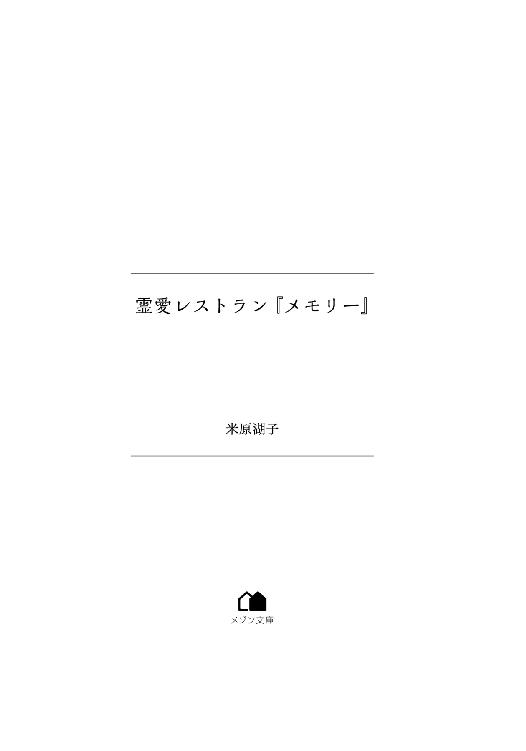

| 霊愛レストラン『メモリー』 (メゾン文庫) | |
| 米原 湖子 | |
| 一迅社 (2018) | |

「弥生ちゃん、どうしよう。このままでは私、就職浪人だ」
紅葉の季節が終わった大学四年生の晩秋、また不採用通知が届いた。
世間は『景気回復』『超売り手市場』などと、就活生が喜びそうな話題で沸き立っているというのに......あれは嘘なのだろうか？
スンと鼻を啜り、見上げる先には憎らしいほど晴れ渡った空。
眩しい......今の私には眩しすぎる。
すぐ空から目を逸らして項垂れる。その頭を親友はよしよしと撫でながら「めげるでない」と溜息交じりに言ってくれる。
「あんなに頑張っているのに――もしかしたらとは思うが、あやつになら分かるだろうか......」
途中から言葉が曖昧だったけど、弥生ちゃんも私の現状を不思議に思ってくれているようだ。私だって不思議だ。周りの子たちは行く先も決まり、心はすでに春。なのに私は桜どころかぺんぺん草も生えない氷河期真っ只中。それでも――。
「ありがとう、弥生ちゃん」
そんな五里霧中の今の私には、どんな言葉であろうと慰めは嬉しい。ちょっぴり心が凪ぐ。でも――。
「もし聞けるなら理由が知りたい」
本当に何がいけないのだろう？
おそらく内申書は悪くない......と思う。成績は上の下を維持してきたし、素行は胸を張って良好と言える。自力で調理師免許も取得した。
容姿は並だと思うが......別に美人秘書を狙っているわけではない。だから、そこが問題ではないだろう。
私はただ、正社員になって社会に認められるように地に足がついた生活がしたいだけなのに......。
キュッと目を閉じ両手を胸元に置く。
触れてもそこには何もない。でも......あの時、祖母に貰った御守りは確かにここにある。それに向かって小さく呼びかける。
――紅葉ちゃん......お兄ちゃん。
暗闇の中に祖母と兄の顔が浮かぶ。二人はいつものように『大丈夫だよ』と微笑んでくれるが......本当に大丈夫なんだろうか？
ゆっくり目を開け、再び空を仰ぎ見る。
『人の世は、人と人とが支え合ってこそ成り立つもの。どの者も気付かぬうちに誰かを必要とし必要とされるもの。だから、たとえ我が身に絶望しても、その誰かのために何があっても生きなければならない』
折りに触れ、祖母はそう私を諭した。でも......この状況で誰が私を必要としているのだろう？
――本当に必要とされていたのは兄だ。
私よりも五歳上だった兄は優しくて何でも良くできた。私はそんな兄が大好きだった。
――でも......もうこの世にいない。
だから、兄の分も生きなければと懸命に頑張っているのに......私の思いを嘲笑うかのように、さらに数週間が過ぎ、秋風が木枯らしに変わっても、届く知らせは不採用ばかりだった。
流石の私も自信喪失。ナメクジに塩状態。いっそこのまま溶けてなくなり露と消えようかと現実逃避するも、現実は悠長に待ってはくれない。
〝花咲香織〟履歴書に幾度この名を書いただろう。
「花も咲かぬのに花咲とはこれいかに！」などと自虐ネタで無理やり我が身を奮起させ、書き終えたばかりのそれを手にとある場所に向かう。
だが、今日は就職活動ではない。
過去、下宿仲間の先輩たちが、口を揃えて『就活は貧困の始まり！』と言った。
スーツに靴に鞄。面接会場までの交通費に時には宿泊費。その他諸々の費用以外にバイト時間が削られ収入は激減――だからだそうだ。
そして、現在、私は不本意にも先輩たちの言葉を自分の身で実証している。それも長期に亘って！
そんな現状の中でさらに追い打ちをかける飢餓的事態が起こった。バイト先だった居酒屋の店長が、従業員の給料をネコババして逃走したのだ。
『申し訳ないが今月分は翌々月払いになる。それから今日限り店は閉店する』
信頼していた人の裏切りに、老齢のオーナーは相当ショックを受けたようだ。そう言いながら涙ぐんでいた。
でも、それはオーナーだけじゃない。私も同じだった。
働いた分は貰えると聞き安堵したが、〝閉店〟の二文字に泣きたくなった。就職先も決まらない上にバイト先まで失ったのだ、当然だろう。
まさに踏んだり蹴ったり。
この状況を打破するにはと考え、これはもう弥生ちゃんのところでお祓いを受けるしかないと思い至ったが、ハタと気付いた。
地獄の沙汰も金次第、祓ってもらうにもお金は必要だと。
ダメだ......そんな余裕はない。
やむなくお祓いを諦めた私の心に両親の顔がフト浮かんだ。きっと実家を頼れば仕送りを増額してくれるだろう。
でも、双子の弟たちも来春から大学生。国立大学に受かったが、一度に二人分となると、それは文系私立大学よりも多い額だ。
甘ったれた気持ちに、だから『頼ってはいけない』と理性が働きストップをかけるが、でも『ピンチだ』と本能がその気持ちを揺さぶった。
そんな葛藤を数日繰り返したが、『このままではいけない』と思い自分に活を入れると、就職活動が優先できて、なるべく時給が高い、実に勝手極まりないバイトを探し始めた。
そして、降って湧いたようにそんな都合のいいバイト話が持ち込まれたのは、一昨日のことだった。
紹介者は弥生ちゃん。しかし、彼女の第一声はとても親友とは思えない言葉だった。
『競争率は激しいが、ネバーギブアップ！ 当たって砕け散ってくるがいい』
応援しているのかいないのか。どちらかと言えば『不採用間違いなし』と言っているような台詞だった。
でも、『時給千八百円で賄い付き。マスターは超絶イケメン。だから、バイトの募集をすれば毎回三十人以上の応募がある』と聞けば、なるほどと納得するしかなかった。
『でも、そんなだったら絶対に受かる気がしない。それにホールで千八百円って、いけないことでもさせられるの？』
そんな胡散臭いところは遠慮しようと思ったら、珍しく弥生ちゃんがフォローを始めた。
『そういう裏はない。ただ厨房も手伝って欲しいからではないだろうか......』
だが、実に歯切れの悪い言い方だった。
『......だから、すぐに応募するといい』と言われた時、本当に大丈夫だろうかと訝しく思ったが......タイミング良く弥生ちゃんが滅多に見せない〝女神の微笑み〟を浮かべた。
今思うと、あれは弥生ちゃんの作戦だったのではないだろうか？
私は彼女が浮かべる〝クールな美人の稀なる微笑み〟に弱い。過去、何度それに惑わされたことか。
流石は稲荷神社の女狐......じゃなく娘だと感心しては、幾度も『学習しろよ』と自分を叱咤した。
なのに今回も結局、惑わされ――いや、明日の糧を得るためには背に腹は代えられないと思い、応募してしまった。
そして、今日、早々に面接と相成った訳だ。
僅かに見えた光明に、これで少しは運気も上向くかなと気持ちは浮上したが......。
不運は終わっていなかった。
そう、私はすでにこの時、その後の人生をも左右する、不可思議な世界に足を突っ込んでいたのだ。
その場所は私にとって甘美で魅惑的な場所だった。だから、私はもうここを離れられないだろう。たとえ何が起ころうと、たぶん一生――。
ここが、私の望む道がある場所だから......。
そこは自宅アパートのある駅から、電車で大学のある駅を挟んでさらに一駅。初めて降り立つ場所だった。
「うーんと......こっちみたい」
スマホの地図アプリに従って、駅近くにある賑やかな商店街を行く。赤い矢印がコンビニの手前の三叉路で左を指した。そこを指示通りに折れる。するとさっきまでの喧騒はどこへやら、粛然とした路地に出た。車が一台通れるほどの道幅だ。
「こんな閑散としたところにお店を出して、儲かるのかなぁ」
どうやらこの辺りは古くからある閑静な住宅地らしい。ひしめき合うように軒を並べる家々に郷愁を感じる。
そんな感想を抱き、探検気分でキョロキョロ周りを見回しながら、さらに路地を進むと......また三叉路だ。少し広い通りに出た。矢印は正面を指している。
「もしかしたら......あれかなぁ？」
道を挟んだ向こう側に木々に囲まれた広い敷地があった。ふさふさと茂った葉の間にチラッと何かが見える。それを凝視するとブラックボードに白く〝メモリー〟の文字。
「あった！」
狭い路地を通ってきたから、ウナギの寝床のようなお店を想像したが......全然、違った。
敷地は腰丈の生け垣に囲まれていて、よく見ると白い花をつけていた。入り口を彩るピンクローズのアーチがメルヘンチックでとても素敵だ。
早々に通りを渡り敷地の前に立つと、「うわぁ」と感嘆の声が漏れる。そこだけまるで別世界だった。
「広い庭」
私でも知っているコニファーやオリーブといった常緑樹が、形良く剪定されて配置良く植わっている。その足元には冬季だというのに草花が生い茂っていた。まるで植物園だ。
「――いい香り」
その合間に赤レンガの小道が見え隠れしている。訪れた人を目的の場所にエスコートしているようだ。そのまま視線をその先に向けると――。
「凄く素敵なお店」
赤い屋根と白い壁が可愛いクラシカルな洋館が目に映る。
「ありがとう。香りの元はね、今を盛りと咲き誇っている薔薇と柊の花。それにハーブたちだよ」
「えっ！」と背中から聞こえた声に振り向き、唖然と目を見張る。
言葉を失くす、というのはこういうことだ。
そこに立っていたのは......人間？
チョコレート色のサラサラな髪。透明感のある白磁のような肌。均整の取れた体躯から伸びる長い手足。どれをとっても作り物のようで全く欠点が見つからない。全身が極上のパーツで完成された――人ならざるモノのような美しい人だった。
だからだと思う。
「黒縁眼鏡の、神......様？」
そう口を衝いて出たのは。
「神様って言われたのは初めてだ」
その人がくすっと笑った。
その微笑みに思わず見入ってしまった。
弥生ちゃんもだけど、美形な人の微笑みは至極の凶器だと思う。胸を貫かれた、と思った途端、ドキドキが止められなくなる。
「君は十六時から面接の花咲香織さん？」
......ということは、この人がここの店主さん？ 弥生ちゃんの言葉は誇張されたものじゃなかった。
「あっ......はっはい。そうです」
上ずった返事をしながらペコリとお辞儀をすると、彼も軽く頷いた。
「ここで自己紹介もなんだから、とにかく中に入ろうか。今日は終日面接日にしたから店は休みなんだ」
大きな紙袋風エコバッグを抱えて、その人は案内をするように先を行く。
後ろ姿を見ながら、背高いなぁ、モデルさんみたいだなと思っていると、急に彼が振り向いた。
「迷わずに来られた？」
「はっはい！ 大丈夫でした」
心臓を躍らせながらも返事をすると――。
「なら一次審査は合格かな」
それだけ言ってまた歩き出した。
......今のはどういう意味？
疑問を抱きながらもついていくと、店の鍵を開けた彼が白いドアを手前に引く。
チリリーン。
ドアベルの優しい音色が耳に届く。心地良い音だ。
「さあ、どうぞ」
背中でドアを押さえ、彼が私を中へと誘う。
「ありがとうございます」と言って店に入った途端、「うわぁ」と再度感嘆の声が出る。
白を基調とした店内は、三方の壁に大きな窓があるからだろうか、思っていた以上に明るく広かった。
高い天井に備えられたアンティークライトとシーリングファンも素敵だ。
そして、レトロな雰囲気が漂う店内も、前庭と同じで緑が溢れていた。
まるで温室のようだ。だからだろうか、室内にいることを忘れそうなほど空気が澄んでいると感じた。
ここ、好き！ 絶対に居心地がいい！
好印象を抱きながら座席を数える。カウンター席が、いち、に、さん......八席。それから、緑の合間に見える四人掛けのテーブル席が......こちらも八席ほど。
思った通りだ。スペースの割に席数が少ない。だから雰囲気がゆったりしているんだと以前のバイト先を思い出す。あの居酒屋とは大違いだ。
そんなことを思っていると目の端に何かが映る。
「何だろう？」
羽のような葉が四方に伸びた樹とハート型の大きな葉の樹。その間の隙間に目を向け、その奥を見る。
――ピアノだ。
存在感溢れる真っ白なグランドピアノが一段高い位置に置かれていた。
もしや彼がこれを弾くのかなと思っていると、「ここでちょっと待っていてね」と声を掛けられる。
指定されたのはカウンター席の中央。言われた通りそこに腰を下ろす。
カウンターは角の丸いＬ字形で、Ｌの短い方の壁側にドアがあり、彼がそこに入っていった。そして、出てきたのはカウンターの向こう、厨房側。
「そのドアはバックヤードに続いていて、中にあるもう一つのドアからここに出られるんだ」
バックヤードには備蓄棚や食器棚、それに大型の冷蔵庫などがあるらしい。
店内の様子を軽く説明しつつ、彼は持っていたエコバッグをシンク横の台に置き、中からフランスパンや卵を取り出すと所定の位置に収めていった。
そして、片付けが終わると、「お待たせ。コーヒーでいい？」とニッコリ笑う。
その微笑みにドギマギしながら「はい」と返事をすると、彼はコーヒー豆をミルに入れ、カリカリと挽き始めた。途端に芳ばしい香りが漂ってくる。
挽き終わった豆をドリッパーに移し、ステンレス製のケトルでお湯が注がれると、さらに深く濃いかぐわしい香りが立ち上り鼻腔をくすぐった。
じっと見つめていたからだろうか、「普段、ハンドドリップはしないよ。いつもはアレ」と笑いながら彼が指差した先には業務用のコーヒーマシーン。
弥生ちゃんから『厨房はマスターだけ』と聞いていたので、なるほどと思う。あれなら一人ででも回せるだろう。
小さく頷き視線をサーバーに戻すと、ポタポタと落ちる黒い液体に思わずゴクリと喉が鳴る。
「コーヒー、好きなの？」
「......はい。父が好きなので。実家にいた時はいつも付き合いで飲んでいて。でも、今は金欠で、インスタントもなかなか飲めなくて......あっ、いえ」
テンパって余計なことを口走ってしまったが、彼はくすっと笑っただけで、「そうなんだ」と穏やかに答えてくれた。きっと優しい人なんだと思う。
淹れたてのコーヒーをソーサーに置かれたカップに注ぎ、彼はそれを私の前に置いた。
――マイセンのブルーオニオン。数万円するカップだ。
「お代わりもあるから、遠慮なくどうぞ」
そう言って、彼は大きなマグカップに口を付ける。
私もそういうカップでよかったのに......と思いながら、恐る恐る高価なカップを手にして、一口啜ると途端に笑みが零れた。
「わぁ、美味しい！ 癒やされる味ですね」
「素敵な感想をありがとう。嬉しいよ」
あれっ？ 今、眼鏡の奥で瞳が輝いた？
「さて、遅くなったけど自己紹介するね。僕はここの店主で音野響です。年齢は二十六歳、独身だけど他界した両親に代わって五歳の妹、静の養育権を保有しています」
我が子と言っていいほど年が離れているなぁ、と思っていると、マスターがくすくす笑い始める。
「顔に出ているよ。思考がダダ漏れ」
「えっ！ すっすみません」
いけない、と下を向く。
「正真正銘、実の妹だよ。何を俯いているの？ 顔を上げて」
あまりのバツの悪さから、俯いたままチラッと彼の方を見る。それを目にした彼がまた笑い出す。
「君って本当に面白いね」
ふーっと息を吐き出して笑いを収めると、彼は説明を続ける。
「僕は母が十八歳で生んだ子で妹は三十九歳の時の子。で、二年前、両親が事故で他界してからは僕が親代わりなんだ」
どうしよう、こんな詳しく家庭の事情を聞いちゃって......。
普通なら、ここでお悔やみを言うのだろうが、何を言っても取って付けたように思えて、この場に相応しい言葉が見つからない。
「二次審査合格」
黙ったまま固まっている私に突然前振りもなく彼がそう告げた。
さっきから合格って......いったい何を基準にパスしてるんだろう？
何も分からないが、どうやらアルバイトの面接は始まっているんだと悟る。
だったら、と慌ててトートバッグからＡ四判の茶封筒を取り出す。それをマグカップの横に置いた。
「これ、履歴書です」
彼は封筒を手にすると中から用紙を取り出した。
「実物は可愛いけど、写真の君は大人びて見えるね。とても綺麗だ。あっ......これってセクハラ発言に当たらないよね？」
慌てる彼に「はい」と曖昧に微笑み、あの日のことを思い返す。
その写真は就職活動用に撮ったものだ。
『その姿で撮りに行く？ それでは受かるのも受からない！ キャリアセンターのアドバイザーも言っていただろう？』
『そういえば、印象良く身綺麗にしましょう！ みたいなことを言ってたね』
そんな会話の後、弥生ちゃんは小言を言いながらも、伸ばしっぱなしだった私の髪を綺麗にシニヨンにまとめ、念入りに、でもナチュラルに見えるように化粧をした。
――言わば、写真の私は作られた私だ。今日はほとんどノーメイクにざっくりとしたお団子ヘアー。違うのは当然だ。
でも、そんな裏事情を述べてもなぁと思いつつ――。
「あの、可愛いとか綺麗とか、お世辞でも嬉しいです」
照れ笑いを浮かべながら一応お礼を言うと、「お世辞じゃないよ」と言いながらマスターは履歴書に視線を戻した。
「へー、調理師免許を持ってるんだ。なら、厨房の方もすぐに任せられるね」
「はい。食に携わる仕事に就きたくて取りました。一度食べたら同じ味で同じ物が作れます！」
堂々と胸を張って言うと、私の珍妙な返答に、彼は戸惑いの色を示す。
それもそうか。これじゃあ、いきなり『だから食べさせろ！』と言っているようなものだ。でも、これが私の特技だから仕方がない。
「あの、言葉足らずですみません。私、味覚が敏感で、食べた物と同じ味の物が作れるんです」
弥生ちゃん曰く『味覚を感じる舌が異様に発達している人』らしい。
「へー、同じ味をねぇ。それは面白い」
悪戯を思い付いた子供のように彼が瞳を輝かせる。
「じゃあ、ちょっと試してみようか。目を閉じて下を向いていて」
言われた通りにすると、カチャカチャ、トントン、とリズミカルな音が聞こえ始めた。しばらくすると、今度はジューッという音と共に玉葱の甘い香りとお肉が焼けるかぐわしい匂いがする。
食欲をそそる香りが脳内に蓄積された記憶と結び付き、匂いから想像した食べ物を徐々に完成形へと変えていく。
そして、ゴクリと喉を鳴らしたと同時にトンと音がして、「どうぞ」の声で瞼を上げると――思った通りだった。目の前に黄金色をしたクラシカルなオムライスがあった。
そこにケチャップで赤く『welcome』の文字。
別に意味はないと思うけど、不運続きの日々だったので思わず胸がジンとした。
「どうぞ召し上がれ」
「はい、いただきます」
両手を合わせて一礼して、スプーンでひと匙すくい口に入れる。
「あっ、美味しい！」
ケチャップ味のチキンライスに、グリーンピースがぷちぷちとアクセントを付けている。玉子は今流行りのふわトロじゃなく、内側だけ少し半熟の昔ながらのオムライスだった。
「とても懐かしい味がします」
「そう。ありがとう。じゃあ、こっちに来て作ってくれる？」
コクンと頷き厨房側に回り、手を洗っているとマスターが言う。
「材料と調味料を教えて。僕が揃えるから」
「えっと、卵、玉葱、人参、グリーンピース、鶏肉......」
ステンレス台に言った物が全て並ぶ。
「――じゃあ、始めますね」
彼の視線が気になりながらも、それでも同じ物ができたと思う。
湯気を上げるオムライスを差し出すと、一口食べたマスターが目を見張った。
「全く同じ味だ。香織ちゃん、凄いね」
えっ、いきなり名前呼び......!?
オムライスがどうのこうのより、私はそっちの方が凄くびっくりで気恥ずかしい。
えへへと照れ笑いを浮かべ、席に戻ろうと一歩踏み出したところでチリリーンとドアベルの音がした。
「......ん？」
足を止めて入り口の方に目を向けると、黒髪短髪の『バリバリ硬派です』みたいなラガーマンっぽい人が、小さな女の子の手を引き入ってきた。
あれ、お休みって言ってなかった？
ラガーマンは厨房側にいる私たちを見て、ちょっと驚いた表情をする。
「お前、何やってんの？」
「お兄ちゃま、ただいま」
そんな風に呼ぶっていうことは、彼女が妹の静ちゃん？
顔を隠していたつばのある黄色い帽子がゆっくり上を向く。現われたその顔を見た瞬間、私の目がその顔に釘付けになる。
......何、この輝く小動物！
マスターと同じ白い肌に、マスターより大きな瞳と赤い唇。彼をミニチュアにして髪を長くして女の子にしました、みたいな感じの子だ。
マスターが神様なら、この子は地上に降りた天使！ この兄妹、天上の住人？
私の驚きなどどこ吹く風で、マスターとラガーマンが話し出す。
「今、アルバイトの面接中」
「へー、厨房に入れるって、珍しいこともあるもんだ」
話しながらラガーマンが、天使を抱き上げカウンター席に座らせる。そして、その横に自分も腰掛けると勝手に自己紹介を始めた。
「俺は響の友人。安倍妙快という。名前呼びでいい」
見かけによらずフレンドリーな人だ。
「安倍晴明の子孫だが先祖みたいに術は使えない。だが、武術は一通り体得済みだからボディーガードを雇いたい時は言ってくれ、安くしておく」
くすくすマスターが笑う。
「腕っぷしは強いけど、本職はお坊さんで保父さん。家が寺で保育園を経営しているんだ。静はその保育園の年中組さん」
「――で」とマスターが続けて私に目を移す。
「彼女が、れいの花咲香織さん」
......ん？ 〝れい〟とはどういう意味だろう。疑問に思いながらもペコリとお辞儀をして妙快さんを観察する。
陰陽師とは若干違うと思うけど、お坊様だから同族種みたいなものだろうか？
それより保父さん？ イケメンだけど、このがたいにクマさんエプロンとかつけてるの？ 想像したら思わず頬が緩んでしまった。
「――それで、二人は厨房で何をしていたんだ？」
意味なく笑みを浮かべる私を妙快さんは訝し気に見ながら訊ねる。
「あっ、そうそう。妙快、これ食べてみて」
マスターの作ったオムライスの横に私の作ったオムライスを並べる。
「何だか分からんが、この二つのオムライスを食べればいいんだな」
「ああ。静もね」
そう言ってマスターが二人にスプーンを渡すと、妙快さんと静ちゃんは、仲良く「いただきます」と声を合わせてひと匙ずつ口に入れた。
「なぁ、何か違うのか？ 同じものだろ？」
「うん！ 二つとも同じくらいおいしい！」
二人の反応に、マスターは満足そうに笑みを浮かべると種明かしをする。
「それが違うんだなぁ。こっちの皿は香織ちゃんが作ったものなんだ」
「ヘッ？」と二人が同時に私を見る。
「嘘だろ。同じ味だぞ」
妙快さんがもうひと匙ずつ口に入れ、首を捻る。
「そっかぁ、お姉ちゃまの舌は特別なんだね。いっしょだ」
そう言って静ちゃんがにっこり微笑んだ。
何が一緒なんだろうと彼女の言葉を不思議に思いつつも、私よりこの子の方が不思議だ、と静ちゃんを見つめる。
彼女の瞳に私は確かに映っている。でも、さっきから全く視線が絡まない。よく観察しなければ分からないほど些細な違和感だけど、もしかしたらこの子、目が見えないのでは......？
「三次審査合格」
その声で我に返る。
「香織ちゃん、明日九時に来られるかな？」
「あっ、はい！ マスター」
私の返事に「うーん」と彼が小さく唸る。
「あのね、これからマスターじゃなく響って呼んでくれる？ 嫌なんだマスターって呼ばれるの」
「響！ お前、名前呼びって嘘だろ......」と驚き唖然とする妙快さんに対して、響さんは全く頓着せずに、「細かい説明は明日ね」と軽くウインクした。
いったい何が何だかだが、どうやら雇ってもらえるらしい。
よかった！ さしあたり生活の心配はなくなった。
「はい！ ありがとうございます」
だから、静ちゃんの件はひとまず忘れることにした。
「これからどうぞよろしくお願いします」
深々とお辞儀をして頭を上げると、響さんではなく妙快さんが言った。
「――長く続くといいな」
「はぁぁぁ、極楽極楽」
湯船に浸かり、浴槽に背を預けて目を閉じる。
急激に下がった気温に末端冷え性の私はついていけない。ジンジンする手足がお湯の中で緩々と解れていくのを感じながら、「ほーっ」と息を吐き出す。
体の感覚が戻ってくると気持ちにも余裕が出てくる。
「――あれは、どういう意味だったのかなぁ？」
頭の片隅にあった妙快さんの言葉が蘇る。
「まさか、試験期間中に『はい不合格です』ってバッサリ切られちゃうってことじゃないよね」
ぱちっと目を開け、「よっ」と身を起こす。
やっと決まったバイトだ、それだけは回避したい。
それに、あんな素敵なお店だし、「ひっひっ響さん......」と彼の名前を口にした途端、きゃーと照れてブクブク湯船に沈む。
――本当、有り得ないほどのイケメンだった。
光り輝く彼の顔が瞼の裏に浮かぶ。そんな人と一緒に働けるんだ。
むふふと口角が上がる。
あっ、もし奇跡が起こって、『僕と付き合って下さい』なんてことに......万が一にもないなぁ。妄想のしすぎだ！
ザバンとお湯を顔に掛け、それにしても......と両手で滴る水滴を拭いつつ、ふと忘れようとしていた静ちゃんのことを思い出す。
「一度は否定したけど、たぶん私の勘は間違っていない。静ちゃんは目が見えていない。でも、見えていない人が見えるように行動するって、難しいよね......あっ、そうか、あの場所は彼女の――自分のテリトリーだからだ」
そう無理やり自分を納得させると、バシャンとワザと音を立てて湯船から出る。
「そう思っておこう！ とにかく、何があろうとあそこに居続ける」
明日のためを思って丁寧に髪と体を洗い、泡だらけの体をシャワーで流すともやっとした気持ちも一緒に流れていく。
「よし、ファイトだ！」
自分で自分にエールを送り、きゅっとノズルを閉にする。
＊ ＊ ＊
翌日はお天気お姉さんが、『今年一番の寒さになるでしょう』と言っていた通り、布団から出るのも億劫になるほど寒い朝になった。
目と鼻の先に十二月が迫っているのだから当然と言えば当然のことだが、私の心には春風が吹いていた。
手早く家事を済ませて身支度を整える。普段の私ならここで朝食をとるのだが、今日は胸がいっぱいで食べる気がしない。
「ええい、もう行っちゃおう！」
オフホワイトのダウンコートと帽子を身につけ、ドアを開けた途端、外気が体に纏わりつき一気に体温を奪う。
「うわっ、寒っ！」
吐く息も真っ白だ。手袋と耳当ても必要かなぁ、と仰ぎ見ると、キンと冷たく澄んだ空気の中に真っ青な空が目に映る。
とてもいいお天気だ。
「大丈夫、このまま行こう！」
鍵を掛けるとスッと背筋を伸ばしてテンポ良く階段を下りる。
気持ちの問題かもしれないが、いつもより体が軽い。
そうだ！ まだまだ時間はある。鈍った体に鞭を打とう！
即行動とばかりに気合いを入れて歩き出す。
二駅歩いた体はじんわり汗を掻くほど温まった。チリリーンとドアベルを鳴らして店に入り、「おはようございまーす」と元気良く挨拶をする。
「おはよう。何だかものすごく血色がいいね」
柔らかな笑みを浮かべる響さんは今日も神々しいイケメンだ。
「はい。今日からよろしくお願いします」
「こちらこそよろしく」
昨日は緊張していて気付かなかったが、響さんの掛けている眼鏡は伊達だ。顔の輪郭がレンズのところでズレていない。
それによく見ると彼、ハーフかクォーターのようだ。グラスにブルーの色が薄く付いているから自信はないが、瞳の色が微妙に青い気がする。
まぁ、たとえそうじゃなくても、足の長さや白い肌、見た目の全てが羨ましい。
今日の出で立ちだって、と頭の天辺からつま先までじっくり盗み見る。
有り触れた白シャツに黒パンツ姿。なのに漫画に出てくるイケメン執事のようだ。それも極上の！
うふふとひとりでに口角が上がる。
何と美味しい職場なんだろう！ 日々、美味に有り付け眼福も得られるとは。
うんうんと一人悦に入っていると――。
「どうかした？」
響さんが困惑気味に私を見下ろしていた。その距離僅か五十センチほど。
「うわぁ！」
二歩後退して仰け反る。
超絶イケメンの超アップって、やめて下さい！
「あっ、いえ。えっと、他の方は？」
動揺を隠すように慌てて店内を見回す。
「いないよ。店が客を選ぶからね。コンスタントにお客さんは入ってくるけど、それほど混まないんだ。だから、アルバイトは香織ちゃんだけ」
「そう......なんですか」
余計な心配かもしれないが、それなのにあんな高い時給で働かせてもらっていいのだろうか？
よし！ ここは私が尽力して店を盛り立てよう！
長女魂に火がつき、ふんと鼻息荒く拳を作っていると、当の響さんは何がおかしいのかくすくす笑いながら穏やかに言う。
「気合いを入れているところ申し訳ないんだけど、店をオープンする前に今後のことを相談したいから、とにかく座ってくれる？」
そして、窓際にある四人掛けのテーブル席の椅子を引き、「どうぞ」とエスコートしてくれた。その仕草があまりにスマートで、ポーッと見惚れながら腰を下ろす。
少しすると、「はい、どうぞ」とテーブルの上にマグカップが二つ置かれる。
「昨日、これ新調したんだ。香織ちゃんは赤い方ね」
にこにこと微笑む響さんの前には青いマグカップが置かれている。
よく見なくてもだが、どう見ても二つはペアだ。
他意はない！ きっとない！ そう思いながらもボッと頬が熱くなる。
もしかして......この人、天然じゃないだろうか？
案の定、響さんはこんなこと何でもないよと言うように、テーブルに一枚の用紙とノートパソコンを置いて淡々と話し始めた。
「えっと『採用時待遇案』なんだけど。時給と賄いについてはこれでＯＫかな？」
私も気持ちを引き締め直して深く頷く。
「じゃあ、入れない時間や曜日はある？」
「就職活動中の身なので面接のある日はお休みを頂きたいです。それ以外は......なるべく多く入らせて頂けると有難いです。あの、物凄く金欠なもので......」
この際、恥も外聞もない。
パソコンのキーを軽やかに叩きながら響さんが、「了解」と微笑む。
「店は不定休だから都合の悪い日は都度言って」
そう言えば、昨日も面接日とか言ってお休みにしていた。
「営業時間は十一時から二十一時。前後一時間で開店準備と後片付け。アイドルタイムは十五時から十七時。就業時間は一日上限八時間さえ守ってくれれば好きなだけ入っていいよ。食事は昼夜二回......」
「えっ、何時間でもいいんですか！ 二食も頂けるんですか！」
「何なら朝も一緒に食べる？」
「はい？」
どういう意味だろうと思っていると、「金欠なんでしょう？」と響さんが悪戯っぽく笑う。
「ああ、そういう意味ですか」
「それに、店の味をたくさん覚えて早く厨房に立って欲しいしね」
おお！ 何ていい人なの。この人、本当に神様かもしれない。
「任せて下さい！ 食べた分以上の働きをします！」
ドンと胸を叩くと、口元にグーの手を置いた響さんがクッと笑いを噛み殺す。
「うん、期待してる。それから、ユニフォームはないけど、基本、白シャツに黒パンツでね。カフェエプロンとブラックタイは貸すから用意しなくていいよ」
だから執事風なのね。納得！
「靴は黒で、長時間の立ち仕事だからヒールは低めがいいよ――以上、服装についてはこのイラストを見てね」
響さんがテーブルの上の用紙をクルッとひっくり返すと、そこに条件通りの服装をした女の子のイラストが現われた。
どことなく私に似ている気がするが、響さんが描いたのだろうか？
絵心もあるのだろうかと感心している間に、響さんは仕上げた『採用待遇書』を一部印刷して、「ＯＫならサインして」と私の前に並べた。
早々にサインをすると、「明日からよろしくね」と言いながら、響さんが胸ポケットから名刺を取り出した。
「これ個人的な連絡先。店の番号と一緒に登録しておいてね。登録しながら僕のことを思い出して」
意味深な微笑みを浮かべる響さんを、呆気に取られながら見ていると、「ちなみにここの二階が自宅だから、何かあったら飛んできていいよ」と、また意味不明なことを言う。
とりあえず「はぁ」と返事をして名刺を受け取ると、余白に電話番号とメールアドレスが綺麗な文字で書き込まれていた。
わっ、だっ男性から、こんなプライベートの番号を貰ったのって初めてだ。たぶん使うことなんてないと思うけど......やだ、顔がニヤける。
それを必死に堪えていると――。
「それでなんだけど、これからブランチにするけど、一緒にどう？」
軽くウインクする響さんだが憎たらしいほど魅力的だ。それに、物凄く魅力的なお誘いだ。
だが、何だか胸がいっぱいで、これじゃあ何も喉を通らない、と思っているのにグーとお腹が鳴る。それで、朝食抜きだったことを思い出す。
何もこんな時に鳴らなくても。きっと響さんにも聞こえたに違いない。恥知らずなお腹の虫を恨み、ここから消えたいと思いながらも、「――はい、ご相伴に与ります」と答える私がいた。
人間、やっぱり空腹には勝てないなぁ、と思いながら手持ち無沙汰で待つこと十五分。
テーブルの上に、コトンと響さんお手製のブランチが置かれた。
ワンプレートのお皿に綺麗に盛り付けられた二種のバケットサンドにふわふわオムレツ、フレッシュサラダとカップスープ。
どれも美味しそうだ。
ここのところ倹約を強いられていた私はその豪華さに目を奪われる。
いつものように口いっぱいに頬張りたいところだが......響さんと向かい合って食事って、罰ゲームだろうか？ 緊張感が半端ない！
「香織ちゃんは......」
それでもあまりの美味しさに、サーモンとクリームチーズのバケットサンドを一心不乱に口に運んでいると、響さんに声を掛けられる。
「ヘッ！ なんれひょう！」
モグモグと口を動かしながら、視線を向けるとぷっと吹き出す響さん。
この人、実は笑い上戸に違いないと思いながら、口の中の物をゴクリと飲み込む。
「ごめんごめん。えっと、香織ちゃんは昔から味覚が鋭かったの？」
「うーん、たぶん？ 違うと思います」
曖昧な返事に響さんがハテナマークを浮かべる。
「先天的じゃなく後天的なものってこと？」
「おそらく......そうだと思います」
食べかけのバケットサンドをお皿に置き、スープスプーンを手に取ると、カップの中のクラムチャウダーを縁に沿ってゆっくりかき混ぜる。
旋回するクラムチャウダーと共に、中央に浮かんだドライパセリが渦に巻き込まれ沈んでいく。それとクロスするようにフラッシュバックする過去。
「――得たものがあれば失ったものもある......」
そうだ、失ったものは得たものより大きい。
「君は何を失ったの？」
ハッと手を止め視線を上げると、美しい顔がこちらを見ていた。
「――あっ、あの、私、何か言いましたか？」
「そうだね、今、とても興味深い言葉を君は呟いた」
その瞳が妖しく光る。
「えっと、何を言ったか分かりませんが、おバカな戯言だと聞き流して下さい」
「ふーん」
悩ましい笑みを浮かべると、響さんがおもむろに眼鏡を外す。
驚いた！ ブルーっぽい瞳だと思っていたけど......剥き出しになった彼の瞳は吸い込まれそうなほど深く濃いコバルトブルーをしていた。
彼は頬杖を付き、私を凝視する。その瞳に魅入られ身動きができなくなる。
「君は不思議な子だね。やっぱり何も視えない」
いかにも作り笑いだと分かる微笑みを浮かべ、彼は眼鏡を掛け直した。
途端にふーっと力が抜け、全身が脱力する。
いやいやいや、不思議なのは貴方の方だ！ この人、何なんだ？ 眼鏡を取ったらたちまち得体の知れないモノになったぞ！
どんぐり眼で響さんを見つめていると、「ごめんね」と彼が謝る。
「驚かせるつもりはなかったんだけど。この瞳は、えっと、僕の祖父がイギリス人で――」
やっぱり、と頷く。
「で、僕......視えちゃう人なんだ」
「......ん？」
この人、今、何て言った？ 見えるって、何が？
「僕はね、霊が視えるんだ」
「――あのぉ、真顔でふざけています？」
「いたって真面目だよ」
ダメだ、意味不明だ。そりゃあ、本物の神様だったら何でもできちゃうかもしれないけど、この人、外見だけの似非神だから。
「あのぉ、お疲れですか？」
「ううん」と響さんがゆっくり頭を振る。
「よく聞いて。どんな人間も霊の〝宿主〟で、一体や二体は宿らせているもんなんだ。守護霊もその一つで、視える者はそれら全部をまとめて〝宿借り〟と呼んでいる。そして、僕はそれが〝視える〟人なんだ」
どうしよう。どうやら本格的にスピリチュアル話に突入してしまったようだ。
「はぁ」と取り敢えず相槌を打つ。
「でもね、君には一体も宿借りが視えない。どうしてだろう？ こんなことは初めてだ」
どうしてと訊ねられても......私に分かるはずがない。
「これは由々しき問題だ」
穏やかな声だが底知れぬ重たさを感じる。
「宿借りはね、宿らせてもらうお礼にその人を災いから守ったり、幸運を招いたりするんだ」
信じられない、と思いながらも話に引き付けられる。
「人の心を読んだりはできないけど、僕たち〝視える〟者は宿主を通じて宿借りの言葉を聞くことができるんだ。宿借りはとても素直だから、いろいろ教えてくれるんだよ」
彼の話をジャンル分けすると、ホラーかオカルトだろう。
でも、恐怖を抱かないのは、響さんが〝宿借り〟というモノに愛情を持っているからだと思う。だって、宿借りの話をしている響さんの表情はとても優しい。
「宿借りの数が増えるほど、与る恩恵もより良質で多くなるんだ」
「――それって強運と言われる人でしょうか？」
おずおずと訊ねると、響さんはニッコリ微笑み「そう」と頷く。
「お金持ちで美人、賢くて性格もいい。そんな女性いるよね？」
「滅多にいませんがいますね。天が二物も三物も与えたような、そんな人」
私とは真逆の女性だ。
小学生の時、転校してきた徳子ちゃんがそうだった。彼女は可愛い上に性格もよかった。おまけに勉強もスポーツもできてピアノも弾けた。バレエを習っていたからスタイルも抜群によかった。
そんな彼女に憧れていた子はたくさんいて、私もその中の一人だった。
「宿借りって、魂のピュアな人や美しい人に集まりやすくて、そういう人はどんどん幸運が増えていくんだ。まぁ、ちょっとでも穢れるとたちまち離れちゃうけどね」
徳子ちゃんは高校から単身海外に渡り、現在は難病に苦しむ人たちの薬品開発に携わっていると風の噂で聞いた。志の高い彼女らしい進路だ。
響さんの言葉を借りれば、あの頃以上にピュアで美しい魂の持ち主になっているということだろう。それに比べて私は......。
「逆に、宿借りが一体もいないということは......」
響さんが奈落の底まで落ちたような溜息を吐く。
「災難に遭いやすかったり、不運を招きやすかったりする」
――それってまさに私のことですよねぇ。ズンと落ち込む。
言い終えると響さんは食事に戻るが、沈黙に耐え切れず私は疑問に思ったことを訊いてみる。
「あのぉ、色の付いた伊達眼鏡を掛けているのは視ないためですか？」
響さんの話を全面的に信じたわけではないが、気になることは放っておけない性分だ。
「伊達ってバレてたんだ。そう。視えないことはないけど、掛けるとバリアができて視え難くなるんだ」
「ということはカラーコンタクトでもＯＫということですか？」
「つけたことはないけど、たぶんね」
質問しておいて失礼な話だが、やっぱり信じられない私がいる。でも、彼が嘘や冗談を言っているとは思えない。
「それと、このブルーの瞳を隠すため。煩いんだ、いろいろ」
ああ、これは理解できる。彼、眼鏡有りでもイケメンなのに、無しの顔といったら二枚目俳優も逃げ出したくなるぐらいイイ男だもん。そんな男性を女性が放っておくはずがない。
「美しすぎるって......ご愁傷様ですね」
しみじみと哀悼の意を述べると、響さんは可哀想な子を見るような眼差しを私に向け、溜息と共に首を左右に振った。
「ご愁傷様は君の方だよ。宿借りを持たない君は何かと危ない目に遭いやすいってことだよ。よく今まで無事に生きてこれたね」
大袈裟な。
「メモリーに来たのも導きがあってのことだろうね。本当によかった」
――導き？
藤宮稲荷神社という大きな神社の一人娘で、この春から正式に神職に就く弥生ちゃん。容姿に比例するように内にも謎を秘めた神秘的な美女。
彼女も何かを感じたのだろうか？ だから、ここだったのだろうか？
「えっと、今までの話をまとめると、就活が上手くいかないのも、バイト先を失ったのも、貧乏なのも、全部、宿借りがいないせい、ということですか？」
「全てとは言わないけど、無きにしも非ずかな」
改めて肯定されるとずっと我慢していた思いが一気に噴き出てくる。
「そんなぁ、自分の努力不足でならいざ知らず、超常現象のなせる業で私の人生が左右されていたなんて、あんまりです」
八つ当たりもいいところだ。でも、響さんは「うんうん、そうだね」と相槌を打ちながら最後まで聞いてくれた。――優しい人だ。
そう思った途端、彼の口から思いも掛けない言葉が飛び出した。
「心配しなくても大丈夫だよ。これからは僕が側にいて守ってあげるから」
目をぱちくりしながら考える。
守る？ 彼はどういう意味で言ったんだろう？ そりゃあ神様みたいな人に守られたら最強だろうが......。
「ありがとうございます。でも、私は守ってもらうだけの女になりたくありません」
〝守られる〟ということは、守る側に負担を強いる。私はそこから卒業するんだ。
ぐっと顔を上げ、ピンと背筋を伸ばす。
「私は食に携わる仕事をして、税金が納められる一人前の社会人になりたいんです。地に足をつけて自分の力で立ちたいんです」
胸に手を置き天井を見上げ、「皆、私、頑張るからね！」と力強く呟き、決意も新たに視線を戻すと響さんがポカンと私を見つめていた。
あれ、何か変なことを言った？
「香織ちゃん、君って......」
椅子の背にもたれるようにして仰け反りながら、響さんは「最高だ！」とお腹を抱えて笑い出した。そして、ひとしきり笑うと、目の端に溜まった涙を拭い手を差し出す。
「改めて、ようこそメモリーへ！ これからよろしく」
ほらほら手を出して、というようにクイッと顎を引く。
そんな姿も神がかり的に格好良くて......術に掛かったようにフラフラと手を出すと、響さんはその手をギュッと握り締めた。
「さっき言ったことは本気だよ。君が何と言おうと僕は君を守る。だから君は僕から離れちゃダメだよ、黙ってどこにも行っちゃいけないよ。あっ、何なら守りやすいように一緒に住んじゃおうか？」
「ふぇっ？」と間抜けな声が出る。
その時だ。「へぇー」とハモる声が聞こえた。
「お前がそんな甘々な言葉を口にできるなんて知らなかった」
「右に同じだ」
「――妙快さんと......弥生ちゃん！」
いつの間に来たのか二人がカウンターの前に並んで立っていた。
迫力のブラックペア！
百六十七センチの弥生ちゃんとそれより二十センチほど高い妙快さん。二人は全身を黒一色できめていた。それが嫌味なほどカッコイイ！
「まん丸い目をして何を驚いている？」
弥生ちゃんの切れ長の瞳が悪戯っぽく煌く。
「バイト、決まったようだな」
二人が揃ってこちらに歩いてくる。映画のワンシーンみたいだ。
「あっ、うん。ありがとう......じゃない！ 弥生ちゃん、どういうこと、これ！」
立ち上がろうとする私の肩を押さえ、私の隣に彼女が腰を下ろした。
「君たちも何か食べる？」
話を茶化されムッとしながらも響さんが律儀に訊ねる。
「コーヒー」
「俺も」
「了解」
響さんの隣に妙快さんが座ったと同時に響さんは立ち上がり厨房へ向かった。
「説明して」
コーヒーを二人の前に置き、響さんが着席すると私はすぐ横に座る弥生ちゃんの顔を覗き込んだ。
真っ直ぐ前を向いたままコーヒーを啜る弥生ちゃんの頬が僅かに緩む。
「香織の思っている通りだと思うが、他に何が聞きたい？」
「えっと、響さんの目のことを知っててここに？」
「来させたのかと訊いているのなら、答えはイエスだ」
妙快さんは弥生ちゃんをチラッと見ると、やれやれといったように補足する。
「ちょっといい？ 俺たちの関係だけど、俺と弥生は幼馴染で響とは高校からの付き合いだ。俺たち三人は奇妙な縁で繋がっている。それが〝視る〟という力だ」
私が弥生ちゃんと知り合ったのは大学の入学式。三人はそんな前から......。
「響の目のことはもう知っているみたいだから言うが、こいつほどではないけど、俺も波動のようなものや目に見えないモノを心の目で視ることができる。弥生も静も各々そんな力を持つ」
静ちゃんもって......そんなに視える人っているの？ 思わぬ新事実にショックを受ける。
「俺も響も弥生から君のことは聞いて知っていた。〝不思議な子〟がいるとね」
あっ、前に響さんが言った〝れい〟は、ここに繋がるのか。
「だから、ひと目見て分かった。宿借りを一体も宿していないとね」
妙快さんがグラスの水を一気に飲み干す。そして、「普通、宿借りの力が弱まると悪霊に狙われやすくなる」と私を見る。
「全く宿借りを宿していない体は悪霊の巣窟というのが今までの見解だ――なのに香織ちゃんからは悪霊の気配も感じない。信じがたい状況だ」
黙って聞いていた弥生ちゃんが、カチャンとコーヒーカップをソーサーに戻す。
「入学式の日に初めて香織と出会い、その時、一体も視えないことに驚いた。それから四年、彼女をずっと見守ってきた。だが、その間ただの一度も視なかった」
「四年もねぇ......」
妙快さんは呟くと、右手の中指でこめかみをグリグリする。
「ああ。だが、悪霊こそ憑依していないが、香織は心身が弱るとたちまち厄介ごとに巻き込まれ、負の連鎖に引き込まれる。そして、そこからなかなか抜け切れなくなる。本当、いつからそんな生活を送ってきたのやらだ」
弥生ちゃん、妙快さん、そして、響さんの目が一斉に私を見る。
「今までは私が守れた。だが、私もこれから忙しくなる」
そうだ、卒業前だが弥生ちゃんはもう神社の仕事を始めている。
「――もしかして、だから、ここだったの？」
ふっと弥生ちゃんが笑みを零す。
「ああ。響なら香織を守れる。それに、私も妙快も立ち寄りやすい」
「弥生ちゃん......」
グッと胸が詰まる。ドライでクールな彼女がそこまで私のことを心配してくれていたなんて......。
「弥生ちゃん、大好き」
ギュッと抱きつくと、白檀の香りがフワッと香る。弥生ちゃんの香りだ。
「ねぇ、君たち、もう帰ったら？」
コホンと咳払いが聞こえ、なぜかちょっと不機嫌な響さんが言う。
「何をイラついてんの？ 弥生にヤキモチ？」
妙快さんがニヤニヤ笑う。
「言われなくても失礼する。私もこれから仕事だ。響、香織のことを頼んだぞ」
「君に指図されなくても、彼女のことは僕がしっかり守る――見守る」
「何で、そこで言い直すんだ？」
妙快さんが軽く突っ込む。
「香織ちゃんは一人前になるらしいから、ねっ、香織ちゃん」
「何だそれ？」
妙快さんはハテナを浮かべたままコーヒーを飲み干して、「ご馳走さん」と言いながら立ち上がった。
「もう、オープンだろ？ 弥生、行くぞ」
妙快さんの目線を辿ると、壁の時計は十一時五分前。
「あっ、それじゃあ、私も」と、テーブルの上のカップや皿を片付け始める。
「ありがとう。カウンターに置いてくれるかな。それから、今日一日、香織ちゃんはカウンター席にいて」
響さんが厨房側に回る。
「えっ、さっき」
帰っていいって言ったような......。
「うん、仕事はしなくていいから、店の様子を観察していって。今日の分もちゃんとバイト代として計上するから」
なんと！ 座っているだけでバイト代が貰えるの？ 本当にこの人は神様だ。
「じゃあ、俺らは行くわ」
「あっ、弥生ちゃん、本当にありがとう」
ああ、と頷く弥生ちゃんの背に、妙快さんがそっと手を添える。
おや、おやおや？ 幼馴染......？ 二人の後ろ姿を見送りながら、妙快さんの弥生ちゃんへの態度は単なる幼馴染じゃないよねぇ、と一人ほくそ笑む。
「香織ちゃんも気付いた？」
そんな私に響さんが笑いかける。
「まぁ、あれじゃあバレバレだよね。妙快はね、藤宮一筋二十一年なんだ」
「それって、弥生ちゃんが生まれてからずっとってことですよね？」
「そういうこと」
感動！ あの妙快さんが純情一途だったなんて。思わずダスターを両手で握り締める。
「妙快さんってピュアなんですね」
「藤宮に対してだけね」
カウンターに戻ると、響さんがおしぼりを差し出した。
「ダスターと交換」
「あっ、ありがとうございます」
手を拭きながらカウンター席に腰を下ろす。
「妙快曰く、二人は前世からの縁で結ばれているらしい」
「へぇー、それは凄いですね！」
「でも、いろいろ問題があって、藤宮が躊躇ってるんだ」
洗い終わったカップを拭いて響さんが飾り棚に並べる。その姿を目で追うと、視線の先に赤と青のマグカップが映った。途端にくすぐったい感情が湧き上がる。
私の視線に気付いたのか、「これからホットの飲み物はこのマグカップを使ってね」と響さんが柔らかく微笑む。
「はい」と頷くと、優しい眼差しで私を見つめながら、響さんが小さな溜息を吐く。
「藤宮も香織ちゃんぐらい素直だったら妙快も苦労しないんだけどね」
「弥生ちゃんが躊躇う理由って何なんですか？」
他人の恋愛に口出しするつもりはないが、話題はあの弥生ちゃんだ。彼女には幸せになってもらいたい。
「香織ちゃんも知っているよね、藤宮が藤宮稲荷神社の跡取り娘だということ」
「はい。かなり有名な神社ですよね」
厨房側に置かれたメタルチックなハイチェアに響さんが腰を下ろす。
「で、妙快は阿倍野寺って寺の三男坊」
話しながら響さんは玉葱入りのボールを手に取り、膝にそれを置くと皮を剥き始めた。
「阿倍野寺もかなり大きな寺で、妙快は三男坊だけど、ほら、あの能力を持っているだろ。家人からそれなりに頼られてるんだ」
――だから弥生ちゃんは躊躇しているの？
「と言っても誰も二人の交際を反対したりしないんだけどね。神社と寺といった違いはあるけれど両家は長い付き合いらしいから」
「弥生ちゃんの心ひとつかぁ」
私の小さな呟きに響さんが頷く。
「まぁ、黙っていてもそのうち、めでたしめでたしだろうけど、見ている側はじれったくてね。時々、お節介を焼くけど進展なし」
何となく分かるような気がする。
さっきの二人の雰囲気......全く甘さがなかった。昔からずっとあんな感じだったんだろう。弥生ちゃんって、結構、頑なな人だから......妙快さんも気の毒に。
「私も弥生ちゃんの幸せのために協力は惜しみません。何でも言って下さい！」
「ふーん、何でもねぇ」
響さんがニヤリと笑った。
「うん、その時はよろしく」と言う響さんの背後に、一瞬、尻尾の生えた悪魔が見えた――ような気がした。
メモリーでバイトを始めて二週間が過ぎた。
この間お休みは二回。どちらも就活のため。そして、どちらも玉砕。
世間はクリスマスムードに色めき立っているというのに......。
「そうか、お前、残念な奴だったんだな」
「見るからにじゃない！」
カウンター席で、深く傷ついた私の心に塩とワサビを塗り込むのは、メモリーの常連客である質屋の玄さんとゲイバーのリリィさんだ。
駅前の商店街は〝花水木商店街〟というらしい。玄さんの質屋もリリィさんのゲイバーもその商店街の並びにある。
「あら、色白でお目目パッチリだし、ビション・フリーゼの子犬みたいで、私はとても可愛いと思うけど。ねぇ、マスター」
ビション・フリーゼの子犬？ どんな犬だろう？
こんな風に、唯一優しく擁護してくれるのは八百春の奥さんで三人の子を持つ澄子さんだ。
八百春も花水木商店街に店舗を構える店の一つで、契約農家から仕入れた野菜は産地直送品で、割高だが安心安全かつ新鮮。その上、とても美味しいと評判だ。メモリーの野菜は全て八百春から仕入れている。
澄子さんは注文の品を届けると、指定席である玄さんの二つ左の席で必ず休憩していく。お目当ては響さんのお手製ケーキ。
ほんわかした彼女がカウンター席にいるとホッと和む。特にあの二人がいる時は......と玄さんとリリィさんをチラ見していると――。
「香織ちゃん、一番テーブルのブイヤベース出来上がったよ」
カウンターにトンとスープ皿が置かれる。そこからサフランと海の匂いが立ち上る。鮮烈で快楽的な香りだ。それが鼻腔をくすぐり脳天を刺激する。
「少し残しておいたから、後で味見するといいよ」
響さんにはバレバレのようだ。その香りが、私の胃袋を鷲掴みしたことを。
こんな風にこの二週間、響さんは実にさり気なく私に店の味を伝授してくれる。私の特技を認めて、ここにいていいんだよと言われているようで凄く嬉しい。
「ありがとうございます」と礼を述べ、注文の品を運び終え、カウンターに戻ると響さんがしれっと先ほどの返事をしていた。
「澄子さんの言う通りです。香織ちゃんは子犬っぽくて、とても可愛いです」
うわっ、何を言ってるんですか、と青くなる。
「お二人共、眼科に行った方がいいんじゃない！」
案の定、リリィさんが目を吊り上げ私を睨む。
響さんラブのリリィさんは、彼に近付く女性を目の敵にしている。その中でもメモリーで働き始めた私は特に気に入らないようだ。
でも、女性に負けたくないというリリィさんの気持ちも分からなくもない。
リリィさんは自称三十二歳のオネエ様だが、その年齢に見えない。ちょっとケバいけど、それを差し引いても艶麗な容姿は本物の女性よりも女性っぽい。
本人曰く、『当然じゃない、努力してるもの』だそうだ。
「マスター、こんな女、辞めさせて！ 代わりに私がお手伝いしてあげるから」
でも、それとこれとは話は別だ。追い出されてなるものか！
「またそんな無茶なことを。リリィさんが昼間働いたら〝バー・三匹の小悪魔〟が開店できないでしょう？ ローズさんもランさんも泣きますよ」
そうそうと頷いていると、頬を膨らませたリリィさんが再び私を睨む。
「あんたみたいな小娘にマスターは渡さないんだから！」
いやいや、それ根本が間違っています。私にとって響さんは神様です。恩人です。畏れ多いことを言わないで下さい、と心の中で反論していると、やり取りを聞いていた澄子さんがケタケタと笑い出した。
「香織ちゃん、気にしなくていいわよ。リリィはメモリーに来る全女性が敵なんだから。こんなのしょっちゅうよ」
「あっ、でも」と思い出したように、「長い黒髪の、ほらあの子......」と玄さんを見る。
「藤宮稲荷神社の弥生嬢ちゃんだろ？」
珍しく玄さんが丁寧な物言いをする。
「そうそう、あの子にだけは何も言えないのよね」
「当たり前じゃない！ バチ当てられるじゃない」
間髪入れず、リリィさんが言い訳をする。
――どうやら、リリィさんは見かけによらず信心深いようだ。
「それもそうね」とあっさりと納得した澄子さんは、本日のケーキ〝濃厚フロマージュ〟を口に入れ、「はぁぁぁ、幸せ」と甘い息を吐く。
それを横目に、「ところで」と玄さんがリリィさんを鋭く睨む。
「冗談でもここで働くなんて言うな！ メシが不味くなる」
玄さんは過去、悪徳金融会社の社長だったらしい。その名残なのか分からないが、見た目が半端なく怖い。
聞くところによると、かなり大きな会社だったらしいが、警察に捕まる一歩手前できっぱり廃業して良心的な質屋に生まれ変わったんだそうだ。改心の陰にメモリーがあったとかなかったとか――それについては未だに謎だ。
＊ ＊ ＊
ランチタイムが終了して、待ちに待った試食タイムがやってきた。響さんは味見と言ったが、きっちり一人前残っていて目尻が下がる。
「響さん作のブイヤベース、サフランはフェイクで、実はバフンウニが決め手ですよね。濃厚なコクが最高に美味です」
「相変わらず、秘宝級の舌だね」
アイドルタイムは二時間。その間にディナーの支度もしなければいけない。試食にばかり時間を割けないが、賄いの他にいろいろ食べられるこのひと時は、私にとって至福の時間とも言える。
ただ、食事事情が良くなりすぎて、ちょっとばかり体重が増えた。この件については、今後熟考する必要がある......と思いつつも、美味しいものを前に逆らえるとは思えない。――実に悩ましい問題だ。
それでもスプーンを運ぶ手は休めない。口をモグモグ動かしながら「そう言えば」と、少々気になっていたことを訊いてみる。
「響さんはマスターと呼ばれるのが好きじゃない、と言っていませんでしたか？」
一瞬、響さんが怪訝な表情を浮かべる。が、すぐに思い当たったようだ。「あぁ」と微笑み頷いた。
「確かに言ったね」
「でも、常連さんたちは皆〝マスター〟と呼んでいますよね」
「そうだね」
「注意しないんですか？」
響さんがクスッと笑う。そして、「しないよ」と言いながら、なぜか眼鏡を外す。
途端にスプーンが口元近くで止まる。
――まただ。コバルトブルーの瞳に魅入られる。
「あのね、君は僕にとって特別な存在なの」
見つめる瞳が怪しく光る。
「対霊との人生の中で、唯一、霊を宿していない体。それは僕にとって初めて出会う対人と言っていい」
彼の言葉が私の琴線に触れる――と同時に、悲哀のようなものが流れ込む。
「だから、君には〝マスター〟なんて他人行儀に呼んでほしくないんだ。僕が今まで名前呼びを許したのは妙快と藤宮だけ。〝ちゃん〟呼びするのは香織ちゃん、君だけだよ」
ニッコリ微笑み眼鏡を掛け直し、「冷めるよ」と優しく言う。
あっと口元に止まっていたスプーンを口に入れるが......今の言葉はどういう意味なんだろうと考える。
とてつもなく甘い台詞に聞こえたが......彼の言う〝特別〟とは〝霊を宿していない〟という意味だろうと解釈する。
だったら、このまま宿借りを宿さなかったら？ 私はずっと響さんの特別でいられるということだろうか？
いやいやとその思いを即座に却下する。宿さなかったらずっと幸運を取り戻せないままだ。それは嫌だ。
思いを巡らせながら無言でスプーンを口に運んでいたら、いつの間にかスープボールの中は殻だけになっていた。
こんな状態でも味はしっかり覚えた。ブイヤベースはもう作れる。取り敢えず、これを作った響さんに敬意を表して「ご馳走様」と手を合わせる。
「玄関周りの掃除終わりました」
「ありがとう」
箒とちり取りを外の物置に仕舞い、店の中に戻ろうと玄関まで来ると、ディナーの準備を済ませた響さんが、粗塩を円錐形にこんもりと盛った皿をいつものように入り口付近に置いていた。
この二週間、響さんと共に働きながら彼を観察して分かったことがある。
それは、響さんには幾つかの習慣があるということだ。
例えば、ホワイトセージの葉を開店前と閉店後に一枚ずつ燃やすとか、カウンターの両サイドに水の入った小さなグラスを置くとか。
ディナータイムが始まる前、先の塩を玄関先に置くのもその一つだ。
理由を訊ねると、邪悪な霊を店の中に入れないよう、念のためらしい。
響さん曰く。悪霊は美しいものやピュアなもの、とにかく人間の気分が良くなるものを苦手とするらしい。
『ドアベルの音色は清々しくて心地いいでしょ？ だから取り付けてあるんだ』と教えてくれた。
メモリーが緑いっぱいなのも、そんなアイテムの一つで、植物が持つ神聖で強力な気がこの地を守っているとのことだ。
だから、本当は盛り塩に頼らなくても十分店は守られているのだそうだ。
面接日に『迷わず来れた？』と彼が質問したのは、邪悪なモノが憑いていないか確かめるためだったようだ。
「強力な〝気〟で守られている店だから、もし邪悪な気を纏っていたら、ここには辿り着けなかったか、迷いに迷って辿り着いたとしても店には入れなかっただろうね」
「でも、本当に盛り塩って効くんでしょうか？」
以前バイトしていた居酒屋も、玄関先に置いていた気がする。なのに閉店。どうにも腑に落ちない。それを響さんに言うと「なるほど」と頷いた。
「その店長は廃棄しなければならない盛り塩を食したのかもしれない。時々いるんだよ、そんな不届き者が」
盛り塩の役目は邪気を吸い込むこと。本当は毎日でも取り替えた方がいいみたいだが、それができないなら、最低でも一週間に一度は交換して、役目の終わった塩は廃棄処分する。「それが盛り塩の使い方だよ」と響さんが教えてくれた。
「――それで、もし食べるとどうなるんですか？」
何となくグロい状況が想像できるが怖いもの見たさ？ 一応、訊いてみる。
「そりゃあ、邪気を吸い込んだ塩だよ。邪悪な霊に宿られるに決まっているじゃないか」
なぜここで微笑む。怖いじゃないか！
「......ということは、店長は悪霊に体を乗っ取られ、給料をネコババしちゃったということですか」
「ちょっと意味が違う」と響さんが訂正する。
「基本、人は欲を持つ生き物だ。その代表的なものが〝食欲・性欲・睡眠欲〟と言われる三大欲求だ。悪霊は〝欲〟が大好物でね、欲する心にすぐ取り憑く」
......欲ねぇ。私の場合、食欲だな。取り憑かれたら延々と食べ続け、見るも無残なおデブになるだろう。それはちょっと嫌かな、とその姿を想像して顔を顰める。
「おそらく店長は金銭欲が強かったんだろう。その欲に盛り塩の邪気が取り憑き『もっとお金を！』という店長の願いをネコババという形で叶えさせた」
......ん？ じゃあ、邪悪な悪霊が店長を操ったのではなく、店長の願望を叶えたら犯罪になっちゃったっていうこと？
「欲はいい方に作用すれば人を向上させるけど、悪い方に作用すれば身を滅ぼす。店長はその悪い例と言っていいだろう」
「――過ぎたるは猶及ばざるがごとし、ということですかねぇ？」
「そういうこと。大きな器を持つ者もいるが、そうでない者もいる。器と宿借りの数は比例する。器以上のことを望めば無理がいく。無理をすると綻びができて、そこに悪霊が付け入り乗っ取られやすくなる」
器ねぇ......、私の器はどれぐらいなんだろう？
『職に就きたい』という願いは思いのほか、私にとって大きな欲なんだろうか？
「君の器がどれほどのものか僕も気になるところだけど、おそらく僕が今まで出会ったどの器よりも大きいと思うよ」
「えっ」
どうして私の考えが......あっ、また顔に出てたの!?
「――だって君は僕にとって特別な子だからね」
響さんがふわりと笑う。
また特別だ。そんな微笑みと共に『特別』だなんて言われたら......脳が誤作動を起こして、彼が私のことを好きなのかも、と思ってしまう。
キュンと締め付けられた胸を押さえていると、「どうしたの？」と響さんが私の頭に手を置く。
見上げると――前回もだったが、今回もかなり近い距離に響さんの顔があった。
響さんってパーソナルスペースが狭いの？ 不快には感じないがいちいちビックリする。本当、私は悪霊より何より貴方が怖いです。
私のそんな動揺などお構いなしに、響さんは私の頭を撫でて、「盛り塩も置いたし」と〝クローズ〟のプレートを反転させて〝オープン〟にする。
「そうだ、ディナータイムが終わったら、この前リクエストされていた〝黒豚カツサンド〟を食べさせてあげるね。良質の豚肉が入手できたんだ」
その言葉で動揺は途端に吹き飛び、意識は一気に〝黒豚カツサンド〟に移った。
「あの幻と言われている滅多にお目に掛かれない、一日限定五食のあれをですか？」
「うん、そう」
響さんの返事にテンションがグンと上がる。
「響さん、さっさとお店に入りますよ！」
チリリーンと音を立てながらドアを引き、「ディナータイムも頑張ろう！」と拳を天に突き上げる。すると、後方から忍び笑いが聞こえた......が、気にしない。
いつものように静々とディナータイムが過ぎていく。平和で穏やかな店内を見回しながら、響さんが言うようにこの店は守られているんだな、と改めて思う。
しかし、それにしても......。
「玄さんって独身ですか？」
カウンターの右端の席。玄さんの定位置だ。そこで〝こだわりの牛サーロイン山葵醤油かけ〟と大盛りライスを黙々と口にしている玄さんに問いかける。
「何だ、お前、俺にホの字なのか？」
「まさか！ 恐ろしいことを言わないで下さい。全力で否定させて頂きます」
激しく頭を振ると、玄さんがムッと口を歪める。
「その拒否り方、お前、心底失礼な奴だな」
そう言ってサーロインステーキにグサッとフォークを突き刺すと、大きな塊を口に入れた。まるで野獣だ。
「――ただですね、この二週間、昼夜ずっとお見えになっているので、お家で食事をされないのかなと。もし結婚されていたら離婚もんだなぁと思いまして......」
一応、質問の意図を言うと、玄さんがフンと鼻を鳴らした。
「余計なお世話だ。ここは俺のＤＫだ。だから食事をするのは当然だ。なぁ、静」
「うん」
玄さんの隣で〝がっつり野菜の豆腐グラタン〟を頬張る静ちゃんが、可愛く頷く。
「静ちゃん、熱いから気を付けて食べるんだよ」
「うん」
響さんより少し薄いコバルトブルーの瞳が美味しそうに笑う。そんな彼女の瞳は初めて会ったときに感じたように、やはり見えていないそうだ。でも、〝視える〟力のお陰で生活には困っていないと言う。
あのとき静ちゃんが『いっしょだ』と言ったのは、生まれつきではないということが同じだという意味だったらしい。
そんなことを思い出しながら、「ところでＤＫって何？」と静ちゃんに耳打ちをすると、「ダイニングキッチンだよ」とコッソリ教えてくれた。
「それに俺は独身だ。おっ、何ならお前を嫁に貰ってやってもいいぞ。本来俺は巨乳好きだがな」
「ちょっ、ちょっとどこ見てるんですか！ それ、セクハラですよ」
玄さんは御年五十二歳。いくら何でも冗談じゃない。父と変わらない年齢の人なんて私は無理、と苦虫を噛み潰したような顔をしていると......。
カウンター席の中央に座る会社員っぽい二人の女性が、こちらをチラ見しながらうふふと笑い合う。どうやら今の会話を聞かれていたみたいだ。
その二人の前に、「お待たせしました」と響さん手ずから〝甘辛チキンステーキ〟とライス、〝海の幸のミックスフライ〟とパンを置き、空になったスープカップを下げる。
「きゃっ」と二人は目を輝かせ、料理ではなく響さんを見つめる。
明らかに響さん狙いだ。
たった二週間だが、幾度こういう場面を目にしたことか。だが、積極的に口説こうとする女性が再来することはない。これも、植物たちが発する〝緑の気〟が店を守っているからかもしれない。
そんなことを思っていると「水をくれ」と玄さんがグラスを差し出す。
ガラス製のウォーターピッチャーで水を注いでいると、唐突に響さんが玄さんの前に立つ。そして、カウンター越しにニッコリ微笑んだ。
時々響さんは何かの拍子でこういう顔をする――これは偽の笑みだ。
「玄さん、ダメですよ」
「何がだ」
「香織ちゃんは僕がお嫁に貰うつもりですから」
突然投下された爆弾発言に、静ちゃんを除いて玄さんと私は勿論のこと、女性二人もピキンと固まる。
「お兄ちゃま、静は賛成だよ」
その声で魔法が解けたように、まず玄さんが叫んだ。
「お前、本気なのか!?」
「いたって本気ですが、相手が本気と取ってくれるか......？」
ピッチャーを持ったまま突っ立っている私を見つめ、響さんが「ねっ」とウインクをすると、視界の端で会社員らしき二人組が「いいもの見れたね」と手を叩き合う。
「お前からそんな台詞を聞くとは、まっとうに生きてきてよかった」
がははと笑いながら玄さんは、「啓さんも未知さんも草葉の陰で泣いて喜んでいるだろうよ」と言ってグラスの水を一気に飲み干した。
啓さんと未知さんとは響さんのご両親の名だ。少し前、静ちゃんが写真を見せながら教えてくれた。
ふん、残念でした。二人は草葉の陰なんかにいません。守護霊となって静ちゃんを見守っています――これも静ちゃんが教えてくれた。
「......って、何を盛大に冗談を言い合っているんですか！」
『ほらね』と言うように響さんが玄さんに目配せをする。
「まっ、こういう女を落とすのも、また一興よ。お前、女の尻を追いかけるなんて経験初めてだろ？ せいぜい頑張れ」
嬉々としながらステーキを食べ始める玄さんのグラスに、再び水を注ぎ足すと、「サンキュー、響をよろしく」と意味深にニヤニヤ笑われた。
女性二人組はきゃっきゃっと楽しそうに食事をしながら、時々、響さんに視線を向け、チラッと私を見る。
――全く、何て夜なんだろう！
だが、私は耐えた。店がクローズするまでやるべきことを淡々とこなした。
「香織ちゃん、怒ってるの？」
響さんが厨房でサンドイッチを作りながら訊く。その能天気な言い方が私の気持ちを逆撫でする。
「怒っていません！」
「お姉ちゃま、それを怒ってるって言うんだよ」
その声に、あれっ、と思う。珍しく静ちゃんが起きているからだ。
「静ちゃん、眠くないの？ 明日、保育園で眠くない？」
「お昼寝タイムがあるから、だいじょうぶ」
「そうなんだ」と深く考えずに床を掃き、テーブルと椅子を整えているその後ろをなぜか静ちゃんがついてくる。
「......ん、静ちゃん、どうしたの？」
「お姉ちゃま、あのね、今日は静といっしょにおねんねしよう」
「はい？ どうしたのいきなりおねんねって」
「帰っちゃダメだよ。ぜったいだよ！」
薄いコバルトブルーの瞳がジッと私を見つめる。
見つめ返す静ちゃんの瞳に私が映る――「えっ？」その私に何かが襲いかかる。
「はい、できたよ。食べよう」
響さんの声にハッと我に返る。
今のは何だったの？
「早くこっちにおいで」
混乱しながら声の方に視線を向けると、テーブルの上にガラスのサラダボール......中身はコールスローサラダだ。それと、黒豚カツサンドとフライドポテトの乗った大皿。そして、カフェ・オ・レ入りのマグカップが並んでいた。
「わーい、ポテトだぁ」
静ちゃんがテーブルに走り寄る。そして、椅子にちょこんと座ると、おいでというように私に手を振った。
さっきのは......見間違い？
何事もなかったかのような静ちゃんの態度に、フルフルと頭を振る。
そして、〝幻の黒豚カツサンド〟を目にした途端、単純な私はさっきのことを白昼夢だったに違いないと片付け、早々に意識をカツサンドに向けた。
「かなり肉厚ですね。揚げるのが難しそうです」
「大丈夫、揚げ物は危ないからしなくていいよ」
「でも、仕事ですから」と言い返すと睨まれた。
「それにしても、あれだけ食べたのに......お腹は大丈夫？」
食べる気満々で座っている静ちゃんに響さんが訊ねる。
「うん。もうちょっとポテト食べたい」
「これ食べていいよ」
目前に置かれた皿を指差すと、静ちゃんは「はーい」と嬉しそうに手を上げて、「いただきます」と言いながら長いポテトを一本抓み上げた。
子リスが餌を頬張っているみたい。ふふっと笑みが零れる。
可愛い口がもぐもぐするのを見ながら、私も「いただきます」と手を合わせて待望の黒豚カツサンドに齧り付いた。そして、口に入れた途端、目を見張る。
「うわっ、何これ！」
カツはジューシーだけど全く油っこくなかった。良質で新鮮なお肉だからか豚肉臭さが全然しない。むしろ、噛み締めるごとに甘味が口いっぱいに広がった。
「すっごく美味しいです」
それに加え、一緒に挟んだキャベツの千切りが極細で存在感を主張せず、肉の甘味をより引き立てていた。豚肉が主役なら準主役として申し分ない役割を担っている。そして、少し甘めのとんかつソースとピリリとしたマスタードが絶妙に全体を引き締め味をしっかりまとめている。
黒豚カツサンドは評判通り、いや、それ以上だった。生意気にも、思わず「最高です！」と親指を立ててしまった。
「そんなに褒めてもらえて、凄く嬉しいよ。それにしても、本当、香織ちゃんって美味しそうに食べるね。君の食事シーンは見ていて飽きないよ」
神々しい彼の微笑みに、身体中をくすぐられているみたいだ。むずむずと落ち着かないが、そんな気持ちを悟られないように作り笑いで訊ねる。
「――あの、私ってそんなに飽きないほど変顏で食べていましたか？」
「じゃなくて、香織ちゃんが美味しそうに食べている顔が好きってこと」
すっ好き！ いやいや、誤解してはいけない。
「私、食べるのが好きで......笑顔になれるほど幸せな気分にしてくれる美味しい物が作れる響さんは、神様みたいです。崇拝しています。尊敬します」
なんかもう意味不明だが、言い切ると余計なことを考えないように黒豚カツサンドに大きく齧り付いた。
「ありがとう。でも、崇拝とか尊敬より、僕のことも好きになってくれるともっと嬉しいんだけどな」
口に入れたばかりの黒豚カツサンドを、喉に詰まらせゴホゴホ咳き込み慌ててカフェ・オ・レを飲む。
さっきから〝好き〟とか〝特別〟とか......何なの？ 言われ慣れていないから困ってしまう。
「響さん、急にどうしちゃったんですか？」
「どうもしないよ。玄さんがあんなことを言うから......ライバルに先を越される前にそろそろ本気を出していこうと思っただけ」
はぁ、ライバル？
「だって、香織ちゃん、かなり天然だから」
天然は響さんの方では？
「あのね、今日はね、お姉ちゃまと一緒におねんねするの。いいでしょう」
頭の中に幾つかのクエスチョンマークが飛び交っているというのに、静ちゃんまでさっきの話を蒸し返し始めた。
「そうなんだ。僕も一緒に寝ていい？」
ギョッと響さんを見る。
何をしれっとデンジャラスな発言をしているんですか！
とにかく、静ちゃんを説得せねばと話しかける。
「静ちゃん、あのね、お着替えがないからお泊まりできないの。今度じゃダメ？」
「ダメ！」
いつもは聞き分けがいいのに――静ちゃんが泣きそうな顔でいやいやと首を左右に振る。
「どうしよう」と助けを求めるように響さんを見ると、彼は呑気にカフェ・オ・レを啜っている。
「そうだなぁ。静もこう言ってるし、嫌じゃなかったらお袋の新しい下着やパジャマが確かあったはずだから、泊まっていったら？」
なんですとぉ！ そんな案が出てくるとは思ってもいなかった。
「じゃあ、静、探してくる！」
「ちょっちょっと！ 探さなくていいから」
私が止めるのも聞かず、静ちゃんはサッと立ち上がると階段を駆け上がって行ってしまった。
その後ろ姿を見送りながら、響さんが「静の目に何か視えたのかな？」とのんびり言う。
「あっ！」とさっきの場面を思い出す。
「あの......見たかも......です」
白昼夢だと思い込もうとしたが......もしかしたら、と胸に手を当て御守りの存在を意識する。
メモリーに来てから私も少し変だ。いろいろ感じるのはこれのせいじゃないだろうか？
「......ん？ 何を」
「あの、何かは分かりませんが、何かが私に襲いかかろうとするところを、静ちゃんの瞳に見たような......」
目を見開いた響さんが眼鏡を外して身を乗り出した。
だが、瞳を覗き込んだ途端、落胆したように溜息を吐き「やはり何も視えない」と崩れるように腰を下ろした。そして――。
「――まさか君にも視る力があるのか？ 僕たちにも視えない宿借りが実は視えている......とか？ 君のような存在がいるなんて......本当に君は何者なんだ？」
呟くように訳の分からない言葉を響さんから投げかけられた。
デリカシーの欠片もないその言い方に、怒りが込み上げる。
静まり返った店内で、いつもは全く気にならない秒針の音がやたらと大きく響いて聞こえる。
「――好きとか特別とか言ったくせに。宿借りがどうとか、存在がどうとか、挙げ句に何者だなんて......響さんこそ意味不明です」
虚しく過ぎていく時間にピリオドを打つように怒りの言葉を呟くと、弾かれたように響さんが視線を上げた。その視線を避けるように壁の時計を見る。
「私はただ自立するために精一杯生きているだけなのに......」
怒りで涙が込み上げてくる。それを押し留めるように唇を噛み、立ち上がると響さんに背を向けて入り口に向かう。そして、レジ横の棚からバッグとコートを取り出すと無言でメモリーを飛び出した。
「香織ちゃん！」
響さんの声が背中の方で聞こえたが、聞こえないフリをして、そのまま通りをダッシュした。
はぁはぁと息を切らせながら路地から商店街の通りに出た途端、身体に強い衝撃を受けた。
「痛っ！」
「いやーん、何すんのよ！」
私じゃない声が悲鳴を上げる。
どうやら、何かにぶつかった弾みで私は道に転がってしまったようだ。涙で霞む目に冷たい夜空が広がっている。
「もう、痛いじゃない！ どこ見て歩いてんのよ。ちゃんと前を......ん？ 小娘」
「私は小娘ではありません。花咲香織というちゃんとした名前があります。でも......誰にも必要とされていません」
「ちょっと、何言ってんのよ。えっ......やだぁ、あんた泣いてんの？」
月を背にヌッと人影が現れ私を見下ろす。
胸をさすり仁王立ちする......ショッキングピンクの魔女？
「冷たい道端でいつまでひっくり返ってんのよ、早く立ちなさい！」
腰を折り、覗き込むように手を差し出すその人は......。
「――リリィさん？」
私の手首を掴むとグイッと引っ張り上げる。その力は驚くほど強かった。
やっぱり貴方は男なのねと妙な感慨を持ちながら立ち上がり、改めてリリィさんを見る。
いつにも増して......派手。黄色いドレスに、なぜかショッキングピンクのちゃんちゃんこ。
チカチカするラメ入りちゃんちゃんこに目を奪われていると、リリィさんの大きな溜息が聞こえた。
「その様、何!? いつにも増してドロッドロで不細工じゃない！ ほんっとに来なさい」
リリィさんは私の手首を握ったまま、残り三百メートルほどの商店街を大股で歩き始めた。
「――どこに行くんですか？ 放っておいて下さい。家に帰ります！」
「煩い！」
通りに等間隔に植えられた街路樹は、今は枯れ木のようだが花水木商店街の由来でもあるハナミズキだ。クリスマスツリーのように、どの木にもＬＥＤライトが灯り、青い光で商店街を幻想的に彩っている。
その中を私は引きずられるようについていく。
「リリィさん......痛いです。速いです」
「黙らっしゃい！ 肉まんが冷めちゃうでしょう」
見れば、もう片方の手にコンビニの大袋が握られていた。
出会い頭にぶつかったのはコンビニのところの三叉路だった。これを買いに来ていたのか。
人っ子一人いない通りはひっそりしている。商店街のほとんどが十九時には閉店するからだ。二十三時近い夜間、おまけにこの寒さだ、表に出る奇特な人も少ないだろう。
ああ、だからこんな姿のオネエ様が歩いていたとしてもノープロブレムということか。でも、コンビニの店員さんはきっと驚いたに違いない。
そんなことを思っていると、鼻先になんとも美味しそうな匂いが漂ってきた。
「リリィさん、焼き鳥の匂いがします」
奇特な人はいなくても、こんな風に通りを歩いていると、開店を知らしめるようにジャズの調べや食欲をそそる匂いが漏れ出す店がある。
「今夜は肉じゃなく、肉まんの気分なの」
肉と言えば......黒豚カツサンド。最後まで食べられなかった。完食したかったなぁ。
「――着いたわよ」
分厚いカツを哀しく思い出していると、リリィさんが急に立ち止まった。
そこは商店街の一番端、駅近くに佇む小ぢんまりした店の前だった。
これぞまさしくウナギの寝床！
この店もまた、開店をアピールするように入り口近くでカラフルなＬＥＤ照明看板が派手派手しく輝いていた。
「さあ、どうぞ」
リリィさんがドアを開けると、薄暗い店内からカラオケのメロディーに乗せてハスキーな歌声とアルコールの匂いが飛び出てきた。
――ボサノバ？ 驚くような美声だった。おまけに英語。物凄く上手い。
目を点にしていると、リリィさんが店内に向かって右腕を勢い良く伸ばした。
「ようこそ、バー・三匹の小悪魔へ！」
さらに、歌声に被せ明るいダミ声が「あぁーら、いらっしゃーい」と私を出迎える。
どうやら、中の人からこちらはよく見えているようだ。
「さぁ、入った入った」
リリィさんが背中をドンと押す。その勢いで店に入った途端、ガチャンとドアが閉められた。
何となくだが、監禁されたような気がするのは......気のせいではないと思う。
「なに固まってんの、早くこっちに来て座んなさい！」
生まれて初めて入ったゲイバーに、凍ったように立ちつくす私。そんな私にリリィさんが苛立たしげに声を掛ける。
仕方なく声のする方に重い足を向け歩き出すと、暗さに慣れてきた目が店内の様子を捉える。
なるほど、と天井を見る。暗いのは照明が少ないせいだ。
バーカウンターを照らすダウンライトが三つ、奥のカラオケコーナーのお立ち台中央を照らすピンスポットが二つ、それから二つのボックス席横のクラシカルなフロアーライトが二つ。どれもオレンジ系でワット数が低いようだ。
怪し気に照らし出された店内は、小悪魔の棲み処としては格好の場所だろう......と思ったところでハッと気付く。まさかだが、ここにオネエ様と私だけ？
「リリィが女の子を連れてくるなんて、明日は雪かしら？ 初めまして、あたしローズ、よろしくね」
カウンター越しに小首を傾げ、肩をキュッと竦める......彼女みたいな彼の頬にくっきりとエクボが浮かぶ。
それが何ともキュートだ。ちょっぴり太めだが、小柄だしチャーミングだし、もしかしたら私より女の子に見えるんじゃないかな、と自分の女子力のなさを思い知る。
「さあさあ、遠慮しないで座って」
ローズさんが指差したのはリリィさんの隣の席。おずおずとそこに腰を下ろして丁寧に頭を下げ、取り敢えず自己紹介をした。
「小娘におしぼりを三本ほどあげて」
「あら、やだ。香織ちゃん、どうしたの？ 汚れて可愛いお顔が台無しじゃない」
そう言えば、さっきまで泣いていたんだ。あまりのカルチャーショックにすっかり忘れていた。
「肉まんと餡まんとピザまん、カレーまんは売り切れだったわ」
リリィさんがカウンターに置いたコンビニの袋を指す。
「あら、それは残念。でも、ありがとう」と言いながらローズさんがおしぼりを私の目の前に三本置いた。
「ありがとうございます」とお礼を言って、そのおしぼりで顔を拭いていると、「お冷ちょうだい。私、ラン」と美声の持ち主が私の左隣に座った。
「あっ、花咲香織です」と言いながらおしぼりを外して隣を見ると――。
ドレスと美声で気付かなかったが、ランさんは体育会系のがっしりした体にいかつい男顔をしていた。
冷水を一気に飲み干したランさんは、袋から餡まんを取り出してそれに嬉々としながら齧り付いた。その姿はかなりシュールだった。
「――えっと、これから営業ですか？」
「ううん、この寒さでしょう。お客も来ないから早仕舞いするところ」
ローズさんが答える。
――ということは......右に目をやり、前に目をやり、左に目をやる。
口は悪いが、大柄でゴージャス美人なリリィさん。
ダミ声だが、小柄でキュートなローズさん。
もろ男だが、美声のランさん。
やはり、この三人と私だけで過ごさなくてはいけないようだ。
何てことだ。おしぼりで顔を隠して早々に逃走手段を考える。
「ラン、彼女がメモリーのあの香織ちゃんよ」
......あのとは何を指すのだろう？
「あぁ、あんたが、リリィの恋敵かぁ」
迫力満点の顔が近付き、ジッと私を見る。
恋敵？ いやいや、リリィさんを敵に......というよりも貴方たち三人を敵に回したくない！ 怖い！
本当、もう勘弁して下さい。
――と初めは思ったが、時間が経つにしたがい、いろいろ分かってきた。
人は見かけによらぬものと言うが、〝バー・三匹の小悪魔〟の皆も類に漏れずだった。
ランさんは見た目からは考えられないほど泣き上戸で、就職活動の惨敗とバイト先の閉店話を聞くとポロポロと涙を流して同情してくれた。
「やだぁ、あんた、そんな可哀想な子だったの」
ボックス席に移動した私たちにフロアーライトが当たり、ランさんの頬を伝う涙が宝石のように輝く......ように見えた。綺麗だ。こういうのを光のマジックというのだろうか？
そんなことを考えていると、リリィさんが意地悪く笑う。
「なんならここで小間使いのように使ってやってもいいわよ」
「小間使い？」
それは嫌かな、と思っているとリリィさんが続けて無茶なことを言う。
「ただし、メモリーのバイトを今すぐ辞めるならね」
「やーん、リリィの意地悪。そんなことしたら、香織ちゃんがもっと可哀想な子になっちゃうじゃない」
言葉のニュアンスから私を庇ってくれたのだろうと思い、感謝の気持ちでランさんの頭をよしよしと撫でると、「香織ちゃん、優しい」とまた泣き出した。
で、また、「ああ、うっとうしい。泣かすな！」とリリィさんに叱られる。
ふんだ！ その酷い言葉にも態度にももう慣れました。それよりも、とテーブルに置かれたフレッシュジュースを見る。
これが一杯千八百円！ 私の時給と同じだと思うと、財布の中の野口英世さんが目の前にチラつき、別れが悲しくなる。
それでも出された物は有り難く頂くのが我が家の教えだ。
冷たく汗を掻いたグラスを持ち、おそるおそる一口飲み、目を見開いた。
「嘘っ、どうしよう！ こんな美味しいジュース飲んだの初めて！」
もう一口飲むが、二口目もお値段以上の美味しさだった。
「おつまみも美味しかったし、ローズさん、天才、最高！」
そう！ ローズさんはかなりのお料理名人だった。
「お褒め頂き恐縮です。本当、香織ちゃんっていい子」
「ローズ、惑わされるんじゃないわよ！」
隣でリリィさんがキィキィ文句を言っているが、放置だ！
「えっと、マンゴーとバナナと......」
いつもの癖で使用材料を思い浮かべると、それが次々口から突いて出てくる。
「ちょっ、ちょっと待って！ どうしてそんなこと知ってんの？ それ極秘の隠し味なのよ。私しか知らないのよ。貴女、いったい何者？」
ローズさんが悲鳴のような声を上げた。
あっ......まただ。
暗闇に飲み込まれそうになる私の耳にリリィさんの言葉が届く。
「何者でもいいじゃない。小娘は小娘なだけ。忌々しい女よ！」
内容は辛辣だがフワッと心が軽くなる。
――何者でもいい、私は私なだけ......。
「だいたい生意気なのよ。新参者なのにマスターの側にずっといるなんて」
それは仕事だから仕方がないことなのだが......。
「おまけに、ちょっと味が分かるくらいで厨房まで入るなんて。あのね、この子の特技らしいわよ。味覚が物凄く発達しているんだって」
ローズさんが、なるほどと納得する。
「貴女、スーパーテイスターと言われる人だったのね」
「とにかく、あの厨房は最もマスターが大切にしている神聖なフィールドなの。ずっと静ちゃん以外、誰も入らせなかったのよ。なのに......」
――響さんは私を入れてくれた。
「それに」とリリィさんが舌打ちをする。
「女のバイトも小娘が初めてなのよ。本当、憎たらしいったらありゃしない」
それは初耳だ。弥生ちゃんもそんなことは言っていなかった。
「そうね。殿方のバイトばかりだったから私たち、あの店によく行ってたんだけど......」
ランさんとローズさんが「ねぇーっ」と頷き合い、チラッと私を見る。
なるほど、女性を雇ったから二人は店に来なくなったのか。納得。
「あっ、でも、マスターの側にいたらゲイやバイでなくても......」
ローズさんがむふふと厭らしい笑みを浮かべた。
「あのバイトのこと？ あの時は流石のマスターも卒倒しそうだったわね」
ランさんが気の毒そうに顔を歪める。
「あいつ、今思い出しても腹が立つ」とリリィさんが拳でテーブルを叩く。
「あの男、我がバーでマスターを襲うなんて命知らずの大馬鹿ヤローよ。あの時、私、アイツのあそこを尖ったハイヒールのつま先で蹴り上げてやったわよ」
「あたしはトイレのブラシで顔をこすってやった」
「私は......」とランさんが両手をボキボキ言わせ、「再起不能にしてやった」とボッテリとした唇の端を上げた。
こっ怖い！
三人の話をまとめると。響さんはこのバーのトイレで襲われそうになった。それも自分が雇った男性アルバイトに。それを三人が撃退したということよね？
響さんの面接に合格した人なのに魔が差すって......宿借りがとか、悪霊がとかの問題じゃなくて響さんの魅力が、ではないだろうか？ 恐るべし天然人たらし！
でも、同性に襲われるなんて......ノーマルな人にはショックだったろうな。
おまけに、響さんは視なくてもいいものまで視えてしまう人だ。卒倒しそうになるほどって......相当なダメージを受ける何かをその男性アルバイトに視たに違いない。
――そうか、そんなことがあるから尚更なのかもしれない。響さんが私のことを〝特別〟だと言うのは。
人は自分が持たない特殊な能力を持った人を特別な人間だと思う傾向にある。
視えない私が視える人たちのことを特別な人だと思うのと同じだ。
だから、視える響さんが一体の宿借りも宿していない私を〝ただの人〟として〝特別〟な存在だと思うのは当然のことだろう。
でも、きっとそこには〝愛〟だの〝恋〟だのという感情は存在しないと思う。彼は勘違いしているんだ。特別だと思うあまり、私を〝好き〟だと――。
「......うわっ、電車がなくなっちゃう！」
時計に目をやりわざと大声を出して立ち上がった。そして、「ご馳走様でした」と言いながら財布を取り出すと、「今日はいいわ」とリリィさんがストップをかける。
「無理やり連れてきたのは私だし、貧乏小娘なんかに払わせたら寝覚めが悪いわ」
そう言ってリリィさんはフンとそっぽを向いた。
その横顔は不愛想だけど......あぁ、分かってしまった。この人が本当はとても優しい人だということが。
その気持ちを有難く受け取り、感謝して、素直に礼を述べると私は〝バー・三匹の小悪魔〟を後にした。
ローズさんとランさんの「またいらっしゃい」の声を背に......。
外に出た途端、凍り付くような寒さが身を襲う。慌ててコートを羽織り、マフラーをバッグから取り出して巻くが効果は全くと言っていいほどなかった。
「うわっ、寒い！ メチャクチャ寒い！」
声に出しても寒さはなくならないが、やっぱり出てしまう。
それに『いつも以上に寒いと感じるのは心が空虚だからだよ』と心が言う。
確かにその通りだ。自嘲めいた笑みを浮かべて「......早く帰ろう。帰ってお風呂に入ろう」と冷たい向かい風に立ち向かいながら駅へと足を速める。
駅前といえども、この街は都会のように眠らない街ではない。
それでも防犯のために灯っている灯りの向こうに、駅の壁面大時計が青白く浮かび上がって見えた。終電までまだ十五分ほどある。
「急がなくても間に合いそう......」
そう呟いた途端、速度が少し落ちる。
焦る気持ちがなくなったからか、今まで気にしていなかった星の存在に気付く。煌くそれを眺めながら、明日、どうしようと今更ながら後悔の念が浮かぶ。
「うわぁぁぁ......私、後片付けもしないで帰っちゃった」
バイトとしてあるまじき行為だ。
「おまけに響さんが呼んだのに無視しちゃったし。あー、もう、最低！」
静まり返った深夜の呟きは、意外にも辺りに大きく響いた。
「お嬢ちゃん、何が最低なのかなぁ？」
「俺たちが最高にしてあげようかぁ？」
「ヘっ？」
まさか返事があるとは......驚きで足が止まった。
おそるおそる振り向くと、三人の男が寒そうに背中を丸めながらもニヤニヤ笑いを浮かべていた。サラリーマン風の身なりだが、何となく堅気に見えない。
どうしよう。これはヤバイかも。
「突っ立ってても寒いだけだぞ。温めてやるから一緒に来いよ」
ダイヤのピアス男に、逃さないぞと言うように手首を乱暴に掴まれた。男の手首には金のブレスレット、五本の指には数個の指輪があった。
危機的状況にもかかわらず、豪華な男の手をボーと眺めながら、今日はよく手首を掴まれる日だなぁと思っていると、今度はオールバックの黒髪男が肩に腕を回してきた。
甘ったるくキツイ香水の匂いに顔が歪む。
「へーっ、よく見ると可愛い顔してるじゃないか。恐怖に引き攣った顔、そそるねぇ」
何を勘違いしているのか、薄い唇を舌舐めずりする。
「兄貴、車、取ってきましょうか」
一番若そうな男が厭らしい笑みを浮かべた。
......車？ それはダメだ！
「手を放して下さい」
冷静で低い声が出る。
「お嬢ちゃん、何言ってんの？」
三人がゲラゲラ笑い出す。
「――だから、放してって言ってるの！」
「ほー、気の強い女もなかなかだ」
「ああ、いいねぇ」
二人の男がより体を密着させてくる。
もう我慢ならない！
スーッと息を吸い込むと、痛いほどの冷気が頭も体もクリアな状態にする。
「自分の身は自分で守る！ 私のせいで、もう誰も犠牲にしない！」
ある時を境に言い始めた心の誓いを呟く。そして......。
「ヤッ！」の掛け声で、まず、肩に手を回す舌舐めずり男の鳩尾に肘鉄を食らわせた。次に、手首を掴むダイヤのピアス男の足を「トゥ！」と思いっきり踏み付け、怯んだところで「エイ！」とその手をねじ上げ振り払った。
あれっ......？ このシーン、静ちゃんの瞳に映っていた――あの場面？
思わぬ反撃にあった三人組は、一瞬たじろぎ唖然としながら私を見たが、次の瞬間烈火のごとく怒り出した。
「このアマ何しやがるんだ！」
冷静さを失った一番若い男がポケットからナイフを取り出した。それを私に向かって突きつける。その先端が街灯の灯りを反射させキラッと光る。それを目にした途端、頭に血が上る。
か弱い女に武器を出すとは......何て卑怯な男！
男の風上にも置けない奴だ、やっつけてやる......と思ったが、そんなことをしていると終電に間に合わなくなる。
男の手にあるナイフをキックで蹴落とし、脱兎のごとく走り去ろうと頭の中でシミュレーションをしていると、遠くから複数の足音と叫ぶ声が聞こえてきた。
「――香織ちゃん！」
ワシャワシャ聞こえる声の中に、ハッキリ聞こえたのは......響さん？
そう思った途端、なぜかこの場からすぐに逃げなきゃと駅に向かって一歩踏み出したのだが、二歩目を出したところでグッと腕を引かれ......気付けば癒やしの香りがする温かな腕に抱かれていた。
「――よかった......無事で」
安堵の声が耳のすぐ側で聞こえた。
――やっぱり響さんだ。
「きゃーッ、やめてぇぇぇ、離れてぇぇぇ」
そして、この声はリリィさん？
「おい、そこの三人、お前らこの商店街には俺がいるって知ってて、こんなことやってるんだよな？」
あれっ、玄さん？
「大体、女心が分からないお前が一番悪いんだぞ」
妙快さんまで。皆さん、どうしてここに？
その声に交じり「ギャー」「ワァー」「痛ぇ！」の声。
次々と聞こえる声に、一体何が起こっているの、とゆっくり顔を上げると間近に響さんの顔。その顔に愁いが滲んでいた。
彼は私の顔を見ると、「香織ちゃん、ごめん」とその顔を歪ませた。
「どっどうして響さんが謝るんですか？」
「――君を傷付けた」
彼の思わぬ言動に、慌ててその腕から抜け出すと膝にくっつくほど頭を下げた。
「私こそ、すみませんでした。お仕事を中途半端に投げ出して帰ってしまって」
「本当にどんだけトラブルメーカーなの！」
真っ先に私の謝罪に反応したのはリリィさんだった。しかも抱擁シーンで怒り心頭だったので、その顔はまるで火を吐く怪獣のようだった。
「あんた、いい年して店出少女してんじゃないわよ。あんたが帰った後、マスターが血相変えてお店に飛び込んできたんだから！」
「まぁまぁ」
「でも、本当、物凄く心配していたわよ」
うわっ、ローズさんとランさんまでいらしたのね。
「いや、全ての根源はこいつだから」
響さんの頭を小突いた妙快さんが耳打ちをする。
「静曰く、香織ちゃんが飛び出したあと、響の奴、しばらく放心状態だったらしいぞ。あいつを動揺させるなんて大したもんだ」
静ちゃんの声で我に返ったらしい。
「香織ちゃんの危機を静はボンヤリだが感じていたようだな。響にそれを告げたんだそうだ」と妙快さんがさらに説明した。
「それで、香織ちゃんに何度も電話をしたらしいが音信不通。メチャ焦ってたぞ、あいつ」
――それは......申し訳ないことをした。その頃私は〝バー・三匹の小悪魔〟で食えや歌えの大宴会中。携帯はバッグの中だった。
「連絡がつかずパニクる響に代わって俺と玄さんに連絡してきたのは静だ」
――何と、恐るべし五歳児。
「そんなこんなで響の奴、君をすぐに追いかけなかったのを悔やんでるみたいだ。許してやってくれ」
許すとか許さないとかとんでもない！ 勝手に飛び出したのは私だ。
盗み見るように隣に立つ響さんに視線を向けると、冷ややかな顔で玄さんの足元を見ていた。
「で、こいつ等どうする？」
そこに三人組が跪いていた。玄さんは三人を睨み付けながら声を張り上げた。
わっ、いつの間に！
三人の姿は見事にボロボロだった。
「色情魔に強欲魔ねぇ......」
妙快さんが皆に聞こえないように呟くと、響さんに目配せした。応えるように響さんが軽く頷く。
「玄さん、そいつら、明日、寺に連れてきてくれる？」
「俺がたっぷり説教してやる」
妙快さんがボキボキ指を鳴らすと三人組はビクッと身を震わせる。
「了解。お前の説教の前に俺が今晩もうちょいシメとくわ」
「あっ、帰る前に......」と言いながら、響さんが私の手首をクイッと持ち上げた。
「この子のここ、こんなにしたのは誰かな？」
見ればクッキリと赤く手形が付いていた。
舌舐めずり男と若い男が顔を引き攣らせてピアス男を指差す。
「ふーん、あっ、そう」
形のいい響さんの唇がゆっくり弧を描く。
――目は笑っていないのに口元だけ微笑みって......むちゃくちゃ怖い！
眼鏡を外した響さんがピアス男に近寄る。彼は響さんの視線に射貫かれ、固まったまま微動だにしない。そんなピアス男の瞳を覗き込みながら、響さんが彼の首に右手を押し当てゆっくり持ち上げた。
つま先立ちのピアス男が苦しそうに顔を歪めながら声にならない声で呻く。
「いいかい？ 僕の大切な人を傷付けるモノは、何モノも許さないからね」
とても丁寧な物言いだが、それが逆に恐怖を増長させる。
私に対しての言葉じゃないと分かっているのに、全身に冷水を浴びせられたような戦慄を覚え顔が引き攣る。ましてや当の本人であるピアス男は私以上だったのだろう顔面蒼白だ。
「あーあ、本気で怒らせちゃった」
そんな私の隣で妙快さんが呑気に笑う。
「まっ、自業自得だ。仕方ない。明日は覚悟して来るんだな」
「玄さん、お待たせ。もう行っていいよ」
手を放した響さんが穏やかに微笑む。さっきの人と同一人物とは思えない。
玄さんは、「ああ」と頷くと三人を追い立てるように商店街を戻っていった。
「――あのぉ、それでは私も」
今日はいろいろありすぎて頭も心もグチャグチャだ。もう帰ろう。帰って寝てしまおう。それに、今の響さんと向き合うのは少し怖い。迷惑を掛けて申し訳なかったけど、このままここで失礼しよう。終電まであと三分。走ればまだ間に合う。
――と思ったが、そうは問屋が卸さなかった。
「何を言ってるのかな？」
響さんがニッコリ微笑む。でもその眼は笑っていない。
「このまま帰れると思っているの？ 思っていないよね」
出たぁ、似非紳士！ 固まる私の手をギュッと握り、「さぁ、帰ろうか」と商店街に向かって歩き出した。
「響さん、落ち着きましょう！ ちょっと待って下さい！」
助けを求めようと、肩越しに振り向き、そこに見たのは......。
「じゃあ、私たちも途中までご一緒しますわ」
いそいそと響さんに肩を並べるリリィさんと――。
「私たちも参りましょう」
妙快さんの腕にニコニコ顔で腕を絡めるローズさんとランさん。そして、苦笑いを浮かべる妙快さん――といった全く役立たずの面々だった。
＊ ＊ ＊
メモリーまでの道のりが、こんなに遠く感じたのは初めてだった。
市中引き回しの刑？ この雰囲気、重い、重苦しすぎる！
だが、そう感じているのは私だけだった。
リリィさんは大好きな響さんと散歩ができると満面の笑みを浮かべているし、後方からはランさんとローズさんの弾んだ声も聞こえる。
......なのに私は、繋がれた手が手錠のようで、大罪人にでもなった気分だった。
リリィさんたちが、「じゃ、おやすみなさい」と〝バー・三匹の小悪魔〟に入るのを見つめながら、私も一緒に連れてってと願ったが......当然、報われなかった。
妙快さんも「あとは二人で話し合え」と店には寄らずに帰ってしまった。
「今度は逃がすな。おやすみ」と響さんに意味深なウインクを残して......。
そして、舞い戻ってきてしまった......。
店の掛け時計を見ると針は午前零時五十四分を指していた。流石に静ちゃんの姿はなかった。
「それにしても、香織ちゃんがあんなに強いなんて」
響さんの第一声はそれだった。
厨房に回った響さんがお茶の支度を始めたことで、ようやく手を放され身柄は解放されたが、逃げ帰るわけにもいかず観念してカウンター席に腰を下ろした。
「――あれは......護身のため、合気道と空手を少々......」
「少々じゃないよね？」
響さんが間髪入れず突っ込む。
どうやら、あの時の様子をしっかり見られていたようだ。
「咄嗟に技が出るということは、みっちりやっていたってことだよね？」
鋭い......。隠せないと思って本当のことを話す。
「――実は......合気道、空手共に黒帯です。空手は高校の時、全国大会で二位になった経験があります」
響さんは一瞬目を見開き、思わずといった調子でヒューと口笛を吹いた。
「妙快もだけど、僕も空手は黒帯だよ。毎回あいつと試合会場に見学に行くけど......君の姿は見たことがないなぁ」
「はぁ、一度だけでしたので......」
「初出場で準優勝？ 何それ！ 香織ちゃんって隠れ猛者？」
「でも」と響さんがいきなり神妙な顔になる。
「いくら君が武道の達人だとしても、大の男三人を相手にするのは頂けない」
......ごもっともです。
「おまけに刃物まで。間に合ったからよかったものの、下手をすると大怪我をして、海の藻屑だったかもしれないよ」
刑事ドラマのようなことを言い出す響さんをポケッと見る。
「あれっ、絵空事だと思ってるね？ あの三人の〝金〟と〝女〟への欲は物凄く強かったんだから」
ケトルを傾けながら響さんがチラッと私を見る。
その表情は怒っているのか呆れているのか分からない。でも、分からないことほど怖いものはない......逃げ去りたい。
「藻屑にならないまでも、奴らに取り憑いた悪霊はね、その強い欲求に応えるべく、どんな手段でも使う。君を強姦したり売り飛ばしたりしてでもね」
響さんの声があまりにも真剣で、今さらだが震えがくる。
「あっ......そんな恐いのを玄さんは連れて帰ったんですか。大丈夫でしょうか？」
「それは心配ない。あの三人は玄さんを恐れていたからね。宿主が恐れている者に悪霊も手は出せない」
悪霊って意外に小心者？
響さんが私の前にコトンと赤いマグカップを置く。
「カモミールティーだよ。神経が高ぶっているだろうから」
フルーティーな甘い香りに誘われ、両手でマグカップを持つと掌に温かさが伝わってきた。そこで初めて、ああ、私は冷え切っていたんだと気付く。
そのままその温かさに誘われるようにマグカップに口を付ける。
「――やっと頬に赤味が戻った」
安堵の息を吐いた響さんが唐突に頭を下げる。
「香織ちゃん、改めて今日はごめん」
なかなか頭を上げない響さんにこちらの方が慌てる。
「いえ、だからそれは私も......困ります。頭を上げて下さい」
必死に懇願する私に響さんもようやく折れ、やっと顔を上げると、カウンターを挟んで二人の視線が絡み合う。すると、響さんがまた「ごめん」と謝る。
しばし見つめ合っていたが、「ぷっ」と吹き出してしまった。これじゃあ、まるで睨めっこだ。
「埒が明きませんね」
「許してくれるってこと？」
「だから、許すも許さないもありませんってば」
どうやら響さんは私が『許す』と言うまで謝り続けるみたいだ。
「私の方こそ、すみませんでした。仲直りの乾杯でもしますか？」
彼の顔を見ながら赤いマグカップを目線に上げると、響さんが「仲直りしてくれるんだ」と言って青いマグカップを掲げる。
「乾杯」と二人同時に言って一口飲む。
口内に広がる甘い香りの余韻を楽しんでいると、おもむろに響さんが口を開いた。
「僕は今日のことでよく分かった」
「何がでしょう？」
「香織ちゃんから目を離すことがどんなに危険か。だから、香織ちゃんと一緒に暮らすことにした」
それは本当にさり気なく、『一緒にコンビニに行こうか』ぐらい軽い調子で、だから私も『ふーん、いいんじゃない』と思って頷いてしまったほどだ。
でも、それは一瞬のことで、我に返ると「はぁっ!?」と響さんに呆れ眼を向けた。
「何の冗談ですか？ 血迷ってるんですか!? なんたる暴走発言！」
「血迷ってないよ。本気で言ってるんだよ」
返す言葉もなくポカンとしていると、彼は青いマグカップを片手に厨房を出て私の隣に座った。
「香織ちゃんを野放しにすると、図らずも危機的状況になることが分かった」
響さんの鋭い視線が私を見る。怖っ、とすぐさま目を逸らす。
「あの藤宮が敢えて関わり守ってきた本当の理由は、これだと気付いた」
もしかして、私は猛獣だとでも言われているのだろうか？
「今まで無事だったのが奇跡のようだ。リリィさんがトラブルメーカーと言うのも、まんざら的外れじゃないと思った」
マグカップをギュッと握り、響さんが苦し気な声で言う。
「今日みたいなことが何度もあったら心臓がいくつあっても足りない。君を失うかもと思った瞬間、恐怖に打ち震えた。だから目の届くところにいてもらう」
「それは飛躍しすぎでは？ あの、今日みたいなことは絶対にしませんから......」
たぶん......と心の中で呟く。
ふーんと疑わしそうな眼を向けながら響さんは首を左右に振る。
「君がなんと言おうがこれは決定事項だ。じゃなきゃ......」
響さんは言葉を切ると、じっと私を見つめた。
私はゴクリと唾を飲み、『じゃなきゃ』の次の言葉を待つ。
「今すぐ結婚してもらう」
「――脅し？」これは脅しなのか？
「メチャクチャです」
それに、『一緒に住む』『結婚する』二つは究極の二者択一に思えるが、よく考えたらどちらも『一緒に住む』だ。
「――私も今日、分かったことがあります」
本当は気付かない振りをして言いたくなかった。でも、この状況を収めるには、ちゃんと伝えなければと口を開く。
「響さんは宿借りを持たない私を〝特別〟だと仰います。そして、そんな私を初めて出会う〝対人〟だと。だから、響さんは勘違いをしてるんです」
響さんの顔にクエッションマークが浮かぶ。
「そうです。勘違いなんです。本当は好きでもないのに特別だと思うあまり好きだと......そう思っているだけなんです」
自分の言葉に心が苦しくなる。
「――香織ちゃん」
優しい声と共に、膝に置いた手に響さんの手が重なる。
ビクッと震え彼の方に視線を向ける。
「よく聞いて。君の方こそ誤解しているよ。僕は勘違いなんてしていない」
二人の視線が交差する。
「僕は君が好きだ。確かに、君に宿借りが宿っていないと知った時、君を守らなくては......守りたいと思ったのは本当だ。でも、それだけじゃない」
響さんが私を好き......？
「今日、君を怒らせた言葉は、君を守りたいから君の全てが知りたいのに、分からない自分が歯がゆくて......あれは八つ当たりだった。大人げなかったよね。本当にすまなかった」
深々と頭を下げる真摯な態度に胸が熱くなる。
「勘違い、じゃなくて......」
「うん。君が面接に来た日、路地に佇む君を見た瞬間、もう君に惹かれていた」
目を丸くする私に響さんが照れくさそうに笑う。
「一目惚れって言うのかな。そのあと、予想もしないことをしたり、言ったりする君が可愛くて、ずっと側に置いておきたくなったんだ」
重ねた手を握り締め、響さんは頬杖を突いて私を見つめる。
「一生懸命な君も、からかうとすぐ膨れる君も、美味しそうにご飯を食べる君も、君の全てが愛おしい。なのに......」
響さんは哀し気に言葉を切る。
「過去、僕は一度も宿借りを持たない者と対面したことがないから、視えない君に対すると不安で仕方がなかった」
「不安？」
「ああ、前にも言っただろ？ 宿借りは素直だからいろいろ話をしてくれるって。だから、ある程度、その人の気持ちが分かるんだ。でも、君の気持ちを知ることはできない。こんなふうに人に振り回されるのは初めてで、どうすればいいのか分からなかった」
振り回されているのは私の方だと思ったが、今は黙っておく。
「でも、君と過ごすうちに少しずつだけど君の気持ちが分かってきて、それが嬉しくて、自然に笑えるんだ。笑うたびに楽に呼吸している自分に気付いて初めて自分が普通の〝人〟になったみたいに思えたんだ」
響さんの顔に和やかな笑みが浮かび、消える。
「――君がいないと息ができなくなる。それを今さっき味わった......君を失いたくない」
零れそうになる涙をグッと堪え、唇をへの字に固く結ぶ。
「そういう顔も可愛いけど、笑ってほしいな」
長い腕を伸ばすと、響さんが私の口元に手をやり口角を軽く上げた。
彼の指に触れた頬がカッと熱を持ち、心臓が高鳴った途端、涙が引っ込む。
「わっ分かりました。響さんが言葉にして言ってくれたから分かりました。手、退けて下さい」
こういう大胆な行動を『タガが外れた』というのだろうか？ だからこそ、敢えて伝えておかないと。
「あの......本来、人は他人の心を視ることができません。それが当たり前なんです。分からないから会話をするんです。相手を知り自分を知ってもらい、お互いが理解するために。だから、私を知りたいのなら〝視る〟のではなくて訊いて下さい」
黙って耳を傾けていた響さんがゆっくり頷いた。そして、さっきまでとは打って変わって輝くような笑みを浮かべた。
「じゃあ、訊ねるけど、香織ちゃんは僕が好き？」
期待を込めた瞳が私を熱く見つめる。
その瞳とストレートな言葉にカッと全身がほてる。
――響さんは羞恥心という言葉を持ち合わせていないのだろうか？
「僕は知りたい。君が僕をどう思っているか」
眼鏡越しだが分かる。深く濃いコバルトブルーの瞳が真剣だと言っているのが。だったらそれに真摯に応えなければ......。
「私は......響さんのこと、嫌いじゃありません。でも......今は恋愛よりも職を得て自分の足で立つことを優先したいんです」
おもむろに立ち上がった響さんが、座ったままの私をギュッと抱き締めた。
「僕のことが嫌いじゃないんだよね！ 今はそれで十分だ。よし決めた。だから一緒に住もう！」
思わず「はい」と返事しそうになり踏み止まる。
「あれ、釣られなかった？ テンポよく言ったら釣られると思ったのに。チェッ」
何がチェッだ。
「それとこれとは話が別です」
身をよじり腕から抜け出そうとするが、響さんは私を抱き締めたまま、「冗談はさておき、よく聞いて」と優しく諭す。
「君が護身術に長けていることも、守られるだけの女の子でないことも分かった。それでも僕は君の側で君を守りたい」
「――分かって下さったのなら尚更です。一緒に住まなくても......」
「バイトの行き帰りに今日みたいなことが起きないとも限らない」
......まぁ、そうですが、響さんって過保護なのかなぁ......。
「それに......好きな女性と一緒にいたいと思うのは当たり前だろ？」
響さんは少しだけ身を引くと眼鏡を外して私の瞳を覗き込む。途端に固まる私。
「こんな風に瞳を見つめて、ただ綺麗だと思ったのはこれまでに君だけだ。愛しいという感情だけで女性を好きになったのも君だけだ。だから、側にいさせてほしい」
彼の言葉が私の内側に深く染み込んでいく。
異性から、こんなにも熱く強い思いをぶつけられたのは生まれて初めてだ。だから尚更戸惑う。戸惑いながらも轟く雷鳴のような強い存在の彼を、私は拒絶できないでいる。
彼の投じた一石が私を揺さぶるからだ。胸が高鳴る。
――なら、思い切って自らの人生に自ら一石を投じてみようか？
長く短い人生の中で、感情のみに従い冒険するのも悪くないのかもしれない。
もしかしたら、これはチャンスなのかも？ 就職活動に振り回されるだけの、情けない今の私を変える......。
一度きりの人生。明日、何があるか分からない。私は過去の経験からそれをよく知っている。知っているのに今まで何もしてこなかった。だったら、一度くらい自分の心に従って、素直に生きてみるのもいいかもしれない。
でも......それでも、少しだけ抵抗が残るのは、私の取るに足りないプライドのせいだ。ある意味、私は面倒臭い女なのかもしれない。
そんな私でも響さんがいいと言うのなら、彼の提案を飲んでみよう。だから、敢えて言葉を変えて言ってみる。
「響さん......下宿という形でお世話になってもいいですか？」
コバルトブルーの瞳が一瞬大きく見開かれ、そして、ゆっくりアーチを作り細められる。
「ああ。同居でも、同棲でも、下宿でも何でもいい。一緒にいられるなら」
――やはり彼は私の思いを裏切らない。
響さんはギュッと私を抱き締め、「ありがとう」と囁いた。お礼を言うのは私の方なのに......。
「最初に言っておきますが、下宿代、光熱費、食費、ちゃんと請求して下さいね。心苦しいのは嫌ですから」
「うんうん」と分かっているのかいないのか、そんなのどうでもいいみたいに響さんは私を抱き締めたまま、髪にスリスリと頬をすり寄せてくる。
まるでペットにでもなった気分だ。
そう言えば、澄子さんも私を犬に例えていた。何だかなぁ......と思っていると、ウオーンと犬の遠吠えがどこからともなく聞こえてきた。それに続きワンワンと吠える声があちらこちらからする。
何となく騒がしい夜だ――と思ったと同時にクックー、クックーと鳩時計が午前二時を知らせた。
「遅くなったね。二、三日のうちに部屋は準備する。それまでゲストルームを使って。引っ越しは準備が整い次第すぐにしよう」
――それって......もしかすると今日から始まっちゃうってこと？
信じられない、と響さんを唖然と見るが......当の響さんはいそいそと厨房側に移動して、鼻歌交じりにカップを洗っている。
何、この浮かれ具合......こっちの方が恥ずかしくなる。
私の思いをよそに、響さんは戸締まりを済ませて「完了！」と私の手を引くと階段を上がる。
「二階は初めてだよね。このドアがトイレで隣が洗面所と浴室」
響さんが洗面所のドアを開けるとセンサー式の照明なのか一瞬で明るくなった。
「古い屋敷だけど水回りは全てリフォーム済みだから、使い勝手はいいと思うよ」
響さんの言葉通り、洗面所には今風の洗面化粧台が備え付けてあった。
「静が新しい下着とパジャマを探し出してきたから、今日はそれを身につけて」
そう言いながら洗面台に置かれた紙袋を指差す。
店を飛び出したのに......。
「静ちゃんはちゃんと用意してくれていたんですね」
「予知っていうのかな、静は香織ちゃんが帰ってくるのを知っていたからね。静の力は強いから時々そういうこともできるんだ」
何それ、凄い。
「じゃあ、僕に構わず君はゆっくり温まっておいで」
響さんは棚からタオルとバスタオルを取り出し紙袋の横に置いた。
「部屋に案内するから、上がったら廊下の突き当たりのリビングにおいで」
響さんは私を見下ろしながら、私の頬に掛かる髪を長い指先でソッとかき上げた。
「ダメだね。一度君に触れてしまうと触れずにはいられない」
「私は......触れられるたびドキドキして心臓が持ちません」
小さく睨むと、響さんはニヤッと笑みを浮かべて、いきなり私の腰に手を回して引き寄せた。
「どう？ この際一緒にお風呂入っちゃう？」
「なっ何てことを言うんですか！」
彼の胸を押し返して急いで離れる。心臓がバクバクする。
「本当にこれ以上からかったら、提案事項を速攻で破棄させて頂きます」
「冗談じゃないんだけどな」と言いながら、響さんは両手を胸の辺りに上げ、『降参』のポーズを取り、「了解」とウインクをした。
うっ、カッコイイ。
本当に何をやっても様になる。写真集にして店の売り上げに貢献させてやろうかと見つめていると、喜びいっぱいの瞳で響さんが私を見つめ返す。
「君といると本当に楽しい。僕にこんな日が来るとは夢にも思っていなかった」
喜びの言葉なのに、なぜだろう？ とても切なく聞こえる。
大勢の人に囲まれている響さんだけど、本当は孤独だったのかもしれない？
視えてしまうことが見えない壁となり、真の付き合いを妨げ、響さんを孤立させていたのかも......。
『愛しいという感情だけで女性を好きになったのも君だけだ』
あの言葉だって、過去の恋愛から発せられたもので、視えるが故に哀しい恋だったのではないだろうか？
彼のように視える人が異性を好きになったら？
宿借りが好きなのか宿主が好きなのか迷うのかもしれない。本当はどちらもその人なのに......視えない人間はそれが分かるのに。
過去、響さんは〝好き〟が純粋に信じられなかったのかもしれない。
もし万が一、心に残る想い人が現れたとしたら......響さんはそれでも私を好きでいてくれるだろうか？
ブルンと頭を振る。
――どうしてこんなネガティブなことばかり考えるんだろう？
私は欲深な人間ではなかったのに......弱い人間ではなかったはずなのに......。
「香織ちゃん、だから、ずっと僕の側にいて。僕を側にいさせて」
「――響さん......私から姿を消すことはありません」
私がここを去るのは、響さんから乞われた時だろう。
「アパートの解約手続きをしたら、行くところもありませんし......」
実家に戻ればいいだけの話だが......それは考えたくない。
「じゃあ、早く解約しちゃおうね」と響さんが満面の笑みを浮かべた。
＊ ＊ ＊
メモリーの二階に住み始めて一週間が過ぎた。
急な引っ越しにもかかわらずとんとん拍子に進み、やっと落ち着いた。
「ようやく私も安心できる」
コーヒーを啜りながら弥生ちゃんが安堵の息を吐く。
下宿のことは、私が知らせる前に妙快さんから聞いて知っていたようだ。ついでにあの夜の事件のことも。案の定、たっぷりお小言を食らった。
「安心じゃないだろう、逆に危ないんじゃないか？ 家に狼が一匹いるんだぞ」
妙快さんが響さんにチラッと目をやる。
「それでも、あのセキュリティーもないアパートに住むよりはマシだ」
弥生ちゃんは以前から私の一人暮らしを心配していた。『腕っぷしの強さを過信してはいけない！』と事あるごとに注意されていた。たぶん宿借り云々のことを含めていろいろ心配してくれていたんだと思う。
「それに、響とて香織には迂闊に手は出せないだろう」
「まっ、それもそうだな。なんせあの腕っぷしだ。出したが最後、全治一か月ってなことになりかねないしな」
妙快さんがクッと唇の端を上げる。
「君たち失礼だね。襲うことを前提で話してるんじゃないよ。僕は理性ある紳士だ。我慢という言葉は知っている」
響さんがランチのハンバーグとライスの大盛りを妙快さんの前に置く。
ランチのラストオーダーは二時。妙快さんは滑り込みセーフで入店した。
そして、たまたま来ていた弥生ちゃんに『やっぱり二人は赤い糸で結ばれているんだな』と言って、後頭部をはっ倒されていた。気の毒に。
「フーン、我慢を強いられてるんだ。同胞になれて俺は嬉しいぞ」
妙快さんの言葉に響さんは嫌そうな顔をする。
「悪いが、僕は香織ちゃんから『嫌いじゃない』と返事を貰った。お前とは違う」
真顔で何を言う！ 本当に困った人だ。
「馬鹿か！ そんな返事、俺とどっこいどっこいだ」
妙快さんがムッとしながら乱暴にハンバーグを口に入れると、大袈裟に口をもぐもぐ動かして、「そりゃ、俺だって」と弥生ちゃんをチラ見しながらいじけモードに突入する。
この人、いつもは勇猛果敢としているのに、こと弥生ちゃんが絡むとヘタレに成り下がってしまう。
いきなり場の雰囲気がジメジメモードになり、これも響さんのせいだと彼を見るが彼は全く頓着せずだった。仕方ないので、ここは私が場の回復をと妙快さんに話しかける。
「素敵ですね。私、妙快さんの袈裟姿って初めて拝見しました。とってもお似合いですよ」
今日は保父さんではなく、お寺の仕事を熟しているらしい。
「ああ、これ？ カッコイイ？」
フフンと鼻を鳴らして両袖を抓むと腕を広げポーズを取る。
「はい、とてもカッコイイです！」
親指を突き立て「グーです」とジェスチャー交じりに大きく頷くと、妙快さんが目を手で覆いくーと泣き真似をする。
「香織ちゃん、本当に素直でいい子だぁ」
そして、弥生ちゃんをチラッと見てから、遠慮がちに私の頭をよしよしと撫で始めた――と、途端に飛んでくる響さんの声。
「妙快！ タバスコを振りかけられたくなかったら、その手を退けろ」
さっきの恨み？ してやったり、とばかりに妙快さんがニヤリと笑いながら、なおも私の頭を撫でる。その顔はまるでやんちゃ坊主だ。それを横目に弥生ちゃんがふんと鼻を鳴らした。
「響を刺激するでない。嫉妬に狂った男ほど厄介なものはない」
鶴の......いや、弥生ちゃんの一声。妙快さんは素直に手を退け、大人しくハンバーグを食べ始める。流石、弥生ちゃんだ！
そんな弥生ちゃんに向かって妙快さんがぽつりと呟く。
「俺も嫉妬して欲しいんだけど......」
長い黒髪をさらりと掻き上げ、弥生ちゃんが何か思い付いたみたいにくっと笑みを零した。
「焼き餅なら、昨日、焼いてやっただろ」
えっ！ 弥生ちゃんがジェラシー？
それは衝撃の事実だと思ったら、妙快さんがガクンと肩を下げて大きな溜息を吐いた。
「単に餅を焼いただけだろ。まっ、あの砂糖醤油の磯辺焼きは美味だったが」
ああ、なるほど。でも、ふーん、結構仲良しじゃない。
二人が肩を並べて縁側でお餅を頬張るシーンが思い浮かび、ほのぼのとした気分になる。そこで、「あっ！」と思い出す。
「そうそう！ 忘れるところでした。急ですが二十五日にクリスマスパーティーをします。ご用があってもキャンセルして来て下さい」
ちょっと強引だが仕方がない。あまりの忙しさに、あと二日でクリスマスだということをすっかり忘れていたのだ。
『パパとママが生きていたら静もクリスマス会するのに。保育園のお友達は去年もしたんだって』
昨夜就寝前、静ちゃんが寂しそうにそう零した。
お陰でお節介の虫がムクムクと騒ぎ出し、今朝、響さんに打診して即決した。
「店はランチの部で終了して、十七時に開始。それまでに準備を整えようと思っている」
弥生ちゃんも妙快さんも宗教が違うから断るかもと思ったが、意に反して響さんの補足説明を聞くと顔を見合わせてニンマリする。
「イベント大歓迎！ なら、静にプレゼントを用意しなきゃなぁ。何がいいかなぁ」
妙快さんがウキウキと携帯を操作し始めた。そして、どさくさに紛れて「弥生は何が欲しい」と探りを入れる。
弥生ちゃんは、「ケーキは私が用意しよう。たまには他の者が作ったのもいいだろう」と電話を掛けに席を外す。
弥生ちゃんのことだ。きっと著名なパティシエが作る超豪華なケーキを準備してくれるはずだ。響さんのケーキも美味しいけど、有名パティシエのも食べたい。静ちゃんもきっと喜ぶだろう。
「で、当日は我々だけか？」
電話を掛け終え、席に戻った弥生ちゃんが訊ねる。
「あとは玄さんと〝バー・三匹の小悪魔〟の三人と澄子さんと......そうそう、彼女の息子さんの嘉月君です」
「賑やかになりそうだな」
携帯を仕舞いながら弥生ちゃんが瞳を輝かせる。
こう見えて彼女はお祭りが大好きだ。神社には祭典が多い。そして、それに付き物なのが屋台だ。そこで食べ歩くのが弥生ちゃんの数少ない趣味の一つだった。
「なぁ、嘉月って、八百春の三男坊のこと？」
妙快さんが確かめるように訊く。
「はい、静ちゃんと同じ年中さんだと聞いています」
答えると「あちゃー」と頭を抱えた。
「あの二人、犬猿の仲なんだ。何もなければいいけど......」
おや？ おやおや！ あの静ちゃんにそんな仲の子がいたなんて......驚きだ。
彼女、小さいながらも世の中を達観しているようなところがあるから、てっきり誰とでも仲良くできると思っていた。
そうか、やっぱり年相応の子供なんだ、とちょっと安心する。
＊ ＊ ＊
「お疲れ様でした。今日も忙しかったですね。流石、師走です」
「香織もお疲れ様。ちょっと一休みしよう」
ここに住むようになって、二人きりのとき響さんは私を呼び捨てにするようになった。
『外国じゃあ当たり前だろう？』というよく分からない理由からだが、私は知っている。あの時見ていたテレビの影響だ。
放送していたのは日米合作のラブサスペンス。その中で男性主人公が『アメリカでは呼び捨てが当たり前だよ、カオリ』と彼女の名を呼んだ。そう、ヒロインの名前が私と同じだったのだ。
そのすぐあとからだ。『香織』と彼が呼び捨てにするようになったのは。
何て単純なんだと思いながらも、響さんにそう呼ばれるたびに二人の距離が縮むような気がして、ちょっとくすぐったい気持ちになる。
「はい、どうぞ」
トンとカウンターにマグカップが置かれる。
「ありがとうございます」
立ち上る湯気からチョコレートの香りがする。
「マシュマロホットチョコレートだよ」
甘い香りに疲れた脳が覚醒する。
「いただきます」と言い、さっそく一口飲む。口いっぱいにカカオの香りが広がる。
「マシュマロが入っているからかな？ かなり濃厚ですね。とても美味しいです」
くすっと笑い響さんが長い腕を私の口元に向かって伸ばす。
「ドラマのようにキスで舐め取ってあげたいところだけど......」
そう言いながら親指の腹で私の口元を拭う。
「君とのファーストキスもまだなのに、いきなり舐めるのは紳士的じゃないからね。間接キスで我慢しておくよ」
言った瞬間、その拭った親指をペロリと舐めた。
「なっ......！」
ぎゃーと悲鳴を上げたいほどの恥ずかしさ。何てことするんですかと絶叫しそうになる。
そんな私を眺めながら、響さんはうーんと大きく伸びをした。
「穏やかな時間だ」
私は全然穏やかじゃないです！
「パーティーの件、ありがとう」
響さんが唐突に頭を下げた。
「えっ！ ちょ、ちょっと、やめて下さい。一緒に楽しみたいだけですから」
響さんに相談した時、『サプライズ・パーティーにしましょう！』と静ちゃんには当日まで秘密にすることにした。
「喜んでくれるといいですね」
「きっと大喜びするよ」
静ちゃんの満面の笑みを思い浮かべながら、口周りにチョコレートが付かないように気にしつつマシュマロをスプーンですくって口に入れる。
本当、何て幸せな味なんだろう。
温かなチョコレートで溶けかけたマシュマロは、口に入れた途端、舌の上でトロッと蕩けて口の中に消える。不思議な食感だ。こういうのを一度で二度美味しいと言うのかな？
ほくほくしながらスプーンを口に運んでいると、響さんが静かに話し出す。
「――両親が亡くなった時、静は三歳だったんだ」
当時を思い出したのか、眉間に皺が寄る。それを見た私の眉間にも皺が寄る。
幼子を残して旅立ったご両親の心痛はいかばかりだっただろう......それを想像すると胸が痛くなる。
「去年は忙しさにかまけて静を思いやれなかった」
霊が視えると言っても、結局それはそれ。現世を生きなければいけない。
『若輩者の僕が突然大黒柱になっちゃって、参ったよ。両親がこの店を遺してくれなかったら、静と一緒に路頭に迷うところだった』
面接の時、彼は寂しそうな笑みを浮かべてそう言った。
だが、現実は笑いごとではなかっただろう。静ちゃんとの生活を守るため、この二年、必死に生きてきたんだと思う。
「だから、静には家族との思い出がないんだ......寂しい思いをさせていたことにも気付かなかった。クリスマスの件を聞いた時、保護者失格だと思ったよ」
響さんが両手でぎゅっとマグカップを握り、それをじっと見つめる。
「そんなことありません！」
きっぱり言い切る私を響さんは驚いたように見る。
「静ちゃんにとって響さんはお父さんでもお母さんでもなく、お兄さんです。ご両親の代わりにはなれません」
響さんの手にそっと手を重ねて、ぎゅっと握る。
「でも響さんは......ほら、こんなに温かい。生きている証拠です。静ちゃんをその温かな腕で抱き締めることができます。それだけでいいのではないでしょうか？ 前に言ってたじゃないですか、器以上のことを欲すると綻びが出るって。頑張りすぎると壊れちゃいますよ」
ねっ、と響さんの辛そうな瞳に笑いかける。
「今まで通り、静ちゃんを大切にしている響さんでいいと思います。保護者失格だなんて言わないで下さい」
そして、その手をポンポンと叩いた。
「それに、ひとつ屋根の下に住んでいるんですから、これからは微力ながら私も協力します」
顔の横で固くグーの手を作る。
「一緒に静ちゃんのこと見守りましょう。思い出をいっぱい作りましょう！」
「――香織......」
響さんが私に向き合う。そして、両腕で私の体を包み込んだ。
「今、猛烈にキスがしたい。でも、我慢する。その代わり」
息もできないほど強く抱き締められた。
「ありがとう、香織。一緒に思い出を作ろう！」
クリスマスパーティー当日。
玄さんは普段通りの着流し姿に丹前を羽織り、いつもの時間にランチを食べにやって来た。
ただ、いつもとちょっと違うのは、白い大きな袋をサンタのように担いできたことだ。その袋は今、ピアノの横に設えた煌く大きなツリーの下に置かれている。
そして、〝バー・三匹の小悪魔〟の三人も、十四時ギリギリに来店した。こちらは見ようによっては一種異様だ。髭こそないがサンタだ。
常連さん以外の来客者は、カウンター席に座る赤い服と帽子の三人を見ると、一瞬ぎょっとするものの、時期が時期だけにどこかのバイトだろうと一応納得しているようだった。
「それにしても、お前ら」
三人をしげしげと眺めながら、玄さんはニヤリと口角を上げ「いっそ年中それでいたらどうだ？」と茶化し始めた。
「ドレス姿より断然いい！ 店の名前も〝バー・三匹のサンタ〟にしてだな、トナカイでも飼えば大繁盛だぞ」
ぐははははと笑う玄さんをリリィさんは冷ややかに見る。
「お褒め頂き恐縮です。私たちは接客のプロ。ＴＰＯに合わせてどんな衣装も着こなせちゃうの。それからトナカイは却下。うちはペット持ち込み禁止だから」
フンと鼻息荒くクリスマスの特別ランチ〝牛肉の赤ワイン煮〟をガブリと頬張り、「あら、やだ、すっごく美味しい！」と機嫌を直す。
「なぁプロさんよぉ。だったら、こんなとこにいていいのか？ 書き入れ時じゃないのか、自分の店はどうしたんだ？」
玄さんはなおも面白がってからかうのをやめない。
「響さんのお誘いよ、そんなのノープロブレム！」
ノンノンと指を振るリリィさんの横から、ローズさんとランさんが口を挟む。
「っていうか、うち、クリスマス時期って意外や意外、閑散期なの」
「ファミリーで地味に過ごすのが、ここのところ殿方たちのブームみたい」
「へー、所帯持ちは大変だなぁ」
玄さんの言葉に、「本当にねぇ」とローズさんとランさんは相槌を打ち、いきなり「ところで」と私に視線を移した。
「香織ちゃん、ちょっと聞いて！ あたしたちね、本当はミニスカサンタで来る予定だったのよ。なのにリリィが絶対ダメって言うの」
プッと膨れるローズさんの横からランさんが付け加える。
「脚を出したら藤宮稲荷神社の神様にバチを当てられるって、リリィが言うの」
「仕方がないでしょう！ あのロン毛の黒髪様も来るって言うじゃない。子供の前で生足とか網タイツなんて......絶対に呪われる！」
リリィさんの目が二人の脚を見る。どうやらクリスマスの雰囲気を壊さないように気を遣ってくれたらしい。
でも、〝黒髪様〟って、何てナイスなネーミングなんだろう。
そんな三人も、カラフルな包みを両手にいっぱい抱えやって来た。その包みもツリーの下に置かれている。
「そうそう。ローズさん、チキンの丸焼きありがとうございました」
「あれね、あたしの十八番なの。塩味とタレ味があるから味比べてみて」
「はい、楽しみです」
「それより、あたしはマスターと香織ちゃんの料理が楽しみだわ」
料理の話になると途端に機嫌がよくなるローズさんは、ミニスカサンタのことをすっかり忘れて鼻歌交じりにランチを食べ始めた。
十五時少し前になると、リリィさんたち以外のお客様はいなくなり、これ幸いと〝クローズ〟のプレートを入り口に出し早速会場作りに取りかかった。
「力仕事は任せて！ ほら玄さんも」
ランさんに指図され、玄さんはブツブツ言いながらも三つのテーブルを運んでメインテーブルを作り上げた。
「これを掛けるのね」
赤と緑のテーブルクロスを掛け終えると、リリィさんは持参したクリスマス仕様のフラワーアレンジメントをその中央に飾った。
「超キュートだわ」
ご満悦のリリィさんの言葉通り、一気にテーブルが華やいだ。その周りに、ローズさんお持たせの二種のチキン、響さんお手製洋風オードブル、私が作った家庭料理が並ぶ。
その他、ピザやパエリアなどといった温かな料理は都度出てくる予定だ。
そして、いつもはクラシカルな曲が流れる店内に、クリスマスソングが流れ始めると、一気に陽気なパーティー会場の出来上がりだ。
「そうだ、取り皿！」
バックヤードに向かい、食器棚の上段から皿を取り出そうと手を伸ばすが、背伸びをしたのがイケなかったようだ。よろけた弾みで小皿を落っことしそうになる。
「あっ」と思った瞬間、背後から肩越しに二本の腕が伸びてきて小皿と私を支えてくれた。
肩越しに振り向くと、「セーフだったね」と微笑む響さんがいた。
「ありがとうございます。助かりました」
ホッと安堵の息を吐き、響さんから離れようとしたが......小皿を支えたまま響さんが動かない。
「えっと、何してるんですか？ ふざけてます？」
「ん？ クリスマスだし、〝好き〟を積極的にアピールしようと思って。この状態もバックハグって言うのかな」
語尾に音符マークを貼り付けて言うと、響さんは私の手からヒョイと小皿を取り上げた。
「僕が持っていくよ」
そして、片目を瞑り魅惑的なウインクを一つ残して、何事もなかったかのように口笛を吹きながらホールに戻っていった。
その背を唖然と見送りながら思わず唸ってしまった。
「くー、格好良すぎる」
十七時。打ち合わせ通りに、妙快さんと弥生ちゃんに連れられた静ちゃんと、澄子さんに連れられた嘉月君が保育園から帰ってきた。
「お兄ちゃま、ただい......」と言ったところで静ちゃんの足がピタリと止まった。店の雰囲気がいつもと違うからだろう。
その横で、ムスッとしているこの子が嘉月君？
ツンツン立たせた短い髪に意志の強そうな瞳......ガキ大将っぽいけど、なかなかどうして将来有望そうなイケメン君だ。
そんなことを思っていると、我に返った静ちゃんが、「わぁぁぁ、すごーい」とセッティングの終わったテーブルに走り寄る。そして、リリィさんたちを目にした途端「サンタだ！ サンタだ！」と手を叩いて大はしゃぎしだした。
「響さん、サプライズ大成功ですね」
大喜びの静ちゃんを、ほのぼのとした気持ちで見つめていると――。
「けっ、何がそんなに嬉しいんだよ」
反抗的なガキ大将がひとり――嘉月君だ。
「バッカじゃない、子供かよ！」
その場の全員が目を点にして、「子供だよ」と小声で突っ込んだ。
「おれなんか、昨日も家族でクリスマス会だったんだぞ。ホテルでデナーだ、いいだろ！」
それを言うなら「ディナーだ」とまた小さく突っ込みが入る。
「だったら、お腹いっぱいでしょう。帰れ！ 嘉月なんか、大きらい！」
「ふん、帰ってやるよ。これ全部食ったらな」
静ちゃんに突っかかる嘉月君を見ながら、ははーんと一人ニヤける。
これはおそらく、好きな子ほど苛めたくなるっていうあれだ！
そうかそうか、いいんじゃない、と独り言ちりながら、それにしても何ていい表情なんだろうと静ちゃんを見つめる。
そこには感情を丸出しにした子供らしい静ちゃんがいた。
子供はこうでなくっちゃ――と思っていると、突然、嘉月君の悲鳴が聞こえた。
「イデデデ、母ちゃん、やめろ！ 痛いじゃないか！」
嘉月君の態度に業を煮やした澄子さんが、彼の両方のこめかみをグーの手でグリグリし始めたのだ。
「この子はもう！ いつも言ってるでしょう。女の子には優しくしなさいって」
「くそっ！ 母ちゃんこそおれに優しくしろ！」
「全く、あー言えばこー言う。この口はいったい誰に似たんだか！」
「それは澄子さん、貴女です」と三回目の突っ込みが入る。
「ああ、そうだ香織ちゃん、これ」と嘉月君を片手で羽交い絞めにした澄子さんが、もう片方の手でカウンターを指差す。そこには大きな盛り篭があった。
「あとで適当に出してあげて」
「ありがとうございます」
「で、こちらはケーキ」
弥生ちゃんが妙快さんの抱えるパールピンクの箱を指差す。
あっ、これ！ 誰もが知ってる有名洋菓子店〝雅〟の箱だ。
「冷蔵庫に入れておきます！」
嬉々としながら手を出す横からヌッと腕が伸びてきて――デジャブ――箱は響さんに奪い取られてしまう。
「僕が入れておくよ」
「全く、嘉月の奴！」
ツリーの前で、性懲りもなくまだ言い合いをしている静ちゃんと嘉月君を見ながら妙快さんが指をボキボキ鳴らし始める。
「放っておけ。あれはじゃれ合っているだけだ。それよりキーを貸せ。残りの荷物を取りに行く」
弥生ちゃんが手を差し出すと、妙快さんがその手をポンと叩き、「俺も行く」と言って二人はまた店を出ていった。
――妙快さんって......。
「あいつ、弥生嬢ちゃんのコバンザメみたいだな」
私の心を読んだかのように玄さんが言う。同感です。
そのあとも静ちゃんと嘉月君のバトルは続いていたが、それを除けば二人ともずっとご機嫌だった。
「じゃあ、次はランね」
パーティー中盤から始まった余興は、ブライダルや葬儀の司会経験もあるリリィさんが主導した。
「次は、奇跡の美声を持つランがアカペラでアベマリアを歌います。どうぞ目を瞑ってお聴き下さい」
リリィさんが手にあるカードを読み上げる。余興をする人の紹介カードのようだ。
「何よ、それ、失礼しちゃう！」
むくれながらも息を整えたランさんが歌い始めた。
はぁぁぁ、やっぱりランさん、最高！
感動に打ち震える私の横で、澄子さんが目にハンカチを押し当て感涙している。
合計三曲を聴き終わる頃には、魂が浄化されたような気がしたのだが......。
どうしたのだろう？ 「次は」と言ったままリリィさんが顔を強張らせている。
その視線の先には――カウンター前でスタンバっている玄さん。その手にはバイオリンが握られていた。
だが、心配は杞憂だった。玄さんの演奏は、嘘のように天才的に上手かった。
音大出か音楽留学の経験があるのかもしれない。だったら、良家のご子息かなんかだ。それがどうして悪徳金融会社の社長なんかに？
本当にいまいち分からない人だと改めて思っていると、「トリはお待ちかねの響さんよ」とリリィさんがはしゃいだ声で紹介する。
白いピアノに向き合った響さんは、絵本の挿絵で見たような、お伽の国の王子と思しきほどだった。
そんな彼がテンポ良く弾き出したのは、チャイコフスキーのくるみ割り人形〝行進曲〟だ。
ほーっとリリィさんがピンクの溜息を吐く。その気持ち、本当に良く分かる。
ここで初めてグランドピアノを見た時、『一度弾く姿を見たい』と思っていた私は彼の生演奏に大感動だった。その感動も覚めやらぬ間に――。
「次はショパンを二曲続けて、静には〝子犬のワルツ〟を、香織ちゃんに〝ノクターン第２番〟を贈ります」
そう言って響さんは曲を弾き始めた。
サプライズで貰うプレゼントがこんなに嬉しいものだったなんて......とこの時思ったのだが、これは前菜のようなものだった。
＊ ＊ ＊
「楽しかったね、楽しかったね」
ゲストが帰ったあとも静ちゃんの興奮は冷めやらなかった。
子供の笑顔はやっぱり最高だ。見ているこちらまで幸せになる。
響さんも思いは同じようで、柔らかな瞳で静ちゃんを見つめている。
「これは妙快君から、お絵かきセットだよ」
静ちゃんはリビングに広げたプレゼントを一つずつ手に取り、誰に貰ったか話し続けている。
どのプレゼントも静ちゃんを思いやった愛情溢れる物ばかりだった。
そんな中で一番目を引いたのはリリィさん、ローズさん、ランさんからのプレゼントだった。
『コンセプトはクリスマスの姫』と言って、三人は静ちゃんをドレスとヘアメイクでお姫様に変身させたのだ。
ちなみに、ドレスはランさんの手作りで、ヘアーはローズさん、メイクはリリィさんが担当した――三人の腕はプロ級だった。
それはもう、あの嘉月君でさえ目を見張るほど可愛い仕上がりだった。
静ちゃんの喜びもひとしおで、今日という日は彼女にとって最高に思い出深い日になっただろう。そう思ったところで、はたと自分の所業を思い出し、項垂れた。
私も心苦しいほどにプレゼントを頂いた。だが、私が皆に贈った物は〝香織特製デザート券：一週間分〟のみだった。
言い訳だが......料理に時間を取られて、買いに行く暇がなかったのだ。それでも――。
『毎日、食べに来るわ』
『お前、腕っぷしも強いが、実は商売上手でもあったんだな』
『香織ちゃんのお陰で売り上げが上がりそうだ』
なぜか皆は嬉しそうで安心したが、やっぱり私はこの心苦しさを当分忘れないだろう。
「――えっと、静ちゃん、これは私からのプレゼント」
でも、静ちゃんにだけは別の物を用意していた。
彼女をイメージして作ったパールピンクのマフラーだ。それを彼女の首に巻く。
「時間がなかったから、ちょっと雑になっちゃったけど......」
「お姉ちゃまが作ってくれたの!?」
「うん。クリスマスプレゼント、プラスアルファ、この前迷惑を掛けたお詫び......使ってもらえたら嬉しいんだけど」
「嬉しい！」
静ちゃんが思いきり抱きついてきた。
「手作りって初めて。お姉ちゃま、ありがとう！」
「よかったな」と響さんが静ちゃんの頭をポンポンしながら、「ありがとう」と優しい眼差しを私に向けた。
「で、僕からも静にプレゼントがあるんだ。君の部屋に行ってみて。あっ、その前にマフラーは外しておこうね」
静ちゃんと目を見合わせて、なぜ外すの、と首を傾げるが......。
「うん、行ってくる」
プレゼントが気になるのか、静ちゃんは走ってリビングを出ていった。
「何があるんですか？」
「見てからのお楽しみ」
意味深に愉楽の笑みを浮かべ響さんは何も教えてくれないが、少しすると、歓喜の叫びに続いて廊下をバタバタと走る音が聞こえてきた。
「お兄ちゃま！」
リビングに飛び込んできた静ちゃんは、茶色い何かを抱えていた。
「お姉ちゃま、見て、ワンちゃんだよ」
それは一見、ぬいぐるみと思えるほど小さなトイプードルの子犬だった。
「可愛いぃぃ！」
子犬は静ちゃんの胸元をカリカリする。だからマフラーを外したのかと納得する。
「本当はね、澄子さんが言ったビション・フリーゼの子犬が欲しかったんだけど、生憎いい子がいなくてね。でも、この子も香織ちゃんみたいに可愛いだろ？」
「うん」と返事をする静ちゃんに、「ありがとう」とお礼を言いつつ......照れる。
静ちゃんが「この子の名前は？」と響さんに訊ねるが、響さんは静ちゃんの頭を撫でながら、「静の犬だから静が付けていいんだよ」と言う。
「その代わり、責任を持って面倒見るんだよ」
「えっ、本当にいいの？ うん！ みる」
「それから、店には連れて入らないこと。散歩の時は外階段を使うんだよ。分かった？」
静ちゃんは大きく頷き、早速子犬の名前を考え始めた。
「香織、ちょっと一緒に来て」
響さんに呼ばれてリビングを出ると、彼は私を自室に招き入れた。
初めて入る彼の部屋はすっきり片付いているが、よく見ると適所に置かれた家具は全てアンティークで、彼のセンスの良さが窺えた。
「静へのプレゼント、本当にありがとう。でも、僕より先に手作りって、ちょっと焼けるな」
「あっ、じゃあ、近々」と慌てて言うと、「冗談だよ」とくすくす笑い、おもむろにデスクの引き出しを開けると中から黒い長方形の箱を取り出した。
「これは香織へのプレゼント。受け取って」
「えっ、でも、私、曲を貰いましたけど......」と箱を見つめていると、響さんは私の掌にそれを置き、「開けてみて」と有無も言わさぬ目線で合図をした。
指示通り、おずおずと跳ね上げ式の蓋を上げると中には宝石の付いたネックレスが入っていた。
「――素敵......」
響さんの瞳と同じコバルトブルーの石が照明に反射して美しく煌く。
「とても綺麗......」
「それはアウイナイトという石だよ。とても繊細で希少な石らしい」
初めて耳にする宝石の名前だった。
「祖父から貰ったものなんだ。大切な女性ができたら渡しなさいと言ってね」
「えっ、そんな大切なもの......」
「君にあげたいんだ。君以外に誰もいない。受け取ってくれるね」
見つめる瞳が『拒否は許さない』と言う。
コクンと頷くと、響さんは「後ろを向いて、つけてあげる」と優しく微笑み、私を半回転させた。そして、肩越しから腕を伸ばすとネックレスをつけてくれた。
「ありがとうございます」
胸元のペンダントトップに目をやりながらお礼を言うと、響さんがいきなり背中から私を抱き締め、耳元で「香織」と甘く囁いた。
「ひっ、響さん......私が腰を抜かして倒れるのを見たいんですか？」
シリアスにならないようにふざけ調子で言うと、「倒れたら僕がお姫様抱っこをしてあげるよ」と笑い、わざと「凄く楽しい。最高のクリスマスだ」と耳打ちする。
「響さん、もしかして意地悪してます？」
「どうかな？ でも、男の性でしょう？ 好きな子を苛めたくなるのは」
それって嘉月君と一緒じゃない。五歳児か、と肩越しに小さく睨み、彼の腕から抜け出した。
そして、改めてペンダントに目をやりソッとそれを撫でる。
「本当に素敵なクリスマスプレゼントをありがとうございます。大切にします」
「うん。貰ってくれてありがとう」
「あの、私のプレゼント......デザート券は仮にしておいて下さいね。改めて何か......」
「だったら」と響さんがニコッと笑う。
「プレゼントの代わりに付き合ってくれる？」
「――どちらへ？」
「真顔でふざけないでくれる。微妙に腹が立つ」
響さんが脱力したように溜息を吐く。
「えっ......あの、もしかして......」
「うん、恋人として付き合ってと言ってるんだけど」
「いやいや、それこそふざけていますよ」
「取り敢えず、就活が上手くいって、君の気持ちがハッキリするまではお試しでいいから」
お試しって、何それ？
「――クリスマスプレゼントが自分の店のデザート券って......ちょっと悲しいなぁ。それに、僕のこと嫌いじゃないでしょう？ だったら、ねっ」
今の言葉って、ちょっと脅しが入ってる？
でも、あんなプレゼントだったのに、素敵なプレゼントばかり貰ったし......邪険にできない。どうしよう――。
「えっと、本当にお試しでいいんですよね？」
お試しの意味はいまいち分からないが......。
「付き合ってくれるの？」
「就職活動優先ですが、それでもよかったら」
たちまち破顔した響さんが「了解」のポーズを取る。
本当、いちいち憎たらしいほどカッコイイ。
「じゃあ、今日からよろしく」と私の手を取る......が、これは恋人繋ぎというものではないだろうか？
「さてと、そろそろ戻ろうか。もう、名前も決まっている頃だろうしね」
繋がれた手をジッと見つめていると、「仮だけど恋人同士だろう？」と響さんがシレッと言う。
何となくだが、図られたような気がするのは気のせいではないと思う。そんなこと思いながらリビングに戻ると、ラグの上で静ちゃんが子犬とじゃれ合っていた。
「あっ、お兄ちゃま、お姉ちゃま、この子〝ココア〟よろしくねっ」
私たちに気付き、静ちゃんが早々に子犬を紹介する。
「ココアも『よろしく』って言いなさい」
気分はすっかりお母さんだ。あまりの可愛さに笑みが零れる。
名前の由来はきっと......静ちゃんの大好きな飲み物はココアだ。そして、子犬はココア色だ。だからだろう。
静ちゃんのように私と響さんもラグの上に寝そべって、「よろしく」とココアに挨拶をする。
「静、ココアはペットだけど家族だから大切にするんだよ」
「......家族？」
ココアの鼻筋を撫でながら響さんが「そう」と頷くと、静ちゃんが喜色満面となる。
「じゃあ、お兄ちゃまとお姉ちゃま、それから、静とココアは家族だね」
「そうだよ、家族だよ」
本当の家族じゃないけど、響さんの迷いない言葉が『ここにいていいんだよ』と言っているようで嬉しかった。
ココアを真ん中に置き、頬杖を突いたままお喋りをしていると、カァーンカァーンカァーンとどこからか鐘の音が聞こえてきた。
教会の鐘？ 清らかな音だ。
「メリークリスマス――本当、最高のクリスマスだ」
しみじみと言う響さんに、私も静ちゃんも「メリークリスマス」と返して大きく頷いた。
＊ ＊ ＊
一夜明けると、世界はクリスマスから一転お正月モードに早変わりする。商店街も洋から和に様変わりしていた。
「もーいーくつ寝るとーって歌ってる」
『クリスマスが終わっちゃった』とションボリしていた静ちゃんだったが、商店街のお正月飾りを見た途端、少し元気になった。
でも、私はこの〝お正月〟という曲を年末に聴くと、途端に忙しなさを感じて気が急く――年始に聴くとのんびりムードになるんだけど......こういうのを気の持ちようと言うのだろうか？
「静ちゃんはお正月に何がしたい？」
「――お店は？」
「今年はね、一、二、三と三日間お休みなんだって」
ご両親が亡くなってから、お正月も店を開けていたと響さんが言っていた。だからだろう。静ちゃんの顔がパッと輝く。
「本当!? じゃあ、お兄ちゃまとお姉ちゃまとココアと遊ぶ！」
「うん。いっぱい遊ぼう！ そうだ、弥生ちゃんのところに初詣も行こうねっ。そこで甘酒を飲もう。美味しいんだよ！」
響さんに、『家に帰らなくていいの？』と訊かれたが、帰らないことに決めた。
「静は屋台のリンゴ飴が食べたい！ それから大きな焼き鳥も......」
歳旦祭に藤宮稲荷神社の参道を飾る屋台は半端なく多い。静ちゃんもそれを知っているのだろう。彼女の口から次々に屋台の食べ物が出てくる。
「それ全部食べよう」と返事をしていると、「あらっ」と声が掛かる。
「香織ちゃんじゃない。静ちゃんも。お買い物？」
「あっ、澄子さん」
いつの間にか商店街の中ほどにある八百春まで来ていた。
「散歩です。昨日はありがとうございました」
「こちらこそ、いっぱいプレゼント貰っちゃって。嘉月、ラジコンカーに興奮して昨日の夜、鼻血出しちゃってね」
それをプレゼントしたのは玄さんだ。
『ラジコンカーは男のロマンだ！ 鼻血もんだよな』と玄さんと妙快さんが、男のロマン談議なるものに花を咲かせ大いに盛り上がっていた。
そうか、やっぱり鼻血は付きものだったんだなと変に納得をしていると、背中の方から怒鳴り声が聞こえた。
「母ちゃん、よけいなこと言うな！」
振り向いた途端、嘉月君の怖い顔が目に映る。
外遊びから戻ってきたばかりなのか、上気した顔が少し薄汚れている。その顔が静ちゃんの胸元を見た途端、疑問符を浮かべた。
「静、その茶色いの何だ？」
「ココアだよ。クリスマスプレゼントにお兄ちゃまからもらったの」
満面の笑みで答えた静ちゃんが、コートの中に抱えていたココアを嘉月君に見せる。その瞬間、「ウワッ」と叫んだ嘉月君が澄子さんの陰に隠れる。
えっ？ 何が起こったのかと思っていると、アハハハハと澄子さんが笑い出した。
「ごめんね。嘉月、犬、ダメなのよ」
「こんなに可愛いのに？」
静ちゃんの視線が、澄子さんの陰から覗く嘉月君とココアの間を往復する。
「この子、去年の夏にね、シベリアン・ハスキーにじゃれつかれたのよ。ほら、あの犬って強面でしょう？ それがトラウマになっちゃって、犬嫌いになっちゃったの」
ああ、なるほど。
「それは災難でしたね」
私だってあの狼のような顔にいきなり迫られたら......恐怖に戦く。
嘉月君はバツが悪そうに、フンとそっぽを向くと何も言い返さず店の奥に消えた。
＊ ＊ ＊
その三日後。暮れも押し迫った十二月二十九日。事件は起こった。
「やだ、やめて！ やめさせて！」
聞き覚えのある声が、店と店の間の細い路地から聞こえた。
その声は悲鳴に近く、切実に何かを訴えていた。
「響さん、今の声......静ちゃん？」
響さんと私は、お正月料理の材料を商店街で買い揃えているところだった。
「確かに、静だった」
急いで声のする方に駆け寄り――言葉を失くす。
そこにいたのは中学生ぐらいの少年と静ちゃん。そして、静ちゃんの胸に抱かれたココアと......ゴミ箱とゴミ箱の間に仰向けに寝転がる嘉月君だった。
でも、それだけではなかった。
嘉月君を押さえ込み、今まさに噛み付こうとしている大きな犬がいたのだ。
嘘！ 助けなきゃ、と思いながらも金縛りに遭ったように体が動かない。
「止めろ！」
響さんの怒号が辺りに轟く。
だが、犬は聞く耳を持たなかった。血走った眼で、ダラダラと涎を垂らしながら嘉月君の喉元に牙を突き立てようとした。その瞬間、響さんが凄い速さで犬に駆け寄り、蹴りを食らわせた。
「静、大丈夫か！」
響さんの問いかけに静ちゃんはコクコクと頷き、震えながらココアをぎゅっと抱き締めた。
蹴り飛ばされた犬は少年の足元に転がるが、すぐさま態勢を立て直して、ガルルと唸り声を上げるとまた静ちゃんと嘉月君に向かう。
いけない！ そう思った瞬間、体が動いた。
「いい加減にしなさい！」
飛びかかる犬の下に素早く潜り込み、その顎をグーの手で殴る。
「香織っ！」の響さんの声と同時に、犬は目を回してその場に横たわった。
「お前たち！ 僕のベルに何をするんだ」
少年が私を睨み付ける。
「何をするって、貴方のせいじゃない！ 飼い主ならきちんと躾なさいよ！」
怒りに任せて怒鳴ったが、相手は一向に堪えていないようだ。怒りの眼をそのままに薄ら笑いを浮かべている。
――何なのこの子、気味が悪い。
「憤り......内に籠もる、腸が煮えかえるような憎悪が彼を支配しているみたいだね。それを暴力という方法で発散させて、その行為を〝快楽〟だと囁く悪霊が彼に宿ってる。悪霊の中でもタチの悪い奴だ」
この少年、そんな怖いの宿しているの!?
眼鏡を取った響さんが目覚めたばかりの犬の眼を覗き込む。その途端、覇気をなくした犬は伏せをする。
少年はその様子を見ながら、「使えない奴」と言って思いっきり犬を蹴り上げた。
「なるほど。そうやってこの子をずっと苛めてきたんだね。だからこの子にも悪い動物霊が取り憑いたんだな」
「うん。そのお兄ちゃんがベルを苛めてたの。私が家族だから苛めちゃダメだよって言ったら、お兄ちゃんが怒って......そこに嘉月が助けに来てくれて......」
静ちゃんは嘉月君の側にペタリと座り、泣きそうな顔で「助けてくれてありがとう」と彼の頭を撫でた。
すると、血で薄汚れた嘉月君の顔が薄ら赤くなる。
「――やめろ......痛いから触るな」
あらあら、照れているみたい。
場違いにもほくそ笑んでいると、「でも、よかった......」と嘉月君が呟いた。
「何がよかったの？」
静ちゃんが訊ねると、「――静が、苛められなくて......」と言いながら嘉月君が歯を食いしばる。そして、静かに目を閉じるとそのまま動かなくなってしまった。
「嘉月？ えっ、やだ、目、開けて！」
静ちゃんの声に驚き、私も慌てて嘉月君の脇に座り込む。
響さんは少年に視線を置いたまま、嘉月君の首筋に指を当てた。
「大丈夫だ、脈はある」
どうやら痛みのせいで気を失ったらしい。
そうだ救急車！ もし、頭でも打っていたら大変だ。お尻のポケットから携帯電話を取り出すと、急いで一一九番する。その後すぐ、澄子さんに連絡を入れる。
「ついでに妙快にも電話して」
私があちらこちらに電話を掛けている間も、響さんは少年から目を離さない。この前の三人組とは違う雰囲気だ。
少年は響さんの眼をきつく見返しながら、ずっと何かを呟いていた。
その声が次第に大きくなっていく。それに連れて、さっき響さんが言った言葉の意味が分かり始める。
――彼もまた苛めに遭っていたんだ。
「痛い......お願いやめて！ 誰か助けて......」
うわごとのように切々と訴える叫び声が、私の胸を締め付ける。
それは静ちゃんも同じ......いや、私以上みたいだ。ココアを抱き締めながらポロポロ涙を零して震えている。そんな静ちゃんを私はギュッと抱き締めた。
「全く、年末だっていうのに何事だ？」
妙快さんの到着は救急車よりも早かった。
それより先に到着した澄子さんは、飛んでくるなり機関銃のごとく怒りの言葉を並べ立てた。
「このガキ大将、こんな忙しい時に何やってんの！ ドーベルマンと戦って勝てっこないでしょう！ 本当、馬鹿なんだから」
そして言い終わると、ぺたんとへたり込み、オイオイ泣き出した。
「――よかったぁ、本当、無事でよかったよぉぉ」
「本当、奇跡だ！」
妙快さんは伏せをするベルに目をやり、安堵の息を吐いた。そして、私にだけ聞こえるように教えてくれた。
「悪意を持つ動物霊に理性はない。何を言っても聞かない。結局、相手が死ぬまで攻撃を止めないんだ」
その言葉に背筋が凍る。
「おっ、救急車が来たみたいだな」
妙快さんの言葉に耳を澄ますと、遠くからサイレンの音が聞こえてきた。その音にホッと安堵の息を吐く。
「香織、大丈夫？」
いつの間に交代したのか、今度は響さんが隣に立っていた。
「はい......私は大丈夫です」
肩に手を回すと響さんは私を抱き寄せた。
「彼のように、昨日までごく普通だった人間が、何かの拍子で悪霊に宿られてしまうことがある」
「――怖いですね」
「怖いと思ってくれて何よりだ」
響さんがコツンと頭と頭をくっつけた。
「守れて良かった。今回の悪霊も酷いものだけど、もっと手に負えないものもいる。だから、危ないことに無闇に近付かないようにね。静も君も本当に無事で良かった」
気のせいだろうか？ 安堵する響さんから『役目を果たせた』みたいな満足感が伝わってくる。
――これまでもこんな風に、響さんは悪霊と対峙してきたのだろうか？
穏やかな微笑みを浮かべる響さんのバックに、『孤独』という二文字が浮かび消えた。胸がグッと締め付けられる。
だからだと思う。少しでも彼を慰めたくて、肩に置かれた彼の手にソッと手を重ねたのは......。
＊ ＊ ＊
「お前、もう、無茶すんじゃないぞ」と嘉月君。
「ムチャしたのはあんたでしょう！」と澄子さん。
「おばちゃま、嘉月を殴らないで！」と静ちゃん。
あれ？ 静ちゃんと嘉月君の仲が改善されている？
救急車で運ばれた嘉月君は、傷こそ浅いものの犬に襲われたということと、頭を打って意識を失ったということで、検査のため一週間の入院を余儀なくされた。
静ちゃんは澄子さんについて毎日病院へ通っている。幸いなことに保育園は冬期休暇で何ら支障なし。
そして、今日は私も一緒にお見舞いに来たのだが......二人の変化にかなりびっくりしていた。
「本当にありがとう。静ちゃんが無傷だったのは嘉月君のお陰だよ」
改めてお礼を言いながら、花と響さん特製〝フルーツいっぱいロールケーキ〟を嘉月君に渡すと――。
「あらあら、すみませんねぇ。いえいえ、お役に立ててよかったわ。ねっ、嘉月」
ニコニコ顔で澄子さんがケーキの箱を奪い、中を覗いてニンマリする。
そんな様子に何となく平和を感じて、ようやく、本当に安堵した。
＊ ＊ ＊
「嘉月が空手を習いたいだって？」
「私のようになりたいそうです」
ハハッと苦笑いを浮かべる。
「光栄なことじゃない。香織が通っていた道場を紹介したって聞いたけど？」
コーヒーを淹れている響さんに確認するように訊ねられた。
おそらく静ちゃんに聞いたのだろう。その静ちゃんは今日もやっぱり病院通いでいない。
だから、私たちはネットサーフィンならぬＴＶサーフィンで、まったりお正月気分を満喫していた。
「はい、どうぞ」と響さんがローテーブルにマグカップを置き、ソファーを背にラグマットの上に座る私の隣に腰を下ろした。
このマグカップも『自宅用ね』と響さんが買ってきたものだ。
店同様ペアで、おまけにハート模様が飛び交っているから、カップを渡されるたびに響さんから〝ＬＯＶＥ〟を受け取っているようで恥ずかしくなる。
腰を落ち着けると響さんは、「で？」と先ほどの返事を促す。
「えっと、知り合いの空手道場を......」
――知り合いとは、私の実家のことだ。
花咲館空手道場は遡れば江戸時代後期に創始し、最高師範は代々女性が務めてきた。でも、それも母の代で終わるはずだった。
なぜなら、兄が継ぐ予定だったからだ。
兄は文武両道を地でいく、まさに神童だった。だからだ。兄が十歳になる日、一族が集まり後継者特別協議をしたのは。
祖母と母の反対を尻目に、『今回ばかりは習わしを破ってでも、道場の後継者は長男、月夜にすべし』と一同は声を揃えた。
それを聞いた時、私は心からホッとした。その頃の私は気弱で、いつも兄の背に守られている弱虫だったからだ。だから習慣を破ってでも、兄に道場を継いでもらいたかった。
そんな兄が突然亡くなったのは、私が小学校に入学する少し前だった。
覚えているのは、一陣の風が満開の桜を一斉に散らせ、恐ろしいほど美しく見事な桜吹雪となって人々を魅了する中、兄が息絶えたことだけだった。
その場面はしっかり覚えているのに、死因が何だったのか未だにはっきり思い出せない。
そして、その日以来、禁句のように誰も兄のことを話さなくなった。
だからかもしれない。根拠も理由もないが、兄の死の原因は〝私だ〟と思った。私が定めから逃れようとしたから兄は死んだのだと。
結局、脆い心は私を壊した。後に親戚の一人が教えてくれた。兄を探し求めるあまり、昼夜問わず私は家中を徘徊し続けていたと。
そんな私を見兼ねて手を差し伸べてくれたのは、祖母の紅葉だった。
祖母は最高師範を母に譲ったあと、『余生は自由に生きる』と駅近くのケア付きシニアマンションに移り、悠々自適なシングルライフを送っていた。
祖母に引き取られた私は、祖母が亡くなった十八歳までそこで暮らした。
とても穏やかな日々だった。だが、落ち着きを取り戻した私の足は、兄との思い出が残る花咲家から遠退いた。
再び訪れるようになったのは、祖母が亡くなる二年ほど前だ。
それでも......なるべくなら花咲家には足を向けたくなかった。兄のことがすっかり〝トラウマ〟になっているからだ。
兄を失った今、私が道場を継ぐのは周知の事実だ。一族も、もう誰も反対したりしない。
だから私も定めに抗わず、高校二年生の時に勧められるまま大会に出場した。あの時の優勝者は三年生で、未来のオリンピック出場候補に名を連ねるほどの実力者だった。
負けて悔しい思いもあったが、あれが今の実力だと思い知らされた瞬間だった。
本当なら就職活動などしないで、道場を継ぐために精進するのが筋なのだろう。
でも、私はまだその覚悟ができていない。それに......その資格も本当はないのでは、と思う気持ちもまだある。
兄ほどではないが双子の弟たちもかなり優秀だ。現に二人は幼い頃から毎年大会に出場しては、然るべき結果を残してきた。
ただその動機が、女の子にモテたいとか、苛められっ子にならないためとか、いささか武道の精神から外れたものばかりなのは残念だ。
そんな彼らに、一度、冗談半分本気半分で『道場を継いでくれない？』と言ったことがある。だが、二人は肩を竦めて『冗談じゃない』ときっぱり断った。
『あのね、姉貴は自分の実力を分かってない』
『そうそう。真剣に姉貴と向き合ったら、俺たち絶対勝てない』
『っていうか、俺、全治何週間レベルの怪我したくないし』
『それにさぁ、やっぱり花咲館空手道場は女が継ぐべきだと思う』
『姉貴、就活、上手くいってないだろ？』
『全敗』と言うと、弟たちは『だろ』と頷き合った。
『俺、そっち系の話は信じない主義だけど、姉貴に関してだけは、見えない何かが邪魔をしてるんだと思う』
『俺もそう思う。紅葉ちゃんも言ってたじゃないか。運命からは何があっても逃れられないって』
そこでハタと思い出す。
そうだ！ 御守り！
その存在を確かめるように、胸元に手を置いた。
『これは隠し守りといって......』
あれは祖母と暮らし始めて一年ほど経った日のことだ。
マンション近くにある道場で、祖母と私は日課である空手と合気道の稽古をしていた。
その日の私はいつになく稽古に身が入らず、祖母に叱られっぱなしだった。理由は分かっていた。窓の向こうに見える満開の桜並木のせいだ。
そんな時、それは起こった。
開け放たれた窓から一陣の風と共に桜の花びらが舞い込んだのだ。
その瞬間、見たくないと心が叫んだのに、惹き付けられるように視線が窓の外に向いた。
そして、そこに見たものは......それは見事な桜吹雪だった。
その途端、私は兄の死を思い出した。そして、狂ったように泣き叫んだ。そこでプツリと意識がなくなった。
あとから聞いた話では、祖母が頸動脈を押さえ、わざと私を失神させたそうだ。
祖母は私が目覚めると、私の手に自分の手を重ねぎゅっと握った。その時、手の中に何かが触れるのを感じた。そっと開いてみるとそこに紅色の御守りがあった。
『これは〝隠し守り〟といって、お前を悪者から隠してくれるんだよ』
あの日、突然どうして祖母が御守りをくれたのか未だに分からない。
でも、響さんと知り合い、宿借りの存在を知った今、もしかしたら祖母にも視る力があったのではないだろうかと思ったりもする。だから、この御守りをくれたのでは......と。
『この先、何があっても絶対に外すんじゃないよ』
そう言いながら祖母は私の首にそれを掛けてくれた。でも、不思議なことに御守りはそれっきり見えなくなった。
だから、何度もあれは夢だったのかもと思ったのだが......御守りは確かにここにある。その存在を私はちゃんと感じる。
そして、祖母は言葉の最後に『この御守りのことは誰にも言ってはいけないよ』と付け加えた。
もしかしたら、響さんたちに宿借りが視えないのはこの御守りがあるから？
まさかね、と否定しつつも拭いきれない思い。
私はメモリーに来てから、響さんと出会ってから、おかしなことばかり考える......。
「ダブルデート!?」
閉店後の店内で叫んだのは私だ。
「そう。妙快にねぇ、こんな風に」と響さんが両手を合わせる。
「お願いされたんだ」
アイドルタイムに、『ちょっと出かけてくるね』と言って外出したのはそのためだったのか。妙にウキウキしながら帰ってきたと思ったら......。
「仲睦まじい僕たちに感化されたんだろうね。藤宮との仲を進展させたいからデートに付き合ってくれ、だって」
何それ、二十六歳にもなって、中坊？ そう言えば、何となく妙快さんが羨ましそうな目で、よくこちらを見ていた。なるほど、そういう意味だったのか。
「香織との初デート、楽しみだなぁ」
キラッキラの笑みを浮かべる響さんには、全く頭が痛くなる。
そんな私の様子に響さんがしたり顔で言う。
「反論は受け付けないよ。香織も前に言ったよね。『弥生ちゃんの幸せのため、協力は惜しみません。何でも言って下さい』って」
「......よくそんなこと覚えていますね」
「当然！ だからね、何を言っても無駄だよ。もう二つ返事でＯＫしておいたから」
「はぁぁ、またそういう自分勝手なことを」
ムッと唇を突き出して響さんを睨み付けるが、彼は喉の奥でクックッと笑いながら肩を震わせ、「可愛いね」とふざけたことを言う。
「だって、香織は分かってない。君が上目遣いで睨んでも全然恐くない。可愛いだけってことをね」
「それに」と言いながら響さんが眼鏡を外した。裸眼の双眸が『拒否は認めない』と言う。
「香織が一緒じゃなきゃ藤宮が来ないんだよ。協力してやって」
きっと響さんは、私がこのコバルトブルーの瞳に弱いのを知っていてわざとやっているんだ。全くあざといんだから、と思いながら承知する。
＊ ＊ ＊
そして、デート当日。
「香織はまだまだお子様だな。初デートについてきてほしいとは」
弥生ちゃんを素直に誘えない妙快さんの苦肉の策だ。だが、なぜ私が言い出しっぺになっているのだろう？
「僕も本当は二人きりがよかったんだけど」
響さんは呆れるほど芝居上手だ。前世は狐か狸か？
「でも、二月に遊園地って何の拷問だ？ 寒いだろ」
真の言い出しっぺなのに不満たらたらの妙快さんに、こめかみにピキッと怒りマークが浮かぶ。
「弥生ちゃんと相談して決めました！」
『弥生ちゃん』は鶴の一声だった。途端に黙る妙快さん。
「だが、今日は二月とは思えないほど暖かい。猫のお主も、ほら、腕捲りしているではないか」
運転席の妙快さんに目をやりながら弥生ちゃんが笑う。
「猫？」とオウム返しをすると、「妙快はコタツが大好きなのだ」と弥生ちゃんが説明をする。
何だかんだ言いながら、付き合いの長い二人。お互いのことをよく知っているようだ。だったらこんなダブルデートなんてしなくても......と思い、もしや本当は私たちの初デートを、響さんが図ったのではと隣に座る策士な人を勘ぐる。
――本当はこんな風にのんびりとしている場合じゃないのに。相変わらず就職先が決まらないのだ。
宿借りが宿らないせいなら、体質改善でもしてさっさと宿らせたいが......。
もし、本当は宿っているとしたら？
胸の御守りのせいで、ただ単に響さんたちに視えていないだけだとしたら？
考えたくないが、ほとほと私は運のない人間なんだと思う。
でも、最近の私はおかしいから、不思議なほど以前みたいに焦らなくなった。
別に開き直ったわけではないが、ただ、焦ったところでいいことはないと悟ったのだ。
「静はどうした？」
それに、メモリーのバイトもあるし......というよりも、就職を決めてメモリーを辞めたら響さんとの縁が断たれてしまいそうで......。
ゆらゆらと揺れるこの気持ちが何からきているのか、今は考えたくない。
でも、そんな状態だから、前ほど就職活動に身が入らなくなった、というのが本音かもしれない。
「香織！」
「――えっ？」
「静はどうしたのだと聞いているのだ。何をポケッとしている。幼子を置いてデートなど言語道断。鬼畜がすることだ」
弥生ちゃんが助手席からわざわざ振り向きながら言う。
「ああ、嘉月君と道場へ行ったよ」
「ふーん、そうか、ならいい」とあっさり納得した弥生ちゃんに、「カフェイン入りミントガム持ってたよな、それくれ」と妙快さんが言う。
「食べたらどうだ？」
出発が早かったのでサンドイッチを用意してきたが、『運転しているから』と妙快さんは手を付けない。でも理由はそれだけじゃないと思う。きっと弥生ちゃんとの初デートに緊張しているんだと思う。
それに引き替え響さんは......。
「香織の作ったサンドイッチは絶品だ」と三つ目を頬張りニコニコ笑っている。天真爛漫という言葉が似合いそうな笑顔だ。
でも『香織』って、二人きりじゃないのに呼びすて？
「美味しいのは当たり前だろ？ 香織の舌は格別なんだから」
そんな私の小さな疑問など知る由もない弥生ちゃんが、サンドイッチをつまみながら私の舌のことを持ち出した。
「香織、ひとつ訊いてもいい？」
響さんがモグモグと口を動かしながら唐突に真面目な顔になる。
「改まって何ですか？」
私の問いには答えず響さんは手にある紙コップのコーヒーをゴクリと飲み、車窓に視線を向けた。
何となくだが、言い淀んでいるように見える。
どうしたんだろうと思っていると、高速道路の標識が目に映る。どうやら、街中を抜けた車は標識に沿って高速道路に入るようだ。
今日の行先はスイーツランド。園のイメージキャラクターでもあり、有名なゆるキャラでもあるモグラのモグタンがいる遊園地だ。
流れるように消えていく風景を見つめながら、響さんはサンドイッチを手におもむろに口を開いた。
「香織の舌はどうして鋭くなったの？」
ハッと響さんを見る。
「響！」弥生ちゃんの尖った声が響さんを諫める。
「弥生、ちょっと待て。響、興味本位じゃないんだろ？」
妙快さんが穏やかな声で訊く。
「――静しかり」と響さんが話し始める。
「人間とは脆く儚い。どんなきっかけで心身に異常をきたすか分からない。何かを失くしたと同時に、何かが卓越する場合がある。以前、君もそんなようなことを呟いたね」
――確かに言った。
車がトンネルに入る。このトンネルはスイーツランドができた時に作られたトンネルで、『流石、モグラが作ったトンネルだ』と風評されるほど長いトンネルだ。
「香織の場合、それが舌に現れたのでは、と推測したんだけど、違う？」
兄の話は他人にしたことがない。弥生ちゃんでさえ知らない。膝の上で両手をギュッと握り締め、目を閉じると深く息を吸い吐き出した。
「舌が鋭くなったのは、兄を亡くした時です。でも、当時のことはほとんど覚えていません」
出口はまだ見えない。薄暗いトンネルの中、いつ出られるとも分からず走り続ける車。まるで私のようだ。
「ただ、あの日は桜吹雪が美しかったことだけは覚えています」
「香織、もういい話すな！」
弥生ちゃんの声と共に響さんの長い腕が私の方に伸び、その手が優しく頬に触れる。
「泣かせてごめん」
いつの間に......。
ハラハラと零れる涙を響さんの指が拭う。
「――だが、少し変だ」
「何がだ？」
運転席から妙快さんがチラッと助手席の弥生ちゃんを見る。
「静の目はご両親の他に強力な力を持つ宿借りが関与している」
「ああ、確かにそうだ」
「だが、香織はそれを持たない。なら、言葉は違うかもしれないが、自己治癒力ということか？」
「――じゃなくて、もしかすると」と妙快さんがバックミラー越しに私を見る。
「花咲家にも香織ちゃんが知らない特別な力を持ったご先祖様がいらしたのかもしれないぞ。その力が香織ちゃんに作用して......あれ、でも、変か？ 宿借りは宿っていないんだったよな」
「――紅葉ちゃん」
「ん？ どうかした？」
妙快さんの言葉にギクリとする。
『御守りのことは秘密だよ』
そうだ、約束だった。誰にも言えない。
でも、妙快さんの言うことが当たっていたら――やはり御守りが関係しているということ？
「あっ、いえ、何でもありません」
「何となく藤宮と妙快の言わんとすることは分かる。もしかしたら、香織のご両親に会えばヒントが得られるかもしれないね」
「ああ、それも一理ある」と妙快さんが響さんに同意する。
その言葉と共にトンネルを抜け出る。その瞬間、眩しい光が車内に差し込み、思わず目を細める。
「本当、いい天気だ」
妙快さんがライトを消して、サンバイザーを下ろした。
「おっ、香織、ゲートが見えてきた」
弥生ちゃんの言葉に視線をフロントガラスの方に向ける。
――考えても何も分からないなら、今は考える時ではないんだろう。せっかく遊びに来たんだ。今日は楽しい時間を過ごそう！
スイーツランドの広大な駐車場に車を停め、四人揃って正面ゲートに向かう。
ここは兄との思い出の場所でもある。記憶は曖昧だが、とても楽しかったのを覚えている。
「あっ、いた！」
目ざとく見つけたものはモグタン。兄もモグタンが大好きだった。
「今日もとってもラブリーだね」
「ああ、血が騒ぐな」
弥生ちゃんとは何度も二人で来たことがある。共通のお気に入りは絶叫系のマシーンだ。だから、今日も――。
「弥生ちゃん、何から乗る？」
「決まっているだろう」
彼女が向けた視線の先には、トルネードに曲がりくねったジェットコースター。
「だよね！」
「おっ、おい！ もしかして、いきなりあれに乗るのか？」
だが、妙快さんの声が上ずっている。どうやら彼はこの手の乗り物が苦手なようだ。響さんの方を見ると、彼も若干腰が引けている。
「嫌か？ なら、私と香織とで乗ってくる。妙快と響はここで待て」
それではダブルデートにはならないのでは？
訴えるように妙快さんに目を向けると、妙快さんは清水の舞台から飛び降りるみたいに、顔を引き攣らせながらも「乗るぞ！」と宣言した。そして――。
「響、お前も一緒だ！」
死なば諸共、と響さんを道連れにする。
流石の響さんも、「ちょっと待て、心づもりが」と深呼吸をするが......ジェットコースターってそんな大層なものだった？
そんな感じで二人は意を決して乗ったものの、到着するや否やヘロヘロになりベンチに座り込んでしまった。
「――響さん、大丈夫ですか？ 弥生ちゃんと飲み物買ってきますね。少し休んでて下さい」
こんな響さんを見たのは初めてだ。彼には悪いが、とてもレアでムフフと笑ってしまう。
「俺、水でいい。他のを飲んだら吐く」
「僕も水」と二人のリクエストを聞き、弥生ちゃんと二人で少し先にある売店に向かった。
「やはりいきなりは、まずかったか」
「弥生ちゃん、面白がってる？」
「当たり前だろう、あの妙快と響の顔。写メしておけばよかった」
それを何に使うつもりですか。まるで悪代官だ。
「そんなこと言って、もし、お化け屋敷に連れ込まれたら......」
「みなまで言うな！」
弥生ちゃんの弱点はお化け屋敷。霊は大丈夫なのに、怖いらしい。
何でも小さな頃、お化け屋敷のお化けに襲われそうになり、トラウマになってしまったそうだ。
小さな頃から美少女だったらしいから、色情魔にでも憑かれた偽お化けが、本物の化け物になってしまったのだろうか？
美しすぎるって、やっぱりご愁傷様......いや違う。子供相手にそんな不埒な気になった大人がいけないんだ！
飲み物を買って、響さんと妙快さんが座るベンチまであと数メートルのところで、弥生ちゃんと私の足が同時にピタリと止まる。
「全く！ ちょっと女っ気がなくなると、こうだ」
「確かに」
そこには、二人の他に彼らを囲む四人の女性の姿があった。明らかに逆ナンだ。キャーキャーと女性の黄色い声がここまで聞こえる。
響さんも妙快さんもイケメンだから仕方がないが、本当によくモテること。
「なぁ、あやつらがどうするか、少し見学するとするか」
弥生ちゃんは買ったばかりのペットボトルの栓を開け、悠然と飲み始めた。
その時、怒りを含んだ響さんの声が聞こえてきた。
「君たち、いい加減にしてくれないか！」
剣のある声がキッパリ言う。
「僕たちは、ほら、あそこの美女たちとデート中だ」
「ちなみに俺の彼女はロングの黒髪美女」
妙快さんてば、さり気なく『彼女』って言っちゃってる。やるじゃない。
「あいつに誤解されたくない！」
「えーっ！」とブーブー言いながら、女性たちがこちらを見る。
十代？ かなり若いがケバイ。
「あんなおばさん放っといて、私たちと遊ぼう」
おっおばさん!? ムカつく！
女の子たちはなおも食い下がり妙快さんの腕に腕を絡め引っ張っていこうとする。武道の達人も女性を投げ飛ばすことはできないようだ。弱り切った顔をしている。
響さんの方は......こういうことには慣れているのか、摂氏零度の表情を崩さない。だからだろう、女の子たちも響さんには触れない。
「――弥生ぃぃぃ！」
とうとう妙快さんが弥生ちゃんに助けを求めた。
女の子たちが再びこちらを見る......が、その顔が一斉に青くなる。
何が彼女たちをそうさせたのだろうと横を見ると、ブリザードを纏った弥生ちゃんが極上の笑みを浮かべて髪を掻き上げていた。
――氷の微笑。雪の女王！
高貴で威厳があるがゆえによけいに怖い！ 親友だけど、思わず一歩後退した。
今、ちょっと弥生ちゃんを恐れるリリィさんの気持ちが分かった気がする。
弥生ちゃんはその笑みを張り付けたまま、何事もなかったかのように妙快さんの方に歩き出す。
「お待たせ、お水買うのに時間掛かっちゃった。もう、大丈夫？」
弥生ちゃんが語尾を上げ、甘えたような口調で妙快さんに声を掛ける。
演技と分かっていても......これはまたこれで恐怖だ......。
案の定、女の子たちは居たたまれず、逃げるように走り去ってしまった。
「フン、私に楯突こうなんて百万年早い！」
腰に手を当て高笑いする弥生ちゃんは、氷の女王改め、勇者みたいだ。
でも、さっきの子たちにそんな気はサラサラなかったと思う。もしかしたら、これって......ヤキモチ？
「お前、見てないで早く帰ってこい。俺、メチャクチャ気分が悪いのに、化粧まみれの女に囲まれて、よけいに気分が悪くなった」
そう言えば妙快さんの顔色は土色だ。だからいつも以上に鈍感のようだ。今の弥生ちゃんの行動......全然分かっていないだろうな。
「悪い。ついつい面白くてな。なかなかいい余興だったぞ。特に響」
ニヤッと笑いながら弥生ちゃんが妙快さんにペットボトルを渡す。
「面白がるな。もう少しで罵声を浴びせるところだった。ったく！」
私からペットボトルを受け取り、「サングラスを掛けるとこれだから」と響さんは顔を顰めるとテンプルをクイッと上げた。
「だったら、いつもの黒縁眼鏡に変えたらどうですか？」
「それはそれで、こういう場所ではまた厄介なんだ」
響さんはいつも以上に宿借りを視えなくするため、わざと濃い色のサングラスを掛けているらしい。
「視えると気が散って、楽しく遊べない。僕は香織と楽しみたいんだ」
響さんが私の髪をソッと撫でる。
「ちょっちょっと響さん、やめて下さい。ほらほら妙快さんが......」
響さんと私を羨ましそうに見ていた。
響さんも言っていたが、本当に焦れ焦れする。そんなに羨ましかったら、とっとと告白してくっついておしまい、と叱ってしまいそうだ。
本当、弥生ちゃんに対してだけヘタレなんだから！
――というわけで、『妙快応援第一弾』として、昼食後から夕飯まで二組に分かれて行動を取ることにした。
「なら、私は香織と行動しよう。まだまだ絶叫系は残っているしな」
魅惑的なお誘いだが、それでは何のためにここに来たのか分からない。
「悪いが男同士で遊園地を回る趣味はない！ 僕は香織と思い出をたくさん作りたいんだ。馬に蹴られたくなかったら大人しく妙快と行動しろ」
流石の弥生ちゃんも、理にかなった響さんの言い分に、渋々だが大人しく引き下がった。
「妙快さん、ガツンと男気見せて下さいよ！」
小声でエールを送り、響さんとその場を後にするが......心配だ。
「――上手くいくでしょうか？」
「大丈夫だろ。それより、やっと二人きりになれたね」
響さんが繋いだ手をギュッと握り、ニッコリ微笑む。二人のことは全く心配していないようだ。
それより......拝みたくなるほどのイケメンだ。あまりの眩さに響さんから目を逸らし、慌てて指を差す。
「響さん、あそこに入りましょう！」
人差し指の先には大人から子供まで楽しめるアトラクション〝モグ・ホール・アドベンチャー〟がある。
このアトラクションは、ミニチュアのオープンカーに乗って、モグタンが掘った穴を進み、その生活を垣間見るというお子様向けのものだ。
これなら響さんも大丈夫だろう。
「ふーん、香織はここに入りたいんだ？」
だが、私の心遣いはあらぬ方に向かっていたようだ。
響さんが片方の口の端を上げる。その顔がメチャクチャ悪人面で......何か大変な間違いを犯したのでは、と思いを巡らし......あっ、と思い出す。
このアトラクションは幼稚なんかじゃなかった。むしろ、別名『カップル・ホール』と呼ばれるほどカップルに人気のホットなアトラクションだった。
その理由は、暗闇が長く続くからだ。モグラの穴だから当然なのだが......。
「なし！ なしです。今のなしでお願いします」
「そのなしは却下だな」
無情にも響さんはそう言うと、心にもない爽やかな笑みを浮かべ、私の手を引くとモグ・ホール・アドベンチャーに向かった。
＊ ＊ ＊
「香織、楽しかったね」
確かに楽しかった。楽しかったが......暗闇の中、彼の腕や肩が何度も触れ、罰ゲームかと思うほど緊張した。
グッタリと疲れた私に反して、響さんはすっかりご機嫌だ。「次は何にする？」とウキウキしながら案内板を見ている。何だかシャクだから先手必勝とばかりに釘を刺す。
「次は明るくて健全なところがいいです」
「そお？ 僕としては暗くて不健全なところがいいけどなぁ」
ニヤリと笑うその顔は......大魔王降臨？ でも、そのすぐ後、ウーンと伸びをしながら「本当、香織といると楽しくて仕方がない」と笑みを浮かべる。そんな響さんにハッとする。
普段と違うのは、それだけリラックスしているのでは、と思ったからだ。
だったら......ひとときでも響さんが宿借りから解放されるなら彼の力にならなくちゃ、と思っていると、「じゃあ、行こうか」と彼が私の手を引き、園内をすたすたと歩き出した。
「どこへ？」と訊ねようとしたその時、視線を感じたような気がして後ろを振り返るが、気になるような視線は何もなかった。
「どうかした？」
「あっ、何でもないです」
響さんといると羨望や妬みのような視線はいつも感じる。
でも、さっきのは、もっとヌメッとした絡みつくような不気味な視線だった......気のせいだったのだろうか？
ブルンと頭を振ると、響さんとの距離を縮め、しっかり横に並ぶ。
「どうしたの？」と笑いながら、響さんは繋いだままの手を離すと私の腰に回しグッと引き寄せた。
「ちょっ、ちょっと響さん、何やってるんですか！」
「恋人同士みたいだろ？」
「（仮）が付いているので、そこまでしなくていいです」
でも、このやり取りでさっきの嫌な感じが吹き飛んだ。
そして、賑やかに言葉を交わしながら到着したのは......またまたカップルに好評だと噂に高い〝ドキドキ・潜水艦シー〟のあるモグタン湖だった。
これは巷でいう水族館なのだが、見学の仕方が変わっていて、水槽に閉じ込められた魚を見るのではなく、人間が潜水艇に乗り湖の魚を見学するというものだ。
潜水艇は二種あり、カップル用もファミリー用も絶大な人気を誇っていた。
「響さん、ここ、ちゃんと読んで下さいね」
係の人から『順番を待つ間、よく読むように』と言われた注意書きの一文を指す。
「ふーん、『潜水艇での淫らな行為は禁ずる』かぁ。でも、仮に僕が君にキスをしたとしてもノープロブレム。なぜなら〝淫ら〟ではなく、愛情溢れた行為だから」
「ねっ」と響さんがウインクすると、周りで同じように順番を待っていた女性たちからピンクの奇声が上がる。
「それに......」と響さんが私の耳元に唇を寄せた。
「香織は、僕とキスしたいって少しも思ってくれないの？」
甘い囁きにドキッと胸が高鳴る。
「ほっ、本当に、ふざけていないで、さっさと読んじゃって下さい！」
ほてる頬を押さえながら響さんから顔を背けると、「僕は読まなくても知ってるから」と言う声が聞こえた。
何だ、響さんもここに来たことがあるのかと納得して、その時その言葉の意味を深く考えなかった。
でもこの時、もう少し突っ込んで聞いていたら、あんなに風に悩まなかっただろう。
ランチタイムの忙しい時だというのに......。
「響、聞け！」
「はいはい、藤宮がお前に抱きついたんだろ。何度同じ話をするんだ」
響さんはウンザリというように、私に目配せをする。
ダブルデートを終えてからというもの、妙快さんはずっとこの調子だ。
結論から言えば、まとまってしまったのだ。実にあっさりと。
妙快さんは『俺の作戦勝ちだな』と言っているが、弥生ちゃんに上手く乗せられたみたいなところがある。
「あいつさぁ、隠してるけどお化け屋敷が嫌いなんだ。可愛いだろ？ でさぁ、俺が入ろうって言ったら......」
「いやいやって抱きついてきたんだよな」「抱きついてきたんですよね」
響さんと私は同時に言って、溜息を吐いた。
その締まりのない顔、やめて下さい。それに、そもそも抱きつく行為自体、本来、弥生ちゃんのキャラじゃない。きっと全て弥生ちゃんの作戦だったのだろう。
「ああ、もう、その顔がメチャクチャ可愛くて......」と惚気話はエンドレスにリピートされる。
そして、その内容がクライマックス、念願のキス辺りまでくると、ラガーマンのように大きな体がモジモジと照れ始め、見ているこちらの方が照れる。
だが、私も良識ある成人女性。妙快さんの話を拒絶もせず、最後まで聞き、しっかり賞賛の言葉まで述べた。
しかし、どう考えても、やっぱり妙快さんは弥生ちゃんに乗せられたんだと思う。
きっと弥生ちゃんは、出かける前からダブルデートが自分たちのためで、妙快さんから交際を申し込まれたら素直に受けようと思っていたんだと思う。
彼女は決断すると即行動の人だ。この機に乗じて最高のヒロインを演じたに違いない。
流石、稲荷神社の跡取り娘。狐並みに惑わすのが上手いと感心しながら、前に紅葉ちゃんが男女の恋情について語っていたのを思い出した。
『男と女の仲など、化かし化かされ真実がどこにあるかなど本人たちさえ分からぬもの。たとえそれがまやかしの世界だとしても、お互い納得して、それが〝真〟だと思えば、恋は成就しやがて愛になる』
長い間、意味が理解できなかったが、今しみじみ分かった。
『痘痕もエクボ』『色は思案の外』と同じような解釈なのだろう。妙快さんのこの崩壊具合......今まさにそれだ。
「で、弥生と俺、結婚することにしたから」
一瞬、時間が止まったような気がした。
「ハァ!?」
そして、我に返ると響さんと合唱する。
「嘘だろう！」「嘘でしょう！」
告白からまだ一週間しか経っていないのに、早すぎでは!?
「両親にはもう言った。両家とも了承済みだ。結婚式は準備云々で先送りになるが、弥生の卒業に合わせて籍を入れる」
「――って、藤宮は了解済みなのか？」
響さん、よく言った！ 良識ある当然の質問だ。
「ああ、彼女も『うん』と、こう頬を赤らめてだな応えてくれた。それがもう、メチャクチャ可愛くて、綺麗で......」
うっそぉ！ これは天地がひっくり返るほどの驚きだ。結局、焦れ焦れしていたのは弥生ちゃんのポーズ？
彼女の思惑がどこにあるか分からないが、まぁ、とにかく......。
「おめでとうございます。ああ、よかった、よかったですね！」
喜びの声を上げるが......ここにズーンと暗雲立ち込める人が一人。
「響さん、どうかされました？」
キッチン台に両手を突き、項垂れる響さん。
「僕の方が先だったのに......」
何が先なのだろう、と思っていると、妙快さんが「悪いな」と全然悪びれた様子もなく声高らかに自慢する。
「俺みたいに、とっとと行動を起こさないと他所に持っていかれるぞ」
――それ、貴方が言います？ あんなにヘタレだったのに。
まぁ、結果がものを言う世の中だから、結果を出した貴方に何も言いませんが......と響さんを見ると、あぁーあ、すっかり拗ねちゃった。
そこへ、チリリーンと心地いいベルの音が届く。
すぐさま、「いらっしゃいませ」と視線をドアの方に向けると、そこには噂の弥生ちゃんが立っていた――が、どうも様子が変だ。
妙快さんも響さんも気付いたみたいだ。
「弥生、どうした!?」
一番に妙快さんが訊ねた。
弥生ちゃんは私を見ると、ハッと顔を強張らせたままぎこちなく口角を上げた。
「ああ、何でもない。響、コーヒーを頼む」
妙快さんの隣に腰を下ろすと、弥生ちゃんは虚ろな瞳でコーヒーを淹れる響さんを見つめる。
「弥生ちゃん？ はい、おしぼりとお冷。どうぞ」
彼女の前にコトンとグラスを置き、温かなおしぼりを手渡す。
その温かさで少し弥生ちゃんの生気が戻ったようだ。白い頬に赤味が差す。
「香織、ありがとう」
おもむろに弥生ちゃんが私を見る。
彼女の瞳はいつも以上に優しく温かった――なのに、何となくだが憂いを含んでいるように感じて、胸の中がざわざわし始める。
妙快さんも、さっきまでの有頂天さはどこへ行ったのかと思えるほど、眉間に皺を寄せている。
本当に何があったんだろう......？
「はい、どうぞ。これを飲んでしっかり温まるといい」
響さんが湯気を上げるコーヒーカップを弥生ちゃんの目の前に置くと、弥生ちゃんは、また私から響さんに視線を移した。
そして、「ああ」と言ったきり無言でコーヒーを啜り始めた。
「お疲れ様、はい、コーヒー」
「ありがとうございます」
はぁー、生き返る！
ランチの忙しさに加え、妙快さんの惚気話を延々聞かされたのだ、心身共にグッタリなのは当然だろう。
「それにしても、弥生ちゃん、変じゃなかったですか？」
結局、あの後も弥生ちゃんはずっと無言だった。
「確かにあいつはいつも変だが、普段以上に変だった」
それって弥生ちゃんが聞いたら、『響にだけは言われたくない』と返しそうな台詞だと思う。
「まぁ、何かあったら言ってくるだろう」
「気にしないでいいよ」と言いながら、響さんが「はい、どうぞ召し上がれ」とカウンターに置いたのは、明日、二月十四日用に作られた〝バレンタインプリン〟だった。
「えっ、いいんですか食べちゃって！ これ限定三十食じゃなかったですか？」
たちまち上機嫌になる私に響さんが甘く微笑む。
「大丈夫。香織と静のは別バージョンで作ったから」
「そう言われれば」とよく見ると、ハート型のココット皿の大きさが、他のより大きい。おまけに、チョコプリンの真ん中に置かれているのはチェリーじゃなくハート型のストロベリーチョコだった。
「静のは香織と同じ大きさだけど、皆と同じでチェリーが載ってるんだ」
まるで私だけ『特別だよ』と言われているようだ、と思っていたら、「受け取ってね、僕の気持ち」と響さんが告白めいた台詞を言う。
――でも、バレンタインって女性から告白する日じゃなかった？ 逆じゃないと思っていると、響さんの口からさらにとんでもない台詞が飛び出した。
「......受け取ってくれたら、僕たちも明日籍を入れちゃう？」
デザートスプーンを握り締めたまま一瞬ポカンと口を開けた。
「バレンタインだし、いいと思わない？」
「なっ、何言ってるんですか！ ふざけないで下さい」
「真面目に言ってるのに......」
――拗ねてるの？ まるで子供だ。
「響さん......」
不貞腐れた彼の瞳を覗き見る。
「あの......私、ちゃんと響さんのこと考えていますから」
途端に、彼の表情が明るくなる。
「だから、私たちは私たちのペースで進みませんか？」
「......香織」と言うなり、響さんが厨房から走り出てきた。
「ごめん。妙快があんなことを言うし、こんな風に人を好きになるのは初めてだし、君を誰かに取られたらって思ったら......焦った」
「誰が取るって言うんですか？」
クスクス笑う私に、「君は自分が分かっていないんだ」と言いながら、私を両手で包み込んだ。そして、不安そうな瞳で私の瞳を覗き込みながら、「安心させて」と囁くとギュッと抱き締めた。
仕事中ですよ――と思いながらも、彼の腕の中があまりに心地良くて、黙ってその胸に顔を埋めた。
＊ ＊ ＊
――あの日あんな甘い言葉をくれたのに......これはどういうことだろう？
後三日で三月という日、私は目を疑うような光景を目撃してしまった。
「あら、小娘じゃない」
「あっ」
大通りにある都市銀行から出てきたのはリリィさんだった。
よりにもよって、こんな時に......。
「ふーん、あんた、その顔、またダメだったみたいね」
うっ、きつっ！ でも正解だ。まさに面接の帰りだった。そして、今回はその場で合否が出るところだった。
「あんた本気モードで挑んでんの!? まさかメモリーに居座るためにわざと桜散らしているんじゃないわよね」
「まさか！ 私は毎回真剣に面接を受けています。正社員になるんです！」
いくらリリィさんでも許さない！ ギッと睨むが、睨み返され目を伏せる。
「やっぱり、うちで雇うしかないかしら......」
いや、それだけはご勘弁を！
人差し指を顎に置き、うーんと唸りながらリリィさんが視線を明後日の方に向けた途端、「あっ！」と明るい声を上げ、その直後「あの女は誰？」と野太い男声で訊いた。
睨むようなリリィさんの視線を辿ると、そこには私服姿の見目麗しい響さんと――何てお似合いの二人なんだろう。女神のような美しい女性が並んで立っていた。
「何あの女！ 私のマスターと肩なんか並べちゃって！」
リリィさんがギリギリと歯ぎしりをしながら怒りの声を上げた。
「ちょっと、あんたの他に女がいたの!?」
あんたの他？ 怪訝な顔をする私にリリィさんが続けた。
「知ってたわよ。あんたたちが付き合ってるの」
えっ！ 驚きつつも（仮）が付くけど、と苦笑いを浮かべる。
「認めたくないから、黙殺してたけど......あんたなら許してあげようかなって思ってたの」
プイとそっぽを向くリリィさんの瞳は意外に優しい。
「なのに何！ いくらマスターでも浮気とか絶対に許さない。小娘、二人を尾行するわよ！」
「ちょっ、ちょっと！」
私の抵抗などお構いなしに、私の手首を掴むとリリィさんは探偵のように身を潜めながら響さんたちを追う。そして、二人が入ったのは――。
「本当に浮気だったの......？」
世界的にも名高いラグジュアリーなホテル〝グランドステイＫＯＧＯ〟だった。
「きっと何かの間違いよ。カフェでお茶とか飲んでるのよ......確かめましょう」
ううんと首を横に振る。たとえリリィさんの言葉通りだとしても......二人が仲良くお茶をしているシーンなんか見たくない。
「リリィさん、もう、帰りましょう」
「えっ、だって」と言いながら、私の顔を見たリリィさんは思い直したようだ。
「そうね、そんな顔でホテルに入れないわね」
リリィさんの男らしい指が私の頬に触れる。
「――本当は嫌いなのよね......涙って。女の武器だもん」
泣いている？ 私が？ 瞼に手を当てるとしっとりと濡れる指先。
そうか泣いているのか......自分が思っている以上にショックを受けたみたいだ。
自覚すると、堰を切ったように零れ出す涙。
「あぁぁ！ もう、だから嫌いだって言ってるでしょう。いらっしゃい」
リリィさんがまた私の手を引き、今度は商店街に向かって歩き出した。
そして、到着したのは〝バー・三匹の小悪魔〟だった。
「あらぁ、こんな時間にどうしたの？」
この店の開店は十七時。現在、十五時四十分。準備中のローズさんが驚くのも無理はない。
「何、香織ちゃんどうしたの......また泣いてんの？」
箒を手にしたランさんがグッと顔を近付ける。
「私たち見ちゃったの！ マスターの浮気現場」
私の代わりにリリィさんが答えると、ローズさんとランさんは「えぇぇぇぇ！」とびっくりする。
「あんたたち、うるさい！」
二人に負けない大声でリリィさんが怒鳴る。そして、「何でもいいからお酒！」と言いながらカウンター席に座る。
「香織ちゃんも座んなさい」とローズさんは冷静だ。
「自棄酒でもするつもり？ それは却下」
代わりにミネラルウォーターの入ったグラスをリリィさんと私の前に置いた。
「それで、浮気って!? 詳しく説明して」
ブスっと不貞腐れたままリリィさんは水を一気に飲み干して、さっきの出来事を語って聞かせた。
「へー、そんなに美人だったの？ 私より？」
一通り話を聞き終わったランさんが、胸元から手鏡を取り出した。
「でも、それって本当に浮気かしら？」
ランさんを無視すると、ローズさんは「そうだ！」と一つ手を叩き、携帯を操作し始めた。
それから、二十分ほどして現れたのは......。
「えっ!? 妙快さんと......黒髪様！」
ランさんが美声で叫んだと思ったら、リリィさんが「うわっ！」と椅子から飛び上がり五歩後退した。
「呼んだのは妙快さんだけだったのに」とローズさんが抗議の声を上げると、「ゴチャゴチャ騒がしい！」と弥生ちゃんが三人を一喝した。
途端に静まり返る店内にブーンと換気扇の音が響く。その中をコツコツと靴音を立て弥生ちゃんが近付いてきた。咄嗟に下を向く私。
「香織......」
弥生ちゃんがカウンター席に座る私の脇に立ち、私の顔を覗き込んだ。
「――泣いていたのか？」
泣き止んだとはいえ、あれだけ泣いたのだ、目が真っ赤だったのだろう。弥生ちゃんは何も訊かず私を胸に抱き寄せ、よしよしと頭を撫でた。
フワリと鼻先を掠める白檀の香りにホッと気持ちが落ち着く。
「それで？ 小悪魔の姉さん方、これはどういうことなんだ？」
「まぁまぁ、立ち話も何だから、そっちのボックス席に移動しましょう」
誘ったのはランさんだ。
全員が腰を落ち着けたところで、「はい、どうぞ」とローズさんがあの一杯千八百円もする特製ジュースを各々の前に置いていく。
「これ、香織ちゃんのお気に入りなの。皆さんも召し上がれ」
私の肩をポンポンと叩き、ランさんの隣にローズさんが腰を下ろすと、妙快さんが「で」と口を開いた。その声に促されるようにランさんとローズさんがリリィさんを見る。
ボックス席の一番端に身を潜めていたリリィさんは、観念したかのように深い息を吐き出して、弥生ちゃんを視界に入れないようにしながら事の顛末を話し始めた。
「――妙快」
話を聞き終えた弥生ちゃんが妙快さんに目配せをする。
妙快さんは、「分かった」と頷き、残ったジュースを一気に飲み干してから、「ご馳走さん」と言って店を出ていった。
カチャンとドアが閉まると、沈静な面持ちで「浮気ではない」と弥生ちゃんが言う。
「――あのさぁ、何なの、意味分かんないんだけど」
事の成り行きを見守っていたリリィさんが、とうとう我慢しきれなくなったのか声を上げた。でも、その声はちょっと上ずり震えていた。
弥生ちゃんはリリィさんではなく、私の瞳を見つめてもう一度きっぱり言う。
「心配するでない。響は香織のことを裏切ってはいない」
「じゃあ、何だって言うのよ!?」
不満げなリリィさんに、弥生ちゃんが口元を綻ばせる。
「其方のその性格、嫌いではない」
その一言にリリィさんが驚倒した。その威力たるや、まさに爆弾並みだった。
「やだ、リリィの顔、トマトみたいに真っ赤！」
両手で口元を押さえながらローズさんが必死に笑いを堪える。
「本当、珍しい。いつもクールを装っているのに」
ランさんが異星人を見るようにリリィさんを見る。
そんな二人をリリィさんはギロリと睨むが全く威力がない。
「其方たち、香織が世話になった。心から礼を言う」
いきなり頭を下げた弥生ちゃんに、三人は瞬時に毒気を抜かれてポカンとする。
「――黒髪様が......」
だが、次の瞬間、「うわっ」と慌てふためき、「バチが当たる」と両手を擦り合わせながら「くわばら、くわばら」とまじないを唱え始めた。
弥生ちゃんって......どんな存在なんだと三人を唖然としながら見ていると、再び弥生ちゃんが口を開いた。
「悪いが今回の件は忘れて欲しい」
一転してリリィさんの眉尻が上がる。
「何それ！」
「理由は言えない。香織のことで心配させたのは重々承知だ。だが、すまない。香織は連れて帰る」
その眼が『何も聞くな！』と鋭く告げると、それ以上リリィさんも逆らえず、グッと押し黙る。
ジュースを一気に飲み干す弥生ちゃんを見て、私も慌てて飲み終える。
「ご馳走になった。美味しかった」
三人分のジュース代と思しき一万円札をカウンターに置くと、弥生ちゃんは私の手を引き、ドアに向かって歩き出した。
その背に「ちょちょっと......お釣り」とローズさんが声を掛けるが、弥生ちゃんは振り返りもせず無言でドアに手を掛けた。
よく分からないまま、私は肩越しに振り向き、申し訳程度に頭を下げながら弥生ちゃんと一緒に店を出る。
＊ ＊ ＊
「――弥生ちゃん、どこへ行くの？」
たくさんの人が行き交う駅前を、弥生ちゃんは駅に向かってズンズン足を進める。
「神社だ」
ということは弥生ちゃんのとこ？
藤宮稲荷神社は藤宮家が所有する稲荷山と呼ばれる小高い山にある。
交通の便はよく、車は勿論、電車でもＯＫの距離にある。ちなみに、駅は大学のある駅と同じく『藤乃宮』で、駅名は藤宮稲荷神社が由来らしい。
電車に乗った私たちはその駅の西口改札を出て、さらに西へ向かう。五分ほど歩くと〝一の鳥居〟があり、ここから先は参道となる。
朱塗りの大鳥居をくぐり、緩やかな上り坂を奥へと進む。
パンフレットによると〝一の鳥居〟から拝殿まで約十五分。そこから更に山頂本殿までおおよそ四十分ということだ。
境内は、年中季節を問わず朝から陽が沈むまで結構な人で賑わっている。その間を縫い到着したのは、一の鳥居と拝殿の中間地点にあり『庭が美しい』と評判の茶屋〝一休庵〟だった。
書院造の外観は趣があり『庭を見ながら飲む抹茶は格別』と参拝者の多くはここで足を休め、それから帰路に就くそうだ。
「個室はあるか？」
弥生ちゃんが訊ねると、「嬢ちゃま、菊の間が空いております」と、この店の長、御年六十三歳のお滝さんが答えた。
「分かった。案内は無用だ。抹茶セットを頼む」
「かしこまりました。すぐ、お持ちします」
二人の会話が終わると、弥生ちゃんはまた私の手を取り、黒光りする黒檀の廊下を進んでいく。
そして、所定の部屋に入ると、弥生ちゃんは掘り炬燵式のテーブルの下に足を入れ、ホッと息を吐いた。それに倣い私も向かいの座椅子に腰を下ろす。
目線の先には雪見障子。その向こうに中庭が見える。
相変わらず美しい庭だ。春になったらまた来たいな、とこんな時なのにそんな呑気なことを思いながら弥生ちゃんに視線を移して確認するように訊ねる。
「――彼女のこと、知っていたんだね？」
何となくそんな気がした。
「香織は自分のことには鈍感なくせに、他人のことは鋭いな」
それは貴女も同じでしょう、と思ったが口には出さない。
「ああ......知っていた」
やっぱりと思い、話の先を聞こうと身を前に乗り出したが......。
「しばし待て。役者が揃ったら否応なく聞かされるだろう」
「役者？」と疑問符を浮かべていると、「失礼します」と襖が開き、お滝さんが特大のお盆を抱えて入ってきた。
「嬢ちゃま、お抹茶セットです。それと、これは私からです」
目の前に置かれたのは、朱塗りの半月盆の上に載せられた抹茶碗とういろう。それとは別に抹茶タルトとコーヒー。和と洋、二つのセットだった。
「このタルトは新作か？」
「はい、宇治から取り寄せた抹茶と北海道から取り寄せた大納言で作った試作品です。甘さは控えめとなっています」
「後で感想を伝えればよいのだな」
「よろしくお願いします」
お滝さんは深々と頭を下げ、チラリと私に視線を向けると「では」と部屋を出ていった。
「あやつは香織が来ると決まって試作品を持ってくる」
くっと笑い、「よほど香織の舌が気に入っていると見える」と独り言ち、ういろうに黒文字楊枝を刺した。
「嬢ちゃま、お見えになりました」
待ち人が現れたのは抹茶セットを完食して、抹茶タルトを頂きながらコーヒーを啜っている時だった。
「待たせた」
お滝さんに案内され入ってきたのは妙快さんと......今、一番会いたくない人だった。
妙快さんは部屋に入ると、当然のように弥生ちゃんの横に座った。
弥生ちゃんが「お滝」と声を掛け、「コーヒー二つとほうじ茶を二つ頼む」と注文すると、お滝さんは「かしこまりました」と応えながら空になった食器を素早く盆に載せ部屋から立ち去った。
四人だけになるとたちまち部屋の中に重い空気が漂い始めた。
「会いたくなかっただろうが、本人に聞かずして真相は分からない。そう思わないか、香織？」
それはそうだが......。
「響、そんなところに突っ立っていないで座れ」
弥生ちゃんの言葉に弾かれたように、襖の側に立っていた響さんが私に駆け寄ってきて「香織、ごめん」と頭を下げた。
チッと弥生ちゃんが舌打ちをする。
「響、其方は馬鹿か！」
弥生ちゃんの怒号が部屋中に轟く。
「状況も分からぬ者に何の説明もせず、いきなり謝罪？ 言語道断だ。相手を不安にさせるだけだろう」
「そうそう」と妙快さんが相槌を打つ。
「で、なぜあの女がまた現れる？」
あの女とは私が見た美しい女性のことだろうか？
「響......答えろ。なぜ奴に会った？ あやつ、以前もメモリーを物陰から窺っておった」
響さんがハッと弥生ちゃんを見る。
妙快さんが「あっ」と思い出したように声を上げた。
「あの日か！ お前の様子がおかしかった......」
「ああ、目を疑った。まさかまたあやつが現れるとは思ってもいなかったからな」
全く話が見えない。でも、一つだけ分かった。
妙快さんが結婚宣言をした日、弥生ちゃんはあの女性を見たのだ。彼女は弥生ちゃんをあんな表情にしてしまうほど、何かがある人なのだ。
「響、なぜ会った？ あやつの過去の所業、忘れたはずはないだろう。よもや、あの女に未練があるのか？」
「馬鹿なこと言うな！」
間髪入れず、響さんが否定する。
「僕は過去も現在も彼女に惚れたことなどない。僕が本気で好きになったのは香織だけだ」
「ふん、過去も......」
弥生ちゃんが鼻で笑う。
「じゃあ、過去のあやつとの付き合い、あれは何だったのだ？」
棘のある声が静かな座敷に響く。
響さんは横目で私をチラリと見ると、深く息を吐いた。
「――今思えば、あれは同情だった」
「同情ねぇ」
何か言いたげだが、弥生ちゃんは声を出さず目を閉じた。
「ちょっといいですか？」
無性にイライラする。この話、私が聞くべき話なのか？
「この場に私がいなくてもいいみたいですね」
バンとテーブルに手を突き、立ち上がる。
「なので、帰ります」
「ちょっと待った！」と止めたのは妙快さんだ。更にタイミングよく現れたのは注文の品を持ったお滝さんだった。
「ごめん、説明するから、座って」
妙快さんの声を合図に響さんが私の手を引く。事情を知らないお滝さんの前で抵抗するのもはばかられ、仕方なく腰を下ろす。
お滝さんは黙々とテーブルに品物を置くと、「では、失礼します」と会釈をして部屋を出ていった。彼女の姿が完全になくなると妙快さんが口火を切る。
「――つまりだな、響の元カノがだな......」
「誰が元カノだ！ 彼女は......」
言い淀む響さんの代わりに、弥生ちゃんがキッパリと言う。
「今、響が何を言っても、当時、あやつは其方の彼女という立場だった。だから元カノだろ」
フンと弥生ちゃんが鼻を鳴らす。
「あやつの名前は橘京香」
「あいつと俺と響は大学の入学式で知り合った。響同様、奴もあの美貌だ、入学当初からかなり目立っていた」
妙快さんの言葉に、ようやく響さんが口を開いた。
「美人と評判だったが僕は京香の容姿には全く興味がなかった。ただ、僕は彼女に宿っていた宿借りが気になっただけだ」
響さんの目が遠くを見る。
「寂しく......儚く......宿主と共に今にも消え去りそうだった」
『薄幸の美人』という言葉が浮かぶ。あの時見た彼女は美しかった。でも、生命の煌きみたいなものは感じられなかった。そうか、当時もだったのかと思い返す。
「二人とよく一緒にいた私も自然と京香と親しくなった。最初は別段何の問題もなかった。だが......」
言葉を切った弥生ちゃんの顔が悔しそうに歪む。
妙快さんが優しく弥生ちゃんの背中をポンポンと叩く。
「――あいつはしだいに正体を現し始めた。固執する性格だったんだろう。独占欲丸出しで手始めに弥生を排除した」
「うかつにも京香の悪心に気付かず、二人と離れた方がいいと思わされたのだ」
弥生ちゃんがギリッと唇を噛む。
「――まさか弥生ちゃんが騙されたの？ 嘘でしょう!?」
「嘘じゃない。その上、弥生が俺たちを避けることに疑問を持った俺もまた排除された。実に巧妙に仕掛けられた罠でな」
「あの時は悪かった......」
「寂しき悪の宿借りに、響ともあろう者が惑わされてしまったのだ。そして、我々も欺かれた」
弥生ちゃんが忌々しげに言葉を吐き出す。
『寂しき悪の宿借り』かぁ......。
「真心が相手に上手く伝わらないことはよくあることだけど、信頼を仇で返す彼女は哀れな人だね」
ふっと弥生ちゃんが微笑む。
「そんな風に思えるのは、香織が誰よりも優しく美しい魂と、強い心を持っている証だ」
響さんがずっと繋いだままの手をギュッと握り締めた。
「あやつも香織のような心を持っていたら、少しは救われただろうに」
弥生ちゃんが「本当にやりきれない」と首を左右に振る。
「そうだな。京香は自分勝手で脆すぎた。そして、彼女に宿った宿借りは、彼女以上に寂しく依存心が強かった」
妙快さんの目が遠く庭を見る。つられて私も見る。
枯れ木のような寒々しい枝に若葉が芽吹き、殺風景で侘しい光景に春の彩を与え始めていた。そこに、自然界の強く確かな生命の宿りが感じられた。
――儚く脆い、そんな生き物はこの世では人間だけだろう。
「京香に宿った宿借りには、生前恋人がいたらしい。だが、彼女が不治の病と分かると、さっさと彼女を捨てて別の女に乗り換えたんだと」
妙快さんの言葉になぜか胸が詰まる。
「そして、京香もまた、見てくれの美しさだけに惹かれ、近付く男にうんざりしていた。そこに現れたのが内も外も視える響だった」
なるほど、それは惹かれずにいられない。
「あやつらは響の優しさに縋り付いた。そして執着した。響を独り占めしようと周りにいる者たちを排除し始めた」
それが弥生ちゃんであり、妙快さんだったというわけか。
「そして、悲劇が起こった......」
悲劇？ 思わず響さんを見る。
「ここからは僕が説明する」
響さんが真剣な眼差しで私を見つめ返す。
「排除って、もしかして......」
頭の中に恐ろしい情景が浮かんでは消える。
「京香に宿った宿借りは、僕に執着するあまり悪霊に成り果て、両親を殺めた」
やはり思った通りだった。胃液が逆流したかのように喉が熱く詰まる。
「そして、京香は自分の力に気付いた」
「――自分の力って......？」
弥生ちゃんが答える。
「宿借りの力なのか元々京香にも力があったのか......あやつもまた視える人となっていた。彼女は除霊するのではなく、降霊させることができたのだ」
響さんの手が私の手を痛いほどに握り締める。
「僕は京香と付き合ってはいたが、友情以上の感情は持てなかった。これははっきり言える」
そこまで言って響さんがゆっくり目を伏せた。
「だが、京香に宿っていた宿借りに対して、同情以上の感情があったかもしれない......と、ついこの間まではそう思っていた。でも......」
響さんが再び私を見つめる。真摯で真っ直ぐな瞳だ。
「それは間違いだと分かった。香織への気持ちを自覚した時はっきりした。あれは〝同情〟以外の何ものでもなかった」
「――だとしたら、おそらく宿借りは響が気付くずっと前に、それに気付いていたのかもしれないな。それでも響を欲しがり悪霊となり......」
弥生ちゃんが苦しげに言葉を続ける。
「我々を仲違いさせた挙げ句、響の両親を手にかけ、静まで......」
言葉を詰まらせる弥生ちゃんに代わって妙快さんが言葉を継いだ。
「幸い、静は両親に庇われ助かったが視力を失った。医者が言うには精神的なものらしいが......」
そういうことだったのか。その代わり心の眼が育ったということか。
弥生ちゃんが声を震わせ言葉を紡ぐ。
「結局、慣れぬ降霊術を使った京香は我が身を滅ぼし、精神疾患ということで病院送りになった」
「悔しいが、京香は罪に問われなかった。宿借りの仕業だなんて誰も信じないからな。やりきれなかったよ、本当に......」
妙快さんが悔しそうに唇を噛む。それは響さんも......いや、それ以上だったに違いない。
「当時のこいつはボロボロだった。自分のせいで両親を殺され、妹の視力まで奪ったと自責の念に駆られていた」
――響さんのせいじゃないのに。憎む相手は京香さんと彼女に宿る宿借りなのに......。
「香織、お前はこの世で一番恐ろしいものは何か知っているか？」
弥生ちゃんが唐突に問う。
それは人それぞれだろう。幽霊を怖がる人もいるし、爬虫類を怖がる人もいる。
私はゆっくり頭を振った。
「それは〝愛〟だ」
「愛？」
愛とは尊く美しいものじゃなかった？ 恐ろしい？
怪訝な表情を浮かべる私に弥生ちゃんが補足する。
「親子でも同性でも......異性間なら尚更〝愛〟が拗れると最悪の結末になる」
それは金銭問題でも同じではないだろうかと思い、でも、よく考えれば金銭絡みの問題も、底を探れば〝愛〟ゆえに起こることが多いのかもしれないと思い直す。
「愛を乞う者は皆、貪欲だ。目に見えず計り知れないからな。愛ほど人を狂わすものはない。京香のように、宿借りを悪霊に変えるほどな」
「じゃあ、憎むべきは京香さんより悪霊となった宿借りということ？」
宿主である京香さんが響さんに恋をすると共に、宿借りもまた響さんに恋をした。
でも、お互いがしだいに響さんを独占しようとして、それは宿借りが悪霊に変わるほど強い想いで......その結果、京香さんに犯罪を起こさせてしまった、ということだろうか？
「いや、それは違う」
響さんが首を左右に振る。
「一緒だよ。宿主の意思なくして宿借りは動けない。人間は理性を持つ生き物だ。京香が理性を保っていればあんな風にはならなかった。あいつは理性より自身の愛欲を優先した。だからあいつも同罪だ」
「――響は視える者だ」
弥生ちゃんが響さんを見る。響さんは苦々しく固く目を瞑る。
「本来なら人の内側にいるはずの宿借りが、視える響の前では一人の女になれる。だから尚更、視える響を欲した」
言葉を切った弥生ちゃんの代わりに妙快さんが続ける。
「愛欲を優先した降霊体質の宿主と悪霊となった宿借り、二体が一つになり、そこに悲劇が起こったんだ」
本来なら有り得ないことなのに......。
視えるがゆえに、響さんは京香と宿借りを別々に見てしまった。そして、宿借りに同情した響さんが与える親切を、京香も宿借りも〝恋〟と誤解して悲劇を生んだ。
確かに弥生ちゃんの言う通りかもしれない。
――世の中で一番恐いもの......それは〝愛〟なのかも......。
「京香の起こした犯罪、あの真の首謀者は悪霊となった宿借りだったかもしれない。だが、そこに宿主の意思は確かにあった。それが分かっていながら、なぜお前は京香とまた会った？」
弥生ちゃんが怒鳴るような声で響さんを詰問する。
「――出てきたそうだ。病院から」
響さんが静かな声で話し始めた。もう、先ほどまでの動揺はない。
「京香から店に電話があった。僕の携帯の番号は変えていたから」
「ふーん、店にねぇ」
それじゃあ出ない訳にはいけないか、と妙快さんが独り言ちる。
「咄嗟に切ろうとした。けど、出したんだ......」
響さんが憎々しげに言う。普段温厚な響さんがこういう顔をするのは、悪霊絡みの時だけだ。
「何を？」
妙快さんが話の先を促す。
「香織の名前を......」
「なんだって!? 香織の！」
弥生ちゃんが声を上げる。
私も驚いた。面識もない人がどうして私のことを知っているの？
「なぜ知っている？」
弥生ちゃんも同じことを思ったようだ。
「京香は昔のままだ。イヤ、それ以上に......悪に染まっていた」
「ちょっと待て、だったらなんで退院できたんだ？」
妙快さんの言う通りだ。
「まさか、化かした......」
弥生ちゃんの言葉に、お狐様でもあるまいし、と思っていると、響さんが頷いた......嘘っ！
「いや、だが待て、あの時、俺は確かにあいつを除霊したぞ」
妙快さんが慌てる。
「ああ、確かに祓った。だが、あいつではなかった。用意周到にも替え玉を立てていたらしい」
「マジかよ」
妙快さんは額に手を当て天井を仰ぎ見る。
「京香に宿っていたあの宿借りは、よりタチの悪い悪霊に成り下がり、本人も昔以上に性悪な女になっていた」
「嘘だろ」と妙快さんは頭を抱えた。
「退院したのは半月前だそうだ」
「そして、その足でメモリーに来た、ということか？」
「まるでストーカーだな。いや、確実にストーカーだ」
弥生ちゃんと妙快さんの言葉に、「ああ」と頷き、響さんは気持ちを落ち着けるためか、すっかり冷めてしまったコーヒーを一口飲む。
「店は緑の気が守っている。だから敷地内には入れない。辺りを徘徊して様子を探るしかなかったようだ。藤宮はその姿を見たんだな」
「だから香織のことを知っていた、ということか」
弥生ちゃんがチッと盛大な舌打ちをする。
「でも、半月もそうやってストーカー行為をしていたんだろ？ それにお前が気付かなかったって......あいつ、どんな悪霊を宿してるんだ？」
妙快さんが唇を歪める。
でも、妙快さんも弥生ちゃんも視える人なのに、同じく気付いていなかったんだよね......？
ずっと気になっていたのだが、響さんの視る力って、妙快さんと弥生ちゃんよりも凄いのだろうか？
そのことを訊ねると妙快さんが説明してくれた。
「俺と弥生の力は、生まれ落ちたところが寺と神社ってとこに関係がある」
不思議な力を授かりやすい環境、ということだろうか。
「響は一般の家庭に生まれたが、こいつの祖父さんはヨーロッパの人だ。仕事の関係で転々としていたから出生地は定かじゃないがな。で、その祖父さんが、かなり著名な霊能力者だった。聞いたことがあるだろう？ 警察に手を貸すそういう人がいることを」
「海外のドラマなんかに出てくる人ですよね？ リアルにいるんですね、そういう人。で、響さんのお祖父さんがその一人だったと言うんですか？」
何かそれ凄いかも！ いまいち霊能力者のことは分からないけど。
「そう。隔世遺伝で響はその強力な力を受け継いだ。その力は俺たちの比じゃない。だから普段は俺が除霊している。こいつの力を雑魚に使う必要はない」
驚きの眼で響さんを見ると、響さんが私の髪を優しく撫でた。
「でも、僕の力は香織には通用しない。僕たちはただの人同士だ」
響さんはそのことが嬉しいようだ。この緊迫した中で満面の笑みを私に向ける。
「――静ちゃんにその力は？」
それに答えたのは弥生ちゃんだ。
「受け継いでいない。静の力は知っての通り後天的なものだ。前にも言ったが、静に宿っている宿借りが力を与えている」
「じゃあ、静ちゃんの目が見えるようになったら力は消えるということ？」
「おそらく」と弥生ちゃんが答える。
「力を貸していたその他の宿借りと共に、ご両親も役目を終えて天に召されるだろう。生まれ変わるためにね」
それは静ちゃんにとっては寂しいことでは......？
「静のためにはその方がいい」
「そうだな。霊なんて視えない方がいい」
響さんの言葉に妙快さんが同意する。
「で、京香の目的はなんだ？」
弥生ちゃんが話を戻す。
「そうだ、俺もそれが聞きたい。一か月もあったんだ。いつものあいつなら早々に香織ちゃんを狙い打ちしただろう」
だが、響さんは「分からない」と言って首を左右に振る。
「分からないが、香織が危険だということだけは分かった」
「意味が分からん。響、お前、あいつに会って話をしたんだろ？」
「ああ、確かに会って話をした。だが、京香の言葉は信じられないものだった」
響さんが言葉を切る。そして、おもむろに言った。
「彼女は香織ごと僕を奪うと言ったんだ」
――私ごとってどういう意味？
弥生ちゃんと妙快さんの驚きは私以上だった。
「まさか、あの宿借りは、宿主と共に生霊となり香織に取り憑き、香織として生きるというのか!?」
「あいつ、そんなことまでできるようになったのか？」
奈落の底に落ちたような深い溜息を妙快さんが吐く。
「それは京香自身を捨てるという意味だぞ。あやつはそれを分かって、それをすると言うのか!?」
弥生ちゃんの言葉を、響さんは「ああ」と短く肯定する。
とてつもなく恐ろしい会話がなされているのは分かる。だが、分からないことばかりだ。
「あの......生霊となった京香さんが他の人に取り憑いたら、京香さん自身はどうなるんですか？」
「生ける屍になるか死だ」
妙快さんが何の感情も映らない瞳で答える。淡々とした口調だが、その内容は実に酸鼻なものだった。
そんな結果が待っているというのに、彼女は響さんを欲するというのか？
狂愛......狂っている。
でも、見方を変えればそれほど響さんを愛しているということだ。
身体がガチガチに固まり息が詰まる。
「香織、しっかりしろ！ 誤解するでない。あやつの想いは〝愛〟などではない。単なる〝執心〟だ。それも一人よがりでかなり悪質な」
それでも......たとえ一人よがりだとしても、命を引き換えにしてでも彼を得たいと思う、その心が私は怖い。あまりにも強いその想いに心が乱される。
――自分の命を捨ててまで......お兄ちゃん......ああ、まただ、気分が悪い......。
「どうした、香織？ いいか、京香に惑わされるな！」
弥生ちゃんの力強い声が飛んでくる。
「あやつの心は邪悪だ。香織を混乱させ、乗っ取るのがあやつの手だ。たとえ悪霊が香織に取り憑けなくても、香織の優しい心を壊すことぐらい朝飯前だ」
響さんが私の手をギュッと握り締める。
「香織、信じて。僕の心にいるのは君だけだ」
「とにかく、香織ちゃんはなるべくメモリーから出ない方がいい。出かける時は響か弥生と一緒だ」
妙快さんが諭すように言う。
「それから、勝手にあれこれ考えるなよ。人間には伝え聞く、言葉というものがあるんだからな。思い悩む前に本人にちゃんと聞け」
『......相手を知り、理解するために。だから......響さん、私を知りたいのなら視るのではなく聞いて下さい』
私が響さんに言った言葉だ。
視線を響さんに向ける。コバルトブルーの瞳が真っ直ぐに私を見つめ返す。そこに嘘も偽りもない。コクンと頷く。
「はい。私、響さんを信じます。そして、響さんを信じる自分を信じます」
「響も香織ちゃんも気を付けろよ。なるべく毎日顔を出す」
妙快さんは、私たちを大通りで車から降ろすと、そう言い残して弥生ちゃんと帰っていった。
私は響さんに手を取られて商店街に入る。
いつもと変わらない夕方の風景。なのに......セピア色に色付く街にノスタルジーを感じて泣きたくなる。
「香織、迷惑掛けてごめん」
「――どうして響さんが謝るんですか？」
謝る必要などない。何を言っても過去は変わらない。彼女の〝好き〟も止められない。でも......そうと分かっているのにイライラする。
「京香のことで当分不自由な思いをさせる。それと、君を守ると言っておきながら、逆に危ない目に遭わせている。だから......ごめん」
ああ、そうか、分かった。呼び方だ。
響さんが京香さんのことを〝京香〟と呼び捨てにするからだ。長い付き合いの弥生ちゃんでさえ〝藤宮〟と苗字呼びなのに......。
それが響さんと京香さんの過去を否応なく物語るからだ。たとえ同情だったとしても錯覚だったとしても、一時は何らかの思いがあったはずだから......。
黙ったまま響さんに手を引かれ、私たちはメモリーに戻った。
庭の緑に迎えられると、苛立ちがゆっくりと消えていく。
店の中に入った途端、ドアベルの音が消える間もなく響さんが私を抱き締めた。
「君を不安にさせているのは何？」
私の髪に顔を埋め、響さんが悲しげに囁く。
「こんなに近くにいるのに君を遠くに感じる。胸が苦しくて仕方がない」
苦しいのは私も同じだ。
「僕は今まで一度も恋愛で悩んだことがない。だから言葉にしてくれないと分からない」
これは自慢だろうか？
「宿借りは基本的に純粋だから『好き』『嫌い』をはっきり教えてくれる」
「宿借りって隠し事ができないんですね」
「視えない人は相手を好きになるほど相手の気持ちが知りたくて迷路に迷い右往左往するんだろう？ そして、嫉妬や独占欲を抱き、負のスパイラルに陥る。僕は香織との恋愛で初めてそれを味わっている」
「――初めて？ でも、京香さんの時も迷ったって」
「言った。でも、あれは京香の宿借り......」
「どうして京香さんは京香なんですか？ 弥生ちゃんは藤宮なのに」
言葉を遮った私を響さんは「えっ？」と鳩が豆鉄砲を食ったような顔で見つめる。だが、徐々にその顔が崩れ満面の笑みになる。
「もしかして......ヤキモチを焼いてたの？」
「なっ......」
私のイライラの原因はそれ？ 響さんが彼女の名前を呼ぶから嫉妬していた？
「それだったら、嬉しいな」
途端に響さんが意気揚々とし出す。途端に苛立ちが増す。
「何喜んでるんですか！ 響さんなんてもう知りません！」
響さんの足を思いきり踏みつけ、そのまま部屋に駆け込んだ。
＊ ＊ ＊
「玄さん、何かこう微妙に険悪な空気が流れていない？」
「リリィ、お前も感じるか」
カウンター席で、いつもはそっぽを向き合う二人が仲良く私を見る。
二人の勘はあながち外れていない。あれから私は極力響さんに近付かないことにしていた。
一人になって考えたら、自分でも分かった。あれは嫉妬だって。
「リリィさんからも言って下さい。いい加減に機嫌を直して仲良くしろって」
でも、この状況を楽しんでいるかのような響さんの態度が私を素直にさせない。
人差し指を突き立てたリリィさんが、「お・バ・カ・さ・ん」と言葉に合わせて指を振る。
「いくらマスターの頼みでも仲裁なんてしないわよ。このまま永遠に仲違いしてればいいんだわ」
リリィさんは、「あーやだやだ、リア充なんか爆発して海の藻屑になっちゃったらいいんだわ」と口を尖らす。
「まぁ、夫婦喧嘩は犬も食わないって言うからな」
玄さんが呑気に笑う。
――誰と誰が夫婦ですか！ 心の中で突っ込み、そのまま黙って聞き耳を立てていると話は思わぬ方向に行く。
「それより、マスター、知ってるか？」
「あっ、そうそう、そうよ！ そうだったわ」
玄さんが何か言いかけたところを遮ってリリィさんが身を乗り出す。
「商店街の風紀が乱れてるんだ。クリスマス前ぐらいからかな？ ちょいちょい報告は受けていたんだが、最近、その報告が多くてな」
「そうなのよ。タチの悪い輩がうろうろしたり、夜中に犬猫がやたら雄叫びを上げたり、気持ち悪いったらありゃしない」
眉を顰めたリリィさんが、自分で自分の腕を擦りながらブルッと震える。
「それに、万引きが多発している。一つ一つは微々たる金だが、幾度も重なれば店にとっては死活問題だ」
それは大変だ。いつもお世話になっている方々が苦しめられるのは許し難い。
「店主たちも注意しているし、お巡りも巡回しているがイタチごっこだ。捕まえても捕まえても後を絶たない」
食後のコーヒーを一口飲み、玄さんが憮然と言う。
「花水木商店街の防犯班長としては、全く如何ともし難い」
――防犯班長だったんだ。それは心強い。これ以上の適任者を見つけるのが難しいくらい素晴らしい選出じゃないだろうか。
「春先はそういうの多くなりますね。事故も多いし......頭がポワンと......」
あれ？ 今、頭の片隅で何かが鈍く光ったような......こめかみにキンと痛みが走る。
「ポワンはあんたよ！ 言葉尻はハッキリと最後まで言いなさい。響さんに想われてるからっていい気になってるんじゃないわよ。さっさと仲直りなさい！」
さっきリリィさんは仲裁に入らないと言ったのに、もう態度を変えるなんて......それに、このタイミングで、どうして私が怒られるんだろう？
頭はズキズキ痛むし、何だか無性にふて寝したい気分だった。
実行してしまった。いや、本当にふて寝したのではない。
このところずっと店に軟禁状態だったので、響さんが外出している間に言いつけを破って外出したのだ。
決して、怒りに任せて家出したとか反抗してとか、そんな十代的な行動ではない。ただ単にストレスを解消したかっただけだ。
久々の......と言っても、僅か一週間ほど前に響さんと手を繋いで歩いた商店街だが、何だか無性に懐かしく感じる。
「うーん、いい気持ち」
やっぱりストレス発散に散歩はもってこいだ。
両手を空に突き上げ大きく息を吸い込むと、揚げ物のいい匂いが鼻腔をくすぐる。
「すき焼きコロッケが食べたいなぁ」と視線を肉屋に向けかけて......途中で止める。
「僕、何も盗んでないよ！」
「だったら、その手の菓子は何だ！」
えっ、何？
小学生だろうか？ 子供が一人駄菓子屋さんの前にいた。この時間に帰宅しているなら低学年だろう。その子に声を荒らげているのは駄菓子屋の店主だ。
いつもは温厚なお爺ちゃんなのに......。
「嘘じゃないよ。これはそこに落ちてたんだ。僕はお爺ちゃんに渡そうと思っただけだよ」
泣きそうになりながらも、少年は入り口付近の道を指差ししっかり説明する。
嘘を言っているようには見えない。
お爺ちゃんもそう思ったのだろう。説明を聞き終わると何とも情けない顔で思いきり頭を下げた。
「坊主、すまない。許してくれ。この通りだ。このところ万引きが多くてな、疑心暗鬼になってて......本当に悪かった」
弱々しい声で何度も「すまなかった」と頭を下げる。
「......僕、万引きのこと知ってるよ。お母さんとか先生とかが『悪いことだ』って言ってた」
どうやら、家庭でも学校でもしっかり注意をしているようだ。
少年は、「僕は悪者じゃなくてヒーローになりたいから万引きはしないよ」と言って、手の中のお菓子を「はい」とお爺ちゃんに渡した。
「坊主......」
くしゃと顔を歪めたお爺ちゃんが少年の頭をぐりぐり撫でる。
「ああ、坊主はヒーローだ。菓子を取り返してくれたんだからな」
「うん！」
お日様のような眩しい笑みを浮かべた少年に、お爺ちゃんが言う。
「菓子を取り戻してくれたお礼に、ヒーローカードを一枚貰ってくれないか？」
「本当？ うわぁ、ありがとう！」
喜びを抑えきれないといったように、少年が満面の笑みになる。
何ていい子なんだろう。それなのに......万引き犯に間違えられるなんて。
平和そのものだった花水木商店街がギスギスしている。それもこれも、リリィさんたちが言っていた妙なことのせいだろう。
「あんな場面、見るの辛いわね」
「そうですね」と頷いた途端、今の声は何だと横を見て、思考が停止した。
「――きょ、京香......さん」
間近に見る彼女は遠目で見た時の数倍、いや、数十倍美しかった。まるで漫画で見た美の女神アプロディーテーのようだった。
「ご存知のようね。私のこと」
京香さんが薄い唇をきゅっと上げる。見惚れるような微笑みだ。
この人に悪霊が憑いているって、本当に......？
「花咲香織......さんよね。ずっとお話をしたかったの」
見間違い？ 私の名前を口にした時、彼女の瞳に黒い影が浮かんだような気がしたが......。
「ここではゆっくり話せないから、いらして」
京香さんの手が私の手首を掴む。その瞬間、手首から自分が腐っていくような感覚に陥った。危険信号が頭の中で点滅し始める。
「は、放して！ 放して下さい」
逃げなければ！ 必死に腕を振るが、京香さんの――このか細い手の、どこにこんな力が潜んでいたのか全く振り解けない。
空手の技を使おうにも、早足で歩かれたらそれも使えない。いや、彼女相手にそんなことをしたら、逆に過剰防衛で私の方が悪者扱いされてしまう。
彼女はどこへ私を連れていこうとしているのだろう？ 恐怖が湧き上がる。
反対に京香さんは嬉々としている。まるで面白いおもちゃを見つけたように。
「抵抗はおやめなさい。ねぇ、知りたくない？ 商店街がなぜ乱れているのか」
「――貴女はそれを知っているというの？」
「ええ。知りたかったら大人しくついてくることね」
くすっと笑って、京香さんは力の抜けた私を引っ張っていく。
＊ ＊ ＊
「ここ――」
タクシーに乗せられ着いた先は、あのモグタンのいるスイーツランドだった。
運転手に助けを求めようとしたがやめた。この状況を説明しても、きっと信じてもらえないだろうと思ったからだ。
「この前、響たちと来たでしょう。楽しかった？」
含み笑いを浮かべた京香さんが辺りを見回す。
「ねぇ、どれから乗る？」
乗るって......彼女は何を言っているのだろう？ まさか遊びに来たとでも言うのだろうか？
今なら彼女を振り切って逃げるのは容易だが、それをしてもまた同じことが起こりそうだ。
「それより教えて下さい、商店街のこと」
ふふんと鼻で笑った京香さんが、「せっかちね」と言いながら勿体ぶったように間を空ける。そして、たっぷり一分ほど経過した頃、ようやくまた話し出した。
「――だって、あれ、私だもの」
「どういう意味ですか？」
「貴女、意外にお馬鹿さんね」
小馬鹿にしたような蔑みの眼が私を見る。
「だから私がやらせたの。男たちを誑かして宿借りたちを操って」
益々分からない。彼女は何を言っているのだろう？
「男なんて容易いものね。一晩寝たら何でも言うことを聞くもの。そんな男に宿っている宿借りも、また同じ馬鹿」
寝た？ その意味が分からないほど子供ではない。だが、私の想像通りなら彼女の方こそ大馬鹿だ。訳の分からない目的のために自分の身体を粗末にしたのだから。
響さんが言っていた通りだ。京香さん自身も宿っている宿借りも『より性悪な女』『タチの悪い悪霊』に成り下がったみたいだ。
何がおかしいのか、京香さんが声を上げて笑い始めた。
遊園地だから、大笑いしても誰も変とは思わない。でも、美しい似非女神の高笑いは周りの注目を浴びるのに十分だった。
その視線を受けて京香さんはさらに美しさを放つ。それはまるで舞台に立つ大女優のようだった。
彼女は自分に酔っているのだろう。恍惚としたその表情がそれを物語っていた。
「――どうしてそんなことをするんですか？」
「理由？ そんなものないわ。強いて言えば面白いから？ それと、あいつらに力を見せ付けるため、かしら？」
あいつらとは響さんたちのことだろう。
「もういいでしょう。リクエストがないなら、私のリクエストに応えて。〝モグ・ホール・アドベンチャー〟へ行きましょう」
話は聞いた。もう彼女を振り払って帰ってもいい。でも......なぜか彼女とまだ一緒にいなくてはいけない気がした。
くすくす笑いながら京香さんがまた私の手首を握る。そして、つい先日来たばかりの施設に入っていく。
「響とここに入ったでしょう。カップルに人気のアトラクションですものね」
この前と同じ色のオープンカーだった。それに京香さんと並んで座るが、この前のようなウキウキ感はない。暗闇の中、彼女と二人きり〝怖い〟という気持ちの方が大きかった。
それでもオープンカーは前回と同じルートで進んでいく。
「ここで響は貴女にキスをしたかしら？」
鈍い照明の灯りが京香さんの横顔に深い陰影を作り、彼女をより美しく彩る。それはゾッとする美しさだった。
彼女が私の方を見る。美人顔と言われるシンメトリーな顔。その顔が目先三十センチほどのところにある。
「こんな風に、貴女に触れたかしら？」
形の良い唇が弧を描き、白い指が私の頬に触れる。
ひんやりと冷たく、身の毛もよだつような感触に肌が粟立つ。
「私の時は、優しく甘い口づけを何度もくれたわ」
「あっ貴女は、京香さんは、今でも響さんが......好きなんですか？」
動揺が隠せない。
「今でも？ 何を言ってるの？ ずっと好きよ。少しの間離れていたけど、私たちは愛し合っているのよ」
トンネルの向こうに明るい光が見えてきた。その光に緊張が解かれていく。
「だから、香織さん、響のことは諦めなさい」
それが当然、と言うように京香さんがニッコリ微笑んだ。その笑みが眩しい光に溶け、消える。
この人が怖いのに......怖さ以上に心が痛い――今、はっきり分かった。私は響さんが好きだ。
京香さんの言葉に動揺するのも、胸が痛むのも、彼女の存在が私の気持ちをかき乱すからだ。
そう悟った途端、オープンカーがトンネルを抜け出た。眩しい光が目を覆い、咄嗟に瞼を閉じる。再び開けるとオープンカーはかなり高いところにあった。
目前に大きく美しい夕陽が見える。黄金色に包まれた遊園地はまるでファンタジーの世界だ。今、この時も想像の世界であってほしいと思うが、これは現実だ。
施設の外周を一周すると、オープンカーは出発地点に戻った。
《これでモグタンのお家見学はお終いです。また遊びに来て下さいねっ。お待ちしております》
明るいアナウンスが響き、オープンカーがガチャンと止まった。
「楽しかったわね。次は〝ドキドキ・潜水艦シー〟だったかしら？」
はっと思い出す。あの、ヌメッとした邪悪な視線......あれは彼女だったんだ。尾行されていたんだ。
「あの時は貴女に響を貸してあげたけど、もうダメ！ 二度と貸してあげない」
京香さんの眼がきつく私を睨む。
やっぱりだ。彼女はあの日、私たちのすぐ側にいたのだ。
「今日、貴女をここに連れてきたのは上書きをするため」
上書き？ どういうこと？
「だって、ここは私と響の場所。響と貴女の思い出なんて要らないわ」
誰の思い出に上書きをするというのだろう？
彼女の言葉は違和感だらけだ。そんな京香さんのテンションは、〝ドキドキ・潜水艦シー〟に来ると今まで以上に上がった。
それを横目に見ながら、彼女が幼子のように思えた。
『嫌だ』と思うことに駄々を捏ね、徹底的にそれを拒否したり、好きなものは何が何でも手に入れたいと欲求を押し通したり――『上書き』の意味はそういうところからきているのかもしれないと独り言ちる。
「響はねぇ、このアトラクションが大好きなの」
潜水艇に乗り込みながら京香さんが言う。彼女はずっと一人で喋っている。
「毎回、ここに来ると、これに乗ってお魚を見るの」
彼女の言葉で理解する。あの時、彼が注意書きを読まなかった訳を......。
そうか、何度も来ていたからか。それも京香さんと？
胸にチクンと棘が刺さる。
『京香に惑わされるな！』弥生ちゃんの言葉が蘇る。
「二人きりの空間で、私たちは何度もキスをしたわ。時にはそれ以上のことも」
これは本当の話？ 嘘？
『お前を混乱させ、乗っ取るのがあやつの手だ』
頬を染めながらうっとりする京香さん。
これは演技？ 真実？
『お前の優しい心を壊すことぐらい朝飯前だ』
響さんは言った。『京香に友人以上の感情は抱かなかった』と。
でも、宿借りには？ これだけ美しい人と二人きりの空間で、もしかしたら......と思うと胸がムカムカしてきた。
「――でもね」
えっ、と視線を彼女に向ける。声色が違う。
地の底から響くような声。まるで別人だ。
「響は言ったの。私のことは友人だって。それ以上に考えられないって。そして、同情だったって」
――これは、悪霊となった宿借り......の声？
「僕は香織が好きで愛しているのは香織だけだって。香織に何かしたら、ただでは済まさないって」
あのホテルでのことだろうか......。
――響さんが私を『愛している』そう言ったの？
『香織、信じて。僕の心にいるのは君だけだ』
あの言葉は真実だった。こんな状況なのに......嬉しくて顔が綻ぶ。
それが京香さんの癇に障ったのかもしれない。途端に鬼の形相になる。
「何をヘラヘラ笑っているの？ だから、貴女に乗り換えることにしたの。こいつは、この体はもう用済み」
狭い潜水艇の中で京香さんが......いや、悪霊となった宿借りが高笑いをする。それは頭が痛くなるほど高音で、潜水艇の窓がビリビリ音を立てるほどだった。
「だから、貴女の体をちょうだい」
女神のような顔が徐々に消え失せ、邪悪に満ちた化け物のような顔が現れる。
――人間とは心の在り方ひとつで、これほど表情が変わるの？
般若のような顔に冷たい笑みが浮かぶ。
でも、響さんの気持ちに嘘偽りがないことを確信した今、京香さんへの〝恐れ〟はもうない。あるのは......ただ〝悲哀〟だけ。
血走った真っ赤な眼が私の瞳を覗き込む。睨み合う視線。そんな状態がしばらく続き、先に言葉を発したのは京香さんだった。
「――なぜ？ なぜ乗り移れないの！」
京香さんの怒りの眼が私を見る。この勝負、私の勝ちだ。
「貴女は何者なの？」
腹立たしさの滲むヒステリックな声が叫ぶ。
この台詞、何度言われただろう。でも、もう迷わない。私は私だ。
「私は花咲香織。ただの人」
声高らかに宣言する。
潜水艇がゆっくり浮上する。
「ただの人に私が乗り移れないわけがない！」
「でも、貴女は乗り移れなかった」
「ウソだ、ウソだ。ウソだ！」
「京香さん、貴女は何をもってそれが嘘だと言うの？ これが現実」
ガクンと潜水艇が音を立てて止まる。
「お疲れ様でした......大丈夫ですか？」
力を極限まで使ってしまったからだろうか？ 乗り移れなかったショックからだろうか？ 京香さんがグッタリと椅子に座り込んでいる。
心配そうに気遣ってくれる係員に、「ご心配なく」と言いながら京香さんを支えて潜水艇を降りる。
そして、彼女を静かなところで休ませようとモグタン湖の畔にある〝白樺の林〟に入ったその瞬間、誰かが京香さんと私を引き剥がした。
「えっ？」と小さく言葉が零れると同時に緑の香りに包まれた。
「君は僕の心臓を止めたいの？」
「――響さん？」
いや、今息が止まりそうなのは私です。強く抱き締められ、あまりの息苦しさに彼の背中をポンポンと叩くが、一向にその手は緩まない。
「どれだけ心配したと思っているの？」
心臓の音が聞こえる。鼓動の激しさに、彼の〝心配〟が感じられ、素直に「ごめんなさい」と言葉が出る。
「香織......」
ようやく腕の力が抜け、そっと顔を上げる。
「――響さん」
苦痛に歪んだ顔も何て美しいんだろう。胸がドキドキと高鳴る。それを誤魔化すように訊ねる。
「えっと、どうしてここに？」
「一瞬だが、タクシーに乗せられる香織ちゃんを見たんだ」
「あっ、妙快さんまで」
妙快さんはその番号を控え、そこから行き先を調べたそうだ。
静かな物言いだが妙快さんの眼が笑っていない。ひっと息を飲む私の背筋を冷たい汗が伝う。
思わずその場を逃げ出そうとするが、響さんの腕が私をしっかりホールドしていて無理だった。
「何をするの！ 放して！」
そんな恐ろしげな妙快さんに、京香さんは拘束されながらもずっと金切り声を上げていた。
「響、その女から離れて！ 私を迎えに来たんでしょう？」
「――橘さん」
苗字呼び......？ 驚いて響さんを見上げる。
眼鏡を外した響さんが、私を抱き締めたまま京香さんに視線を向けた。
その眼は沈静で冷寒な深湖底をイメージさせた。視るモノ全てを丸裸にして、力の全てを奪い尽くす、そんな眼力だった。
妙快さんより数百倍怖い。こんな視線を向けられたら、私だったら一瞬で凍り付いてしまう。流石の京香さんも身体が堅く強張っている。三人組の時と同じだ。いや、それ以上だ。
「橘さん、〝響〟と呼び捨てにされたくないと以前にも言いましたよね。それに橘さんのお迎えはあっちです」
響さんが顎で湖と反対方向を指す。
そこにはこちらに向かってくる救急隊とハラハラと涙を零す年配の男女がいた。
「響、どうしたの？ 嫌よ！ いつもみたいに京香って呼んで！」
暴れる彼女を妙快さんの力強い腕が押さえる。
「言ったはずだ。僕は君に一ミリの恋愛感情もない。僕が愛しているのは、この子、香織だけだ」
容赦ない言葉が飛ぶ。
「だから、香織になる！ 私を愛して！」
悲鳴のような声で訴える......魂の叫び。
それでも、響さんは顔色一つ変えず冷酷無比に言う。
「君が香織になる？ なれるわけがないだろう。君みたいな自分勝手で他人を傷付けるような女が」
嘲笑う顔が一瞬で無表情になる。そして、一瞥で凍り付くあの視線を京香さんに向けた。
「僕は言ったはずだ。香織に手を出したら、ただでは済まさないと」
「嘘よ！ 響が、響がこんなことを言うなんて！」
京香さんが狂ったように頭を振る。
「貴方はいつも優しかったじゃない」
「優しい？ 同情を優しさと取ったのなら、君は相当な馬鹿だ」
バタバタと駆け付けた救急隊員が、妙快さんから京香さんを受け取る。その間も泣き叫ぶ京香さんの脇で心配そうに佇むのは――彼女のご両親だろう。
「あの人たちも今度こそ分かったと思う」
立ち去る者たちの背中を見つめながら響さんが呟いた。
帰りの車の中で、妙快さんが教えてくれた。
「京香の家は元華族で、橘家第一主義の祖父さんが家の実権を握っていた」
彼女は〝しきたり〟と称して、生まれた時から両親から引き離され、厳しい乳母に育てられたそうだ。
「見るからにですが、生粋のお嬢様だったんですね」
「ああ。両親は優しかったが、祖父さんに逆らえず、京香を遠くから見守ることしかできなかった」
京香さんにとって響さんへの思いは、親の優しさの代替品でしかなかった。まやかしに過ぎなかったと妙快さんは言う。
――なら、京香さんを狂わせたのは自分自身？ それとも、ご両親、お祖父さん、宿借り？
分からない。それに......京香さんの想いと宿借りの想いは同じだったの？
もし違っていたら――疑問ばかり残る。
真っ暗な車窓の外をオレンジ色の灯りが飛んでいく。
雨？ 水滴が流れる。一粒、二粒......やがてそれは窓全体を濡らし、灯りをユラユラと滲ませた。
何となくだが、京香さんが母親の胸でむせび泣いている情景が浮かんだ――人間とはなんと脆い生き物なんだろう、と腕を組み一人しみじみしていると、横からバチンとデコピンされた。
「痛ぁ！」
額を押さえて涙目で響さんを見る。
「何をするんですか！」と抗議をすると、響さんがムッとする。
「平和そうな顔で偉そうに腕を組んでいる姿を見たら無性に腹が立ってきた。どうして黙って外出したんだい？」
「そうだぞ、俺があれほど言ったのに」
妙快さんもバックミラー越しに睨む。
ごもっともです。だから「すみませんでした」と素直に謝る。
「まっ、でも、そのお陰で京香を保護できたし、商店街も守れた。終わり良ければ全て良しだな」
商店街も守れたって......？
「妙快さん知ってたんですか？ 商店街の件が京香さんの仕業ってこと」
「ああ、弥生と調べた。そうしたら京香が退院した時期と見事に合致していたからな、自ずと真実にいきついたよ」
「......探偵みたいですね。なんかもう、地域の守り神みたいですよ」
「何呑気なこと言ってんの？ 今回の件、心から反省しろよ。でないとそのうち心配のあまり響が壊れるぞ。壊したくなかったら大人しく側にいるんだな」
妙快さんの言葉に、響さんが大きく頷いた。
「ああ、ずっと側にいてもらう」
響さんに対して『好き』を自覚したからか、今までだったらこんな二人の言葉を冗談にしてしまっていたが......妙に意識してしまう。
恥ずかしいが......走行中の車から外へ飛び出すわけにもいかない。
仕方なく、視線だけでもと窓の外に視線を向けると、車窓の外は強い風と雨が嵐のように吹き荒れていた。一瞬、車が大きく揺れる。
「あっ、すまん！ 春一番かな、横風に煽られた」
妙快さんがハンドルをギュッと握り締め、ワイパーを強にする。
――春かぁ......あっ、まただ。頭の片隅の何かが鈍く痛み出す。
この痛みの意味が分かったのは、それからしばらくしてからだった。
淡々と過ぎる毎日に、あの日のことは悪い夢か幻のように思える。
「就職浪人決定、おめでとう！」
リリィさんがウォーターグラスを高く掲げる。
そして、今、起こっていることも悪夢だと思いたい。
「決定していません！ 四月まであと三日あります。それに、通知の届いていないところがまだ一件あります」
つい先日、私は大学を卒業した。だが、三月三十一日までは学生だ......と思いながらも、不毛な反論をする自分が情けなくなる。
でも、就職先が決まったら......ここでのバイトは終了。同時に同居も解消ということだ。何だかなぁと溜息が出る今日この頃だった。
ちなみに、妙快さんと弥生ちゃんは、当初の予定通り、卒業と同時に婚姻届けを提出した。あの焦れ焦れは何だったのだと思うほど、とんとん拍子に進んだのだが、まだ二人は別々に暮らしている。
『三月三十一日までは学生だから』と弥生ちゃんが言い張っているからだ。ある意味、私たちは似た者同士かもしれない。
「まぁ、残り一件も結果は目に見えているわね」
リリィさんが魔女のように高笑い、ルージュを引いた唇をニッと上げる。
「でも、安心しなさい。四月一日付けで我が『バー・三匹の小悪魔』の正式な従業員にしてあげるから」
それのどこに安心の要素があるんですか!?
心の中で叫んでいると、リリィさんは私の耳元に顔を近付け、私だけに聞こえるように、「こき使ってあ・げ・る」と付け足した。
だから私は「心から辞退申し上げます」ときっぱりお断りする。
「まぁ！ 何ですって、人の好意を！」
ギャイギャイ文句を宣うリリィさんは放置だ！
「ご馳走様」
「美味しかったよ、また明日も来るね」
「ありがとうございました。あっ、いらっしゃいませ！」
本当、リリィさんの相手をしている暇なんてない。今日もとんでもなく忙しいからだ。
四月を目前に、今週に入ってからずっとこんな日が続いている。冬眠から目覚めるのは、どうやら熊だけではなさそうだ。
朝晩はまだ少し冷えるものの、日中は心が浮き立つようなポカポカ陽気が続いているから、外出したくなるのも当然だ。
そういった人たちのお陰で来客者数が右肩上がりに増えているのだ。
「あっ、そう言えば」
リリィさんがパチンと手を叩き、「お花見、どうする？」と瞳を輝かせた。
お花見？ 卒業式の時はまだ固い蕾だったのに......もうそんな風なんだ。
兄のことがあるから桜の季節は苦手だったが、それもだいぶ落ちついた。今は普通に綺麗だと思うし、花見と聞いて、その下で食べるご馳走を思うと喉が鳴る。
「満開は四月の第一週って予想よ」
「あー？ 商店街のか？ それなら四月二日の夜七時からだぞ。回覧板、回ってきただろう」
玄さんの言葉にリリィさんがチッチッチッと指を振る。
「違うわよ。メモリーのよ」
「それなら僕はいつでもＯＫですよ」
食後のコーヒーをリリィさんの前に置きながら響さんが微笑む。
「ご都合のいい日に合わせます。そうそう、今回は妙快たちの結婚祝いも兼ねたいと思っているので、そこのところよろしく」
ダスターを手に取り、テーブル席を片付けに行こうとして足が止まる。
「花見＆結婚祝賀会ですか、一石二鳥、合理的ですね」
聞けば、この催しはご両親の代から続く恒例行事の一つだそうだ。
タイトルこそ『メモリー主催 桜の饗宴』と謳っているが、常連客が勝手に日を決め手筈を整えているらしい。首謀者は言わずもがなリリィさんと玄さんだ。
「毎年、ざっと五十人は集まるわね」
「そんなにですか？」
「そう。料理は持ち寄り。飲み物とビンゴの景品は名目上会費からとなっているけど......」
「名目上？」
「この花見、両親がお客様への感謝の気持ちで始めた催しなんだ」
彼もその遺志を継ぎ、ご両親亡き後も引き続き行っていると言う。
「会費は大人千円、子供五百円ととってもリーズナブルなんだけど、マスターったらそれさえも全部寄付しちゃうのよ」
「本当、奇特な人」とリリィさんがうっとりした目で響さんを見る。
ああ、だから名目上ということか。
「でもね！」とリリィさんが指を突き立て私の鼻先に突き付けた。
「侮るなかれ！ 料理も景品もお値段以上の豪華さなのよ」
「去年は温泉旅行の他にタイ旅行なんていうのもあったな」
玄さんが言う。
「海外旅行までですか!? それは本当に凄いですね」
「俺は温泉を狙ってたんだが、魚正に取られた。クソ、今思い出しても腹が立つ」と悔しそうに舌打ちをした。
「私はタイ旅行。外れたけど物凄くエキサイトしちゃったわ」
「それって全部、響さんの出費......？」
「じゃないわよ。商店街から何人か参加してるからそこからとか、マスターの知人からとか。その人たちがとにかく凄いのよ！」
どうやらその凄い人たちが、会費以外に豪華賞品や極上のお酒・料理を引っ提げ花見に参加するらしい。
「場所は毎年同じで花水木公園。あそこはビルに囲まれているから他より風がなくて暖かくていいのよ」
会社関係のビルばかりで日曜は無人。おまけにそのビルの持ち主たちが会の参加者だから、いくら騒いでも怒られないらしい。
リリィさんはカウンターに置いた携帯を手にして、女子高生のようにはしゃぎながら操作を始めた。カレンダーを見ているようだ。
「四月五日が日曜日ね。子供たちはまだ春休みよね？ どう、玄さん？」
そこで響さんじゃなくて玄さんに訊くのね。
「ああ、そうだな。時間はいつも通り十一時からでいいか」
「午前よね？」
「当たり前だろ、肝試しでもあるまいし。じゃあ、スピーカー八百春には俺から伝えておく」
澄子さんに言えば、ババッと広がる。
「――無理だと思うけど」とリリィさんの視線が私に向く。
「小娘の就職祝いも兼ねて一石三鳥になったらいいのにね」
嫌味いっぱいの言葉に『悔しい！』と思いつつ、でも、そうなったら......とまた溜息が零れる。
「それにしても景品に海外旅行をポンと出すって凄いですね」
目が回りそうなほど忙しかったランチタイムが終わった。一息吐くと玄さんとリリィさんの話を思い出した。
「まぁね。お疲れ様。はい、これでも食べて英気を養って」
カウンターに置かれたのは、淹れ立てのコーヒーと四月から提供するスプリングメニューの一つ〝彩り野菜の春キッシュ〟だ。
「凄く可愛い一品に仕上がりましたね」
じっくり目で楽しみ。サクッとフォークで一切れ口に入れ、ゆっくり舌で味わう。
「みじん切りの春キャベツと新玉葱が凄く甘いです。彩りのアスパラも新鮮ですね。飾りのクリームチーズとプチトマトがデザートっぽい印象を与えるのもいいです。これなら、甘い物が苦手な人にもおやつ感覚で食べてもらえますね」
そう言いながらもう一口食べ、頬を押さえる。
あぁ、美味しい！ 春・爛・漫！
「本当に幸せそうに食べるね」
響さんはコーヒーだけのようだ。マグカップに口を付けながら目を細める。
「美味しいものを食べると、ひとりでにこうなっちゃうんです。響さんの作る物は本当に何でも美味しいから」
だから年中『ダイエット！』と口にしながらもメモリーに通ってしまう澄子さんの気持ちがよく分かる。
「それはありがとう。ところで海外旅行って、さっき言ってた花見のだよね？ あれはね、凄いって言われている彼等のポケットマネーから。腐るほどお金を持っている人たちだから、今年は何をしでかすやらだ」
あーんとキッシュを口に入れようとしてフォークが止まる。
ポケットマネーということは、お小遣いってことでしょう？ 何それ凄すぎる。
「友人と言っても宿借り繋がりでね、変わっているけどいい人たちだよ」
宿借り関係......それは濃いメンバーが集まりそうだ。
「家族を亡くした僕と静を慰めてくれているみたいだけど、ちょっとやりすぎのところがあるかな。今年は特に豪勢だろうな」
それは結婚のお祝いも兼ねているからだそうだ。
「......と同時に悲しんでいる奴らもいる」
「えっ、もしかして、どっちかに片思いをしている人がいたんですか？」
「いや、賭けの対象だった」
賭け？
「永遠に続き朽ち果てる春の〝結ばれない派〟と、妙快のゴリ押し、または、藤宮の妖技で〝結ばれる派〟の二つに分かれてずっと賭けてきたんだ」
「何をやってるんですか」と思わず突っ込む。
「でも、ずっとくっつかないから全然面白くなくて、じゃあ、『結ばれるなら何年だ？』に変更になって......」
「変更になって、どうなったんですか？」
「キャリーオーバー続きで、もう賭けはやめて貯まった賭け金で豪遊しようかって話も持ち上がっていたんだ。なんせ総額一千万円超えだったから」
フォークから、ポトンとキッシュが落ちる。
「嘘っ！」
「本当」
一千万円！ いったいどんな人たちの集まりなの？
いくらキャリーオーバーだとしても、お遊びでしょう!? お巡りさんに知られたら捕まっちゃう額じゃない？
「その矢先の結婚だったから、ブーイングが起こってね」
「――ちなみにですが、当選者は何人ですか？」
ああ、私って何たる俗物。
「うーん、確か......三人じゃなかったかな。あっ、その内の一人は僕だ」
「響さん、三百万円強貰えたんですか？」
唖然と彼を見つめ、ハーッと長い溜息を吐く。
「でもそれって、響さんに宿っている宿借りたちは怒りませんか？」
私のイメージでは、高潔で曲がりなりにも賭けなど許さない。そんな潔癖症っぽい守護霊様が宿っていると想像していたのだが......。
「どうだろうね。楽しんでいるんじゃない？ 基本、放任主義だから僕の宿借りたちは」
放任主義って、どんなだ！ 想像できないのでこの話は打ち切りとする。
「取り敢えず、お仲間さんたちに会えるのを楽しみにしています」
そう言ってキッシュの残りを美味しく頂き、ディナーの準備に取りかかった。
＊ ＊ ＊
そして、来たる花見当日。
「本当にいいお天気ですね」
麗らかな春の日差しが三面の窓から店に差し込む中、私は最後のタッパーをバスケットに入れ、欠伸をひとつ零した。
早朝から張り切ったから、眠い。
欠伸を繰り返しながらも辺りを見回して、忘れ物がないかを確かめて、デザートの入った方のバスケットを持つ。
「響さんはこのお料理が入ったバスケットを持ってきて下さいね」
「了解。それにしても眠そうだね」
「お弁当作り、頑張っちゃいましたから」
「じゃあ、目覚ましに」と言いながら、いきなり響さんが抱き締めてきた。
「ちょっちょっと。何してるんですか、外に静ちゃんがいるのに！」
「おや、目覚めたみたいだね」
目をまん丸にする私を見ながら、響さんはくっと笑い、離れる。
全く！ ふざけるのも大概にしてほしい――が、今はまだこの距離感がいい。
響さんに対する気持ちは自覚した。でも、まだ彼に〝好き〟を伝えていない。それは就活の件が解決していないからだ。
「これ以上私を困らせるとどうなるか知っていますよね？」
「ん？ どうなるの？」
ニッコリ微笑むと肘鉄を食らわす。そして、「こうなります」と言って店を出る。
背中の方で響さんが呻いているが、しーらない。
「静ちゃん、お待たせ」
庭を見渡して、隅っこに縮こまっていた静ちゃんに声を掛ける。
どうやらココアにチューリップを見せていたようだ。
「あっ、お姉ちゃま！」
胸にココアを抱いた静ちゃんが、「もう行けるの？」と、ワクワクしながら駆け寄ってきた。
「ココア用のクッキー持った？」
「うん。ここに入ってる」
斜めに掛けたポシェットを、ポンポンと小さな手が叩く。
「よし！ じゃあ、行こっか」
静ちゃんと手を繋ぎ、花水木公園に向かってゆっくり歩き出す。今日は特に陽気がいい。
「この道を入るんだよ」
公園は商店街を駅とは反対方向に行くらしい。こっちに来るのは初めてだ。
静ちゃんがビルとビルの間に伸びる道に私を誘い進んでいく。
辺りの様子を窺いながら、こんなコンクリートばかりの無機質な空間に、公園なんてあるんだろうかと訝しく思いながらもついていく。
そして、ビルに挟まれた丁字路を右に折れた瞬間、「あっ！」と声を上げた。目の前にピンクの世界が広がったからだ。
「凄い！ 本当に見事だね」
公園を取り巻くように植えられた桜。それが今を盛りに咲き誇っていた。
常連さん曰く。この公園は地域のオアシスらしい。
陽気がいいランチ時は、持参したり商店街で買ったお弁当や惣菜を持って、ここで食べる人が多いらしい。
足を止め、公園の様子に見惚れていると、誰かに名前を呼ばれた。
「香織ちゃーん、静ちゃーん、待ってたわよ」
澄子さんだ。目ざとく私たちを見つけて駆け寄ってくる。そして、澄子さんがいの一番にしたことは、クンクンとバスケットに鼻を近付けることだった。
どうやら待っていたのは私たちじゃなかったようだ。
「マスターのデザートでしょう？ 見ていい？」
やっぱり、と込み上げる笑いを噛み締め「はい、どうぞ」と頷く。
「きゃー、ベリーとチェリーのパイ。美味しそう！」
一人で食い尽くさんばかりの喜びようだ。ここまで喜んでもらえたら響さんも作った甲斐があるというものだろう。
澄子さんは満足したのかバスケットの蓋を閉め、「このバスケットは私が預かっておくわ」とそのまま手に持つ。
澄子さんって分かりやすい......。
「おばちゃま、嘉月は？」
「えっと」と公園を見回すと、「あっ、ほら、あそこ」と指を差す。
それほど大きくない公園だが、滑り台、ブランコ、シーソー、鉄棒、ジャングルジムと基本的な遊具は全て揃っていた。
嘉月君はそのジャングルジムの天辺にいた。
「お姉ちゃま、静も行ってきまーす」
「気を付けてね」
「はーい」と手を上げ、ピョンピョン跳ねるように公園に入っていく。
子ウサギみたい。「本当、可愛いなぁ」とつぶやきながらその後ろ姿を見送っていると、澄子さんが目を細め、しみじみと言う。
「いいわねぇ、こういう子供のいる光景」
甲高い楽しそうな声が遊具のあちらこちらから聞こえる。
「いつからかしら、公園から子どもの姿が消えて、代わりに、お爺ちゃんやお婆ちゃんの姿をよく見かけるようになったのは。それもほのぼのしてていいんだけど......」
そう言えばそうかもしれない。
子供たちは学校、塾、習い事と忙しい。おまけにコンピューターだのゲーム機だの、インドアな遊びが充実しているから益々外で遊ばない。
「子供の数がぐんと減ったしね」
そんな中で三人も育てている澄子さんは凄い、と感心しながら彼女を見ると、なぜか澄子さんもこちらを見ながらニヤニヤしていた。
「香織ちゃんもマスターと結婚したら、たくさん授かってちょうだいね」
「すっ、澄子さん。何てことを!?」
「あらっ、香織ちゃんの顔も桜色になっちゃった。可愛い」
本当、メモリーに集う人たちは誰も彼もタチが悪い！
「......ねぇ、どうして真っ赤になってるの？」
突然耳元で聞こえた声に、ドクンと心臓が音を立てる。
「あらっ、マスター、丁度いいところに。あのね......」
「わわわ......澄子さん。響さん、行きましょう！ ほら、皆さんがお待ちかねです」
桜の樹の下にいる人たちが、全員こちらに視線を向けていた。
「あら、本当だわ。待ちくたびれちゃってるようね」
澄子さんは響さんの荷物にチラリと視線を向けると、にんまり笑いバスケットを手に先陣を切って歩き出した。私と響さんもその後に続く。
「......で、どうして君の頬はピンクなの？」
響さんが私を見下ろしながら訊いてくる。
しつこいと彼を見ると、響さんの目が笑っている。
「もしかして、さっきの会話、聞いていたんじゃありませんか？」
「何を？」
シレッと問い返されたが、その顔には『聞いていた』と書いてある。
白々しいんだからとむくれる私に、響さんはにっこり微笑み頷いた。
「うん。それでいい。あんな顔見られてたまるか」
どういう意味......と聞き返そうと思ったところに、玄さんの大声が耳に届く。
「遅いぞ！」
「お待たせしました。遅れてすみません」
「待ちかねたぞ」
響さんはそう言って恐縮するが、腕の時計を見ると十一時五分前。定刻にはまだ五分ある。なのに会場はすでに大盛り上がりだった。
いったい何時から集まっていたんだろうと首を傾げていると、「俺等の祝いの席に遅れてくるとは、お前も偉くなったなぁ」という声が聞こえた。
妙快さんだ。どうやら彼のメインは花見よりも結婚祝賀会のようだ。
それにしても......総勢約五十人は本当だった。
お馴染みの顔も多いが、ちらほらと見知らぬ顔もある。おそらくその人たちが視える関連なのだろう。
「よし、メンツも揃ったし、始めるぞ！」
「じゃあ、まずは乾杯の音頭を、はい、玄さん！」とリリィさんがマイクを渡す。
響さんが主催なのに、結局、この二人が仕切るのね。
盛大な乾杯を済ませると、「香織、おいで」と響さんに呼ばれ、公園の中央に向かった。
――ここ野外よね？
テントの存在は理解できる。
でも、テント下にズラリと並んだフードウォーマー、これは何？
ビニールシートに並んだ持ち寄り料理は家庭料理も多かったが、キャビア、エスカルゴ、オマール海老にローストビーフといった誰が持参したのか分からない高級料理もあり、それだけでもビックリしたのに......。
フードウォーマーに並ぶ中華料理は、もしや、満漢全席と呼ばれる最高の宴席にお目見えするような料理ではないだろうか？
だが、それだけではなかった。
冷え冷えのサラダバーに......どうして冷凍冷蔵庫があるの？ あれって家庭用の大型冷蔵庫だよね？
それらは全てその先にあるハイパワー蓄電池に繋がっていた。
目を点にしていると、響さんが「言った通りだろ？」と苦笑いを浮かべる。
「これ全部、例の人たちが用意したんだ。こんな感じで派手なんだよ」
例のって、霊の......宿借りが視える、賭け云々の......ですよね？
いやいや、これは派手と言うよりも、常識を逸脱していると言おうか、奇想天外と言おうか......やっぱり響さんのお仲間です。
おまけにこの屋台は何？ 出張板前握りって何!?
「この人は板前の板前さん。毎年、超美味な寿司を握ってくれる奇特な人なんだ」
「香織ちゃんだね、初めまして。何を握ろうか？」
板前という苗字なのね。どうやらこの人も〝視える人〟らしい。
白衣の板前姿が様になっている。見た目は玄さんぐらいだから五十代半ばだろうか。でも、玄さんとは違い、柔和な顔と優雅な物腰から品の良さが窺える。要するに、とてもダンディーでカッコイイ人ということだ。
「あっ、花咲香織です。初めまして。えっと、玉子と鯛をお願いします」
「了解」と板前さんが握り始める。
「それにしても、本当に視えないね」
握ったお寿司を差し出しながら言われたが、最近、この手の話には免疫ができつつあり、動じなくなった。それよりも――。
「黄金色の玉子焼きとプルプル艶々の鯛。美味しそう！」
手にある皿のお寿司に意識が奪われていた。
だが、そんな感動も一瞬で吹き飛んでしまうような言葉が耳に飛び込んできた。
「――この子〝いない〟んじゃなくて、視えないだけかも」
ハッと寿司皿から板前さんに視線を移す。その途端、ゾクッと身が震えた。
先ほどまでの柔らかな眼差しが、心の中まで見透かすような鋭い瞳に変わっていたからだ。
「どういう意味ですか？」
響さんが不可解な面持ちで訊ねる。
「香織ちゃん、君には秘密があるね？」
しかし、板前さんは響さんの問いには答えず、私に質問した。
ゴクリと唾を飲み込むと、板前さんが意味深に笑みを浮かべた。
「今は暴かない。せっかくの花見がおじゃんになるからね。そんな無粋な真似はしないよ」
魅惑的なウインクと共に、板前さんの瞳がまた優しくなる。
響さんは板前さんと私の間に視線を何度も往復させ、「また板前さんの勘？」と溜息交じりに微笑みを浮かべた。
そんな二人を見つめる私の鼓動は速くなる一方だ。
――紅葉ちゃん。
御守りにそっと呼びかけ、そして、心の中で呟いた。板前さん、この人、侮れない......と。
「香織、僕は板前さんと話があるから、君は皆のところにお行き」
響さんの言葉に安堵の息を吐きそそくさと二人から離れると、私を呼ぶ声が聞こえた。リリィさんだ。
近くに行くと、「ほらほら、ここに座んなさい」と強引に座らされる。
――なのに放置なのね......。
「えっ、本当!? 今回の景品、北海道旅行とハワイもあるの？」
さっきから左隣のご婦人と景品のことで大盛り上がりだ。どうやら、去年よりも更にパワーアップしているらしい。
それにしても、またテントが増えている。
あれは何だろう？ 突如現れた更なるテントを凝視すると、長テーブルの上に置かれた数々のおもちゃやゲーム関連の品々が目に映る。
「あれはビンゴの景品。ゲーム会社と玩具会社の社長からよ」
右隣に座る小柄な美女が、商店街の人たちと陽気にお酒を酌み交わしながら大笑いしている二人の男性を顎で指した。
指されたのは、坊主頭の髭の紳士とビヤ樽みたいなお腹の丸縁眼鏡の紳士だった。
「で、あっちは」と指差す方にはバッグや靴、ベルトや財布などがあった。
あれはもしや！ 見知った高級ブランドのマークに目を剥く。
「ダイヤのピアスやネックレスとか装飾品もあるのよ」
「もう警備員が必要では？」と思わず呟くが、彼女には聞こえていないようだ。また別の方を差す。
「あれは、あのご婦人二人から」
ゴージャスマダムに着物マダム！ 光り輝く二人が板前さんにお寿司を握ってもらっていた。
「で、自己紹介が遅れたけど、私は花王凉音。華道の家元をしています」
ボブヘアーの黒髪美人が正座姿で美しいお辞儀をする。
「この人、見かけ通り結構凄いのよ」
リリィさんが私たちのやり取りに気付き、口を挟む。でも、珍しい。リリィさんが響さん以外の人を褒めた。
「うちの店に飾ってあるお花、全部この人のなの。クリスマスの時に持っていったあれもそうよ」
「あの豪華なフラワーアレンジメントですか。とても綺麗でした」
「恐縮です」と言いながら、凉音さんがうふふと花のように微笑み、「見かけ通りの三十路後半です」と自分で年をバラす。
「えっ、リリィさんより年上！」
見えない。どう見ても二十代後半だ。
ポカンと口を開けると「アホ面は、おやめなさい」と力を込めてガクンと閉じられた。お陰で舌を噛んだ。
何てことしてくれるんだと涙目でリリィさんを睨むが、糠に釘だった。
「大丈夫？」と言いながら......凉音さん、貴女も笑みが零れていますよ。
あっ、もしかしたら彼女も響さんラブの一人、とか？
有り得る、と思っていると......。
「勘違いしないで。私、可愛いもの好きだから」と言いながら、チラリと私に流し目を送り、「貴女みたいな」と付け足してウフッと妖しく笑った。
ヘッ？ もしかしたら、私......狙われている？
その気は全くございません、と引き攣った笑みを返し、誤魔化すようにご馳走を頬張る。
ちなみに、中華料理の贈り主は世界各国に店舗を置く〝晩餐の古城〟のオーナーで中国人富豪としても名高い万さんからだった。
そんな人が、こんなところで花見なんてしていていいのだろうか？
そう言えば、桜の樹の陰に黒服に黒サングラスの男女がいた。あれってシークレットサービス？ 本当、何この現実離れした事態......。
響さんと知り合ってからこんなことばかりだ。
もう考えるのもバカらしくなる。深く考えるのはやめて、目の前のご馳走に舌鼓を打とうと、桜色をした家庭料理に箸を伸ばす。
そして、パクンと口に入れて気付いた。これ、長芋の酢漬けだ。
赤しそとお酢、お酢は米酢だ。それから砂糖と塩。どれも良質な材料を使っているから簡単な料理だけど、味に深みがあって上品に仕上がっている。
拍子木に切ったそれを口に運びながら、それにしても......花王凉音さんって、リリィさんとは別の意味で怖い人だ、とシャクシャク長芋を頬張る。
「香織ちゃん、貴女って本当に美味しそうに食べるわね」
何度か席を移動して、また凉音さんの隣になった。
「実に貴女って面白いわ」
クスクス笑っているが、その顔には一本の皺もない。羨ましいほどの卵肌だ......と美顔に見惚れていると、「本当、一体の宿借りも視えないわ」と珍しい物を見るような目で私を見つめる。
「私たちの間で貴女は有名なの。ずっと会いたいと思っていたの」
「有名？ どういった感じで？」
「視えないトラブルメーカー。憑かれない女。それから、他にもあったわね」
ビックリだ！ そんな二つ名があったなんて。ロクでもないものばかりだけど......誰がそんなニックネームを広めたんだろう？
「別に悪い意味じゃないのよ。私たちにとって貴女は〝特別な存在〟なの」
フォローするかのように凉音さんがそう付け加えた。
特別ねぇ、響さんに言われた時はドキッとしたが、凉音さんに言われると、また別の意味でドキッとする。
「あっ、そうだ思い出した。『マスターの彼女』これが一番有名だったわ」
「何ですかそれ......？ 凄く恥ずかしいんですけど」
トマトになる私に凉音さんが続けて言う。
「私、他人のモノだと、余計に燃えるのよね」
冗談なのか本気なのか、その言葉で顔が赤から青に変わる。
「何、コソコソやってんの？ 始まるわよ、ビンゴ」
素面のように見えるが、すっかり出来上がっているリリィさんからビンゴカードが手渡される。
「今回も盛り沢山の景品だから、カードは一人二枚ずつよ」
大盤振る舞いだ。
「狙っていくわよ！」と言い残してリリィさんは残りのカードを配り歩く。
「ローズ、ラン、配れた？」
「ＯＫよ！」
二人も今日は裏方で大活躍だ。でも......いくら桜をイメージした裏方衣装だとしても全身ビビットピンクのトレーニングウエアって......目がチカチカする。
「さぁ、始めるわよぉ！ ビンゴカードを持って集まってぇ」
配り終わったのだろう。マイクに向かってリリィさんが声を上げる。
玄さんは既にビンゴマシーンの前でスタンバってる。
二人ともやる気満々だ。
「ゲーム終了後は第二部、ここにいる妙快＆弥生の結婚祝賀会に移りまーす」
マイクを握り締めたリリィさんが舞台前列中央を見る。
そこには毅然と佇む弥生ちゃんと、デレデレと蕩けそうな顔をした妙快さんがいた。
二人は祝辞と冷やかしを浴び、揉みくちゃになっていたがとても幸せそうな顔をしていた。
「だから、絶対、帰宅するなよ！」
リリィさんの雄叫びに、「了解！」の声に混じり「男になってるぞ」の声が飛び交い笑いが起こる。
そんな声にも動じず、リリィさんはニッコリ笑って、「始めるわよぉ」と玄さんに合図をする。途端に静まり返る会場。
嬉々とする皆の背中を眺めながら、響さんはどこにいるんだろう、と背伸びをして首を伸ばす。
あっ、いたいた！
妙快さんから三人ほど置いた斜め後ろで板前さんと肩を並べて笑っていた。何を話しているんだろう。楽しそうだ。
平和で穏やかな空間で、玄さんがビンゴマシーンを回し始める。
すると会場は、徐々に緊張と興奮の入り混じった空気に支配され始めた。
その時だ。一瞬だが人々の間で何かが光ったような気がした。
今のは何だったんだろう？
その方向に視線を向け目を凝らす。すると、二メートルほど前にいる人に目が止まった。
白いパーカーを着たその人はフードを深く被っていた。顔は見えないが線の細さで女性だと分かる。
その人が少しずつだが前へ前へと進んでいく。途端にドクドクと心臓の鼓動が激しくなる。
まさか、と自分の考えを必死に打ち消すが、見覚えのある後ろ姿に胸騒ぎが止まらない。
「ちょっ、ちょっと香織ちゃん、どこへ行くの？」
白いパーカーの人を追うように、私も前へ前へと足を進める。隣にいた凉音さんも訳が分からないまま数歩遅れてついてくる。
「すみません、通して下さい」
人々の合間を縫って、更に足を速め、手が届きそうなほど近付いた時、キラリと光る物の正体が分かった。それと同時に、その刃先が響さんに向かっていることも悟る。
ダメダメダメ......と声にならない声を上げ、その人物に駆け寄り、「ダメェ！」と叫び抱きつく。と同時に追い付いた凉音さんが、悲鳴に近い声を上げた。
「香織ちゃん！ ダメェェェ！」
「香織？」
「香織ちゃん？」
響さんと板前さんの声が耳に届く。
隣にいた女性が「キャァァァァ！」と絹を裂くような悲鳴を上げると、会場は一瞬にして水を打ったように静まり返る。
「香織！」
その静けさを破ったのは響さんの声だった。声と共に腕をグッと後ろに引かれると、私の足は力を失くしたように崩れ落ちた。それを響さんの力強い腕が受け止め、私を抱えて地面に座り込んだ。
妙快さんと玄さんの動きも早かった。奇声を上げながら暴れる人物を素早く押さえ動きを封じた。
全てが映画の中のワンシーンのようだった。
そこへ一足遅くシークレットサービスが駆け付け、その人物を完全に拘束した。
「誰だ、お前！」
玄さんが怒鳴りながらフードを剥がすと、妙快さんが衝撃を受けたような声を張り上げた。
「おっお前は京香、入院したんじゃ!?」
――やっぱり、そうだった。
「放して！ 私は京香じゃない。響に罰を与えてやるんだ」
京香ではないと叫ぶ声に、あぁ、やはり宿主である京香さんと宿借りの求めるものは違っていたんだ、とあの日感じた違和感のようなものを思い出し、気持ちが沈む。
「響！ 響！」
泣き叫ぶ京香さんは、京香さんであって京香さんではない。
京香さんは悪霊となった宿借りに乗っ取られたのだ。そして、その宿借りが求めていたのは親の愛などではない。響さんの愛だ。
現実離れした一連の流れを見つめながらそんなことを思い、ふと気付く。
喚き暴れる京香さんの真っ白なパーカーに深紅の花が咲いていると。
あの日と同じ鮮烈の赤。兄を染めた赤だ。
視線を下げると......私の胸元を押さえる響さんの手も真っ赤だった。
それを綺麗、と思う私は異常だろうか......だが、あの時の赤は確かに尊く美しい赤だった。
「救急車は呼んだわね!? マスター、貴方はしっかりここを押さえて。香織ちゃん、目を開けなさい！」
凛とした女性の声が指示を出す。
「香織ちゃん......」
別の声が私を呼ぶ。
――澄子さん？
『いいわねぇ、こういう子供のいる光景』
その言葉がフラッシュバックする。
「――子供たちを......別の場所に......」
こんな光景を見せてはいけない......心に傷を負わせてはいけない......。
「――私みたいに......トラウマを抱えさせたら......」
「落ち着いて、大丈夫よ。もう避難させたから。静ちゃんのことは私に任せて」
澄子さんは私を安心させるように、私の手をポンポンと叩き「心配しないで」と言ってその場を離れた。
「香織、しっかりしろ。すぐに救急車が来る」
身体を支える響さんの腕に力が入る。
その時だ。一陣の強い風が吹き、風に散らされた桜が美しく宙を舞う。それは見事な桜吹雪だった。
響さんの腕の中で、ああ、と思い出す。
そうだ、あの日も美しく舞う桜の花びらを見つめていたんだ。
＊ ＊ ＊
『ほらほら、ぼんやりしていると稽古に遅れるよ』
『お兄ちゃん、もう少し』
河川敷の桜は、友達が言ったように本当に綺麗だった。
当時、兄は十歳。兄の足なら十分ほどで帰宅できるが、幼稚園児の私の足だ、二十分弱はかかる。それを見越して兄は私を急かしていたんだと思う。
なのに私は呑気に『お兄ちゃん、きれいだねぇ。お花見してるねぇ』としょっちゅう足を止めては桜に見入っていた。
『帰ったら父さんと母さんに、もう一度見に連れてきてもらえるように頼んであげるから、もう少し早く歩こう』
兄は本当のところ、凄く焦っていたんだと思う。でも、こんな風にどんな時も兄は優しかった。
『香織ねぇ、お兄ちゃんのこと大すき！ お兄ちゃんのおよめさんになる』
だから、幾度もそう言ったのを覚えている。
その度に兄は私の頭を優しく撫で、愛しむような眼差しで言ってくれた。
『ありがとう。でもお兄ちゃんより、もっと素敵な王子様が、そのうちきっと現れるよ。それまではお兄ちゃんが香織を守るからね』
繋がれた大きな手の温もりに、私は安心を得て、本当に守られているように感じていた。
『お兄ちゃんよりすてきな人いないよ』
だから本心を言ったのに、兄は私の言葉を軽く受け流して笑った。
『だって、さくら組の男の子はいじわるだし、道場の男の子は私より弱いもん』
私にとって兄こそが王子様だった。
『そうか、そうだね。幼児部で一番強いのは香織だもんね』
アハハと笑い、キュッと手を握り兄が言った。
『大丈夫、そのうちきっと香織を守れるぐらい強い王子様が現れるよ』
『ほんとう？』と見上げる視線の先には、満開の桜をバックに柔らかな微笑みを浮かべた兄の姿があった。
その姿に息を飲んだ。まるで一枚の絵のようだったからだ。
あまりにも美しすぎて涙が零れそうになった。そして、なぜか桜の精が兄を連れていってしまうと思った。
『どうしたの？ 痛いよ』
だからだと思う。無意識に兄の手を強く握っていたのは。見ると兄の手の甲に小さな爪痕が付いていた。
『――ごめんなさい、お兄ちゃん』
そこをそっと撫で、もう一度手を繋ぎ直して兄を見上げた。そして、念を押すように『どこへも行っちゃいやだよ。ずっと香織を守ってね』と縋った。
どうしてあんなに必死だったんだろう。予感......シックスセンス......そんなものがあの時だけ芽生えたのかもしれない。
懇願する私に兄は微笑みながら言った。
『心配しないで。どこにも行かないよ』
それまで一度も兄の言葉を疑ったことなどなかった。でも、なぜかその時、それが嘘だと思った。
『どうして泣くの？』
知らぬ間に涙が零れていたらしい。
理由など分からなかった。ただ、泣きたかった。
『大丈夫、どんなことがあっても、ずっと一緒にいる。そして、守るから』
ポロポロと涙を流す私の手を握り、兄が家へと歩みを進めたその時、強い風が吹いて満開の桜を舞い散らした。
辺りが薄桜色に染まり一面花雪の世界に変わった。それはえも言われぬほど美しく幻想的な世界だった。
世界がフリーズしたみたいに人々の動きが止まり、そこにいる全員がその妖美な世界に魅入られた。
だが、美しい世界はそこでプツリと途切れ、一瞬で消え去った。まるで舞台が反転したかのように。
そして、次の瞬間私が見たものは――地獄絵図だった。
あろうことか一台の暴走車が私たちの中に突っ込んできたのだ。
本当に一瞬の出来事だった。なのに......兄はその一瞬で約束通り私を守った。
暴走車の運転手は十代で、飲酒運転だった。
車に巻き込まれたのは兄を含めて計四名。いや、妊婦もいたから五人だ。五名もの尊い命を奪ったのに、未成年というだけで事実は闇の中になった。
――そして私は兄を失い、壊れ、祖母の家に逃げた。
＊ ＊ ＊
全て思い出した。兄の死の一因はやはり私にもあった。
私が河川敷の桜を見たいと言わなかったら......。
私がもう少し早く歩いていたら......。
私が『守って』と言わなかったら......。
私はその重責に耐えられなかった。だから、全てを忘れた。
――ごめんなさい......ごめんなさい......ごめんなさい......言葉が零れる。
今更、何のための謝罪か、誰に対しての謝罪なのか、自分でも分からない。でも、謝りたかった。
（謝ることなんてないんだよ）
誰かが私に語りかける。
（君を守ることが僕の定めだったんだよ）
お兄ちゃん？
（君には使命がある。彼と一緒に使命を果たして幸せにおなり）
幸せに......その言葉は兄が最後に囁いた言葉だ。
『香織、愛しているよ。幸せにおなり』
そうだ、命を懸け愛するとはそういうことだ。京香さんとは違う。そこにエゴも打算もない。あるのは無償の愛だ。
「香織、香織、しっかりしろ！」
「香織、目を開けるんだ。眠るな！」
緑の香りと白檀の香り......大好きな人たちの香りだ。
眠い......瞼が重い。
それでも香りの主が見たくて、こじ開けるようにゆっくり瞼を持ち上げた。
覗き込むように私を見つめるコバルトブルーの瞳。そして、濡れた黒い瞳。
その向こうに見える青い空と......吹雪？ ああ、桜吹雪かぁ。
「そうだ、いい子だ。もう少し目を開けていような」
柔らかな声が私に語りかけ、優しい指が私の髪を梳く。
「絶対に助ける......僕のために、もう誰も失わせない」
ああ、そうだ、私と響さんは同じだ。でも......彼と私は全然違った。
彼は逆境に負けずしっかり自分を持ち、過去を踏まえ未来を見つめ、静ちゃんを守り今を生きてきた。私のように記憶を閉じ込め逃げるようなことをしなかった。
彼は強い人だ。
きっと、彼が兄の言っていた私を守る〝強い王子様〟に違いない。
「香織、どこにも行くな！ 君が好きだ。愛してるんだ」
初めてだ。彼の口からちゃんと『愛している』と聞いたのは。私も今なら迷わず言える。自分の身を犠牲にしてでも......私は響さんを守れる。そして、一緒に今を生きていける。
私も......と言いたいのに声が出ない。代わりに涙が溢れる。それを彼の唇が拭う。
「愛しているよ。ずっと一緒だ」
約束だ、と言うように、彼の唇が私の唇に優しく触れる。
――これはキス？ それは涙混じりのしょっぱい味がした。
でも、心の中に湧き上がる蕩けそうな想いは、いつか飲んだホットチョコレートの甘さに似ていた。
また、あれ、飲みたいな......そんなことを思いながら私は暗闇に覆われた世界に旅立った。
「気持ちいいですね」
新緑に覆われた木々のトンネルの下を歩きながら、降り注ぐ木漏れ日に目を細める。
うーんと大きく伸びをして、新鮮な空気を吸い込み吐き出して改めて思う。
世の中は力強い生命の息吹に溢れている。私も生きていると。
「こら、ココア！ 待って」
リードを引っ張り、はしゃぐココアを静ちゃんが笑いながら諫める。
以前と変わらない風景は平和そのものだ。
「すっかり初夏ですね。タイムスリップした気分です」
「一か月も入院していたんだからね。当然だろう？」
隣を歩く響さんがギュッと私の手を握った。
「そうですね。もう、一か月も経つんですね」
＊ ＊ ＊
あの日私は......目覚まし時計とは違う聞き慣れない機械音で目覚めた。ぼやける視線の先に真っ白な天井があり、消毒薬のような匂いが漂っていた。
瞳だけ動かして辺りを窺い、音の正体を知る。
それは、無機質な空間にただ一つ動く生体情報モニターだった。緑、赤、青......カラフルな波形と数字が、ドラマで見た通りの微動を繰り返していた。
――ここは......病院？
記憶を辿り、花水木公園での一部始終を思い出す。
あれから私はどうなったんだろう？
『あっ、目覚めたのね』
ふくよかな看護師さんが部屋に入ってくるなり驚いたように、でも、嬉しそうに笑みを浮かべて枕元のブザーを押した。
《どうしました？》
マイクを通し、別の声が聞こえた。
『特別室の花咲香織さん、今、目覚められました』
澄子さんぐらいの年齢だろうか？ 見覚えのある顔だが......思い出せなかった。
胸のネームプレートを見ると〝看護師長〟の下に〝金森〟の文字。覚えのない名前だった。
『すぐ、ドクターが来るからね』
『あ......の......』
どうしたというのだろう？ 喉が痛い、声が出ない。
『喉に違和感が残っているようね。手術の時、人工呼吸を行うために喉から管を通したの。そのせいよ。大丈夫、すぐに出るようになるわ』
コクンと頷くと、金森看護師長は私を労わりながらも毅然と訊ねた。
『――ところで、あの日のことは覚えているかしら？』
小さく頷くと、金森看護師長は丸い頬に小さなえくぼを浮かべた。
『災難だったけど、貴女は運がよかったわ。だって、あの場所に私がいたんですもの』
あっ、思い出した。あの時、指示を出していた人の声だ。そっかぁ、看護師さんだったのか。
『毎年、羽目を外して、怪我をしたり悪酔いしたりする人たちがいてね。救護班班長として、日頃のお礼を兼ねて毎回あの会に参加させてもらっているの』
金森看護師長は花水木商店街にある電気屋の奥さんだそうだ。言われてみれば、笑った顔が娘の照ちゃんとそっくりだった。
それから数分後、キビキビとした女医さんが現れた。
『マスターがね、女の人にするよう頼んだの。香織ちゃんに男性が触るのが嫌だったんでしょうね。あの緊急時によ。全く、どれだけ独占欲が強いのやらだわ。貴女も大変ね』
女医さんの診察が終わり彼女が立ち去ると、金森看護師長がそう言ってニヤリと笑った。
あまりの恥ずかしさに布団の中に潜り込み、響さんめ、どうしてくれよう......と呪いの言葉を呟いていると、『それにしても』と金森看護師長が安堵の息を吐くのが聞こえた。
『本当、奇跡だったわ。あと数センチでもズレて深く刺さっていたらどうなっていたか』
刺されたのは心臓の約五センチ右だったそうだ。
金森看護師長の話を聞こうと布団から目だけ出すと、思いきり布団を捲られて口の中を濡れたガーゼで拭われ、のど飴みたいなものをポイッと放り込まれた。
『助かったのは、あのペンダントのお陰もあるのよ』
あっ、と胸を押さえると、響さんに貰ったアウイナイトのペンダントがなかった。
『臓器に達しなかったのはペンダントに刃先が当たったからなの』
アウイナイトは繊細な石だから、その衝撃で砕けてしまったらしい。
金森看護師長が応急処置をする際、それを集めて響さんに渡してくれたそうだ。
お祖父さんの形見のペンダントだったのに......しょげる私の手を金森看護師長が慰めるようにポンポンと叩いた。
『マスターがね、ペンダントが貴女を守ってくれたと言っていたわ。私もそう思う。大切な人からの大切な贈り物だったんでしょう』
そうか、ペンダントがお守りと一緒に私を守ってくれたのか......右手をそっと胸に置き、ありがとうございましたと心の中で呟いて顔を上げると、金森看護師長が微笑みを浮かべ私を見ていた。
『どう、口の中、ちょっとすっきりした？』
『――はい』
口内をガーゼで拭ってもらったお陰でさっぱりした。それに、のど飴のお陰か声が少し出るようになった。
『助けて下さって......ありがとうございました』
だが、とんでもなく弱々しいしわがれ声だ。
『当然のことをしたまでよ。命を救うのが私の仕事だもの』
命を救う......。
『――尊い仕事ですね』
言葉が零れる。
すると、金森看護師長が怪訝な顔で私に訊ねる。
『香織ちゃんって、メモリーで働いているのよね？』
コクンと頷くと金森看護師長がしんみりとした様子で話し出した。
『我が家はねぇ、私が外で働いているから、家業の電気屋は主人と娘夫婦に任せっきりなの。だから、娘は大変だと思うわ。父親と旦那さんの間に板挟みになって。でも、いつも機嫌がいいのよ。どうしてだか分かる？』
首を横に振るとすぐに答えを言ってくれた。
『それはね、メモリーで憂さ晴らししているから』
金森看護師長が可愛くウインクする。
『大好きなスイーツを食べて、マスターや貴女、それに、顔見知りの人たちとお喋りした日は凄く機嫌がいいの』
愛おしい者を思い浮かべるように、その目が優しく弧を描く。
『だから、貴女の仕事も尊いのよ』
ハッと目を見開き、布団をギュッと握り締める。
『どんな仕事も尊いのに、それに従事していると嫌な面ばかりが目について、何も見えなくなっちゃうのかもね』
金森看護師長がクスッと笑い、そして、真面目な顔になると頭を下げた。
『ありがとう。いつも娘を癒やしてくれて』
カッと胸が熱くなり、ツンと鼻の奥が痛くなる。
――私は何を焦り、迷っていたんだろう。
就職活動・正社員という言葉に踊らされ、本来の目的を見失っていた。
アルバイトだけど、メモリーでの私はちゃんと地に足をつけ立っている。それに、この調子で働けば、税金だって微々たるものだが納めることになるだろう。
弟たちにはお小遣い程度しかあげられないけど、あの子たちのことだ、私が手を貸さなくても上手にやっていける。
今の私にはメモリーで仕事を続けること。それが大切で意義あることだ。
そうだ、響さんに頼んで、このままバイトを続けさせてもらおう！
――そう、この時は確かにそう思ったのだが......。
＊ ＊ ＊
「お日様がキラキラしてる」
静ちゃんが顔を上げ、木漏れ日に目を細めた。
河川敷に続く桜並木。兄が亡くなったところだ。私の話を聞き、『見に行こう』と響さんが誘ってくれたのだ。
「来年は桜のシーズンに来ようね」
並木道の下を歩きながら響さんが微笑む。
「ココアも来ようね」
静ちゃんが真似をする。
――穏やかだ。こんな気持ちでこの場所に立てるなんて......夢みたいだ。
横を歩く響さんに目を向けると「河原に下りてみる？」と訊かれた。
ゴールデンウイーク最終日。
陽気に誘われ、水遊びに興じる親子連れやカップルたちが目に映る。
「うん、行く！」
一番に静ちゃんが返事をして、「ココアも行くよ」と階段を駆け下りていった。
「こらこら、危ないから走るんじゃないよ」
「はーい」
静ちゃんは響さんの言葉を軽く受け流す。
「まったく」と溜息を吐きながらも響さんの口角は上がっている。
「僕たちも行こう」
響さんに手を引かれ、私たちも河原に下りる。
清流からヒンヤリとした風が吹き、散歩でほてった体をクールダウンさせる。気持ちいい。
「退院したばかりだから君は水には入らないこと」
響さんが水辺に設けられた小階段にハンカチを敷いてくれた。
「はい、ここに座って」
相変わらずやることがスマートだ。英国紳士なみのエスコートを受け、私は素直に腰を下ろした。
「お兄ちゃまぁ、お姉ちゃまぁ」
静ちゃんがココアを胸に抱き手を振る。その足元は早くも水に浸かっていた。サンダルだったのが幸いだ。
保育園の年長さんになった途端、静ちゃんが大人びて見える。
ココアも一か月見ない間に大きくなった。
――生きていて良かった。
目の前の光景を見ながら心から思い、ずっと気になっていたことを口にする。
「響さん、あの後、京香さんはどうなったんですか？」
入院中も退院してからも、あの件に関しては皆口を噤み、誰も何も教えてくれなかった。だから今まで敢えて聞かなかったが......もういいだろう。
「――そうだね。香織には聞く権利があるね」
響さんはそう言いながらも、話すのを躊躇っているようだ。
「何を聞いても大丈夫ですから」
隣に座る響さんを見上げ言う。
渋い顔をしていた響さんが、いきなり「すまない」と頭を下げる。
「今回も橘を罪に問えなかった。あいつは今、病院だ」
悔しそうに唇を噛む響さんの手の甲を、ポンポンと叩く。
当然の結果だろう。彼が気に病む必要はない。
「だけど、安心して」
響さんがその手をギュッと握る。
「今度こそ宿借りは祓った」
「祓った？」
警察に捕まり病院に入った京香さんをどうやって祓ったと言うのだろう？
恐らく、あの状態では面会もさせてもらえないだろう。まして赤の他人だ。響さんたちが、接近する機会などないのでは？
だが、その疑問はすぐ解かれた。
「前に祖父の話は聞いたよね？ 警察に力を貸していたって」
確かに聞いた。コクンと頷くと響さんも軽く頷いた。
「それは海外だけの話じゃないんだ。僕たち日本の〝視える〟者たちも、海外の霊能力者と同じく警察に手を貸しているんだ」
それは極秘の任務だと言う。日本ではまだ、その存在を強く否定する権力者が多いからだそうだ。
だから、ほんの一部、日本のトップと言われる人だけが知っていることだと響さんは続けた。
「――あのぉ、そんなトップシークレット的な情報を、私なんかに言っちゃっていいんですか？」
いいわけないだろう、と自分に突っ込みながら訊ねると、響さんが言い難そうに口を開いた。
「――いいんだ......君もそのメンバーだから」
一瞬の沈黙。
今、彼は何と言った？
「僕は、君を危険にさらしたくないから断固反対したんだよ」
何だかよく分からないが、一応、反対してくれたんだ......。
「でも......」と言って、チッと舌打ちすると響さんは忌々しげに顔を歪めた。
「板前さんが香織のことを気に入っちゃって......巻き込まれ体質の君の力は貴重だとか言って......彼には逆らえなくて......」
響さんをも屈服させる板前さんって何者？
「でね、突然、勝手だと思うかもしれないけど......」
響さんが打って変わったような笑顔を見せる。
「君をメモリーの正社員として正式に雇うことに決めたから。もう、手続きも済ませたんだ」
――何ですとぉぉぉ!?
「私を正社員にですか？」
「本当はね、前々から決めていたことなんだけど、でも......健気に頑張って就活している姿、あれ、堪らなく可愛いんだよね。あの姿は萌える」
「ちょ、ちょっと響さん。何が言いたいんですか？」
「あの姿が見たくて......いや、君の気が済むまでと一日延ばしにしていたんだけど......もうダメ！」
響さんに言われなくても、メモリーでアルバイトを続ける気になっていたが......考え直した方がいい？
「ほら、食に携わるところで正社員になりたいって言ってただろう？ メモリーもレストランだから条件にピッタリだよね？ 給料もボーナスもしっかり出すから心配しないでいいよ」
よく考え......なくても、私には好都合で嬉しい話だが......メンバーって何？
宿借りなんて全然視えないのに、巻き込まれやすいから？ それがどんな役に立つと言うの？
「まっ、一番の理由は君を他へやりたくないからなんだけどね」
響さんが握った手に更に力を入れる。
「いろんなことにすぐ巻きこまれる君だよ。そんな危なっかしい子を放っておけないだろ？」
「そんなこと私に訊かれても......」
「君は僕の特別大切な人だ。だから、危険を回避するためにも、僕を安心させるためにも側にいてほしい」
熱い眼差しで私を見つめる。
コバルトブルーの瞳。この瞳に見つめられると胸が熱く騒ぐ。
私のあるべき姿がある場所。私は、ずっとそこを探していた。
それは、視える貴方の隣かもしれない......と気付いた。
彼の瞳を見つめ返し、小さく頷く。
あの日、兄が言っていた〝使命〟。どんな使命があると言うのだろう？ 分からない。分からないが、私はもう逃げない。そして、兄の言葉通り幸せになる。
横を見れば響さんがいる。彼がきっと私を守ってくれる。そして、私は彼を守る。
「――響さん」
彼の横顔に顔を近付け、その頬にそっとキスをする。
「かっ香織......!?」
目をパチクリする響さんに、あの日、言いたかったのに言えなかった告白をする。
「響さん、好きです。大好きです」
霊愛レストラン『メモリー』
２０１８年10月20日 初版発行
著 者 米原湖子
発行者 原田 修
発行所 株式会社一迅社
〒１６０―００２２
東京都新宿区新宿２―５―10 成信ビル８Ｆ
制 作 大日本印刷株式会社
©Coco Yonehara／一迅社
本書はフィクションです。実際の人物・団体・事件などには関係ありません。
本書の内容を無断で複製、複写、放送、データ配信等することは、堅くお断りいたします。